生成时间：2026-05-14T11:27:07+08:00
今日保留论文数：8
数据源警告
- arXiv astro-ph.SR: 429 Client Error: Unknown Error for url: https://export.arxiv.org/api/query?search_query=cat%3Aastro-ph.SR&start=0&max_results=25&sortBy=submittedDate&sortOrder=descending
高能天体物理重点
1. Depth of Maximum of Air-Shower Profiles above 10^17.7 eV Measured with the Fluorescence Detector of the Pierre Auger Observatory
- 来源：arXiv / astro-ph.HE
- 链接：https://arxiv.org/abs/2605.12598v1
- 作者：The Pierre Auger Collaboration, A. Abdul Halim, P. Abreu, M. Aglietta, M. Ahmed, I. Allekotte, K. Almeida Cheminant, R. Aloisio
- 评分：novelty 8/10，importance 9/10，relevance 10/10，final 10.00/10
- 推荐理由：Major Pierre Auger 17-year Xmax measurement of UHECR composition above 10^17.7 eV, with refined evidence for a transition to heavier, less diverse primaries; highly relevant and important for cosmic-ray origin and propagation studies.
中文题目：Pierre Auger 荧光望远镜 17 年数据测得的 10^17.7 eV 以上空气簇射最大深度
做了什么：这篇 Auger 合作组论文用 17 年荧光探测器数据重新测量超高能宇宙线空气簇射的最大深度 Xmax，能区从 10^17.7 eV 延伸到超过 10^19.6 eV。相比此前分析，曝光量增加到 2.4 倍，并采用改进的重建流程。核心结果是：平均 Xmax 随能量的演化在约 10^18.4 eV 处出现明显折点；同时 Xmax 分布宽度随能量减小。这两点共同表明，超高能宇宙线在该能量以上不再像单纯质子主导那样变得更深、更分散，而是平均质量变重、成分多样性降低。论文还把 Xmax 均值、方差和全分布分别转换为 ln A 的均值/方差以及 p、He、CNO、Fe 四类模板的能量依赖丰度，并检验了赤纬方向上的成分各向异性，未发现显著信号。
为什么重要：超高能宇宙线的源、加速极限和传播损失都强烈依赖原子核质量。能谱在 ankle 和最高能端的形状究竟主要来自源注入、传播能损，还是最大刚度截断，长期存在不同解释。Xmax 是目前最直接、统计量最大的成分观测量之一。这篇论文用 Auger 最长时间基线的荧光数据确认：10^18.4 eV 以上质量组成系统性变重，削弱了“最高能宇宙线主要是质子”的传统简化图像。
理论 / 观测 / 仪器方法价值：对理论而言，它给出了源模型和传播模型必须满足的成分约束，尤其是平均 ln A 上升和 Var(ln A) 下降的组合。对观测而言，它提供了更新的 Xmax 均值、涨落和全分布模板拟合结果，可与能谱、到达方向、μ 子含量和 AugerPrime 表面探测器结果联合解释。对方法而言，论文展示了如何在选择效应、视场截断、重建偏差和强子相互作用模型不确定性下，用全分布而不只是均值提取组成信息。
为什么应该关注：如果你研究超高能宇宙线源候选体、宇宙线传播、强子相互作用或未来探测器设计，这篇文章是必须对齐的基准数据集。它不仅说“更重了”，还给出能量依赖的 Xmax 分布、ln A 矩和四组分丰度拟合，因此可以直接拿来检验最大刚度模型、混合成分传播模型、银河—河外过渡模型，以及不同 hadronic interaction model 对成分推断的系统偏差。
展开详细解读：文章讲解、背景、理论、重点章节、图表与相关工作
文章详细讲解
科学问题：超高能宇宙线的质量组成是理解其起源的关键变量。若最高能端主要是质子，GZK 能损、光 pion 产生和大尺度各向异性预期会较强；若是中等或重核，能谱压低可能更多反映源的最大刚度和光解离，磁场偏折也会更大。本文集中测量空气簇射纵向发展中的最大粒子数深度 Xmax，因为轻核，特别是质子，平均会在更深的大气层达到最大，且事件间涨落较大；重核平均 Xmax 较浅，涨落较小。
作者怎么做：Auger 合作组使用 Pierre Auger Observatory 荧光探测器 17 年记录的 hybrid/FD 空气簇射数据，覆盖 10^17.7 eV 到超过 10^19.6 eV。相比此前结果，曝光量增加到 2.4 倍，重建和质量控制流程更新。论文首先给出每个能量 bin 中 Xmax 分布的均值和标准差，并检查探测器接受度、云、气溶胶、大气监测、视场选择等效应；然后将 Xmax 矩与强子相互作用模型下的 p、He、N/CNO、Fe 预言比较，转换为平均 \(\langle\ln A\rangle\) 和方差 \(\mathrm{Var}(\ln A)\)；最后用四个代表质量组的 Xmax 模板对完整分布做加权拟合，得到能量依赖的组分丰度。
关键结果：平均 Xmax 的 elongation rate 在约 \(10^{18.4}\,\mathrm{eV}\) 处出现显著折点。低能侧随能量增加，Xmax 变深较快，符合从较重/混合成分向较轻成分或传播过渡的趋势；高能侧 Xmax 变深变慢，意味着平均质量随能量上升而增加。同时，Xmax 分布宽度随能量升高持续减小，独立支持“成分变重且更单一”的解释。论文还报告没有显著赤纬依赖，说明在 Auger 曝光范围内，质量组成未显示可分辨的南北天区差异。
局限和下一步：成分推断仍依赖高能强子相互作用模型，而这些模型在 \(10^{18}\)–\(10^{20}\,\mathrm{eV}\) 对应的质心能区远超 LHC 直接约束。Xmax 对平均质量较敏感，但无法唯一分辨相邻质量组；模板拟合会受模型形状、探测器分辨率和选择函数影响。下一步应与 AugerPrime 的表面探测器 μ 子信息、能谱精细结构、到达方向相关性以及 Telescope Array 北半球 Xmax 数据联合分析，以区分源最大刚度截断、传播光解离和可能的天区成分差异。
背景知识
研究对象是超高能宇宙线诱发的广延大气簇射。一次粒子进入大气后，与氮氧核发生强相互作用，产生多代强子、电磁级联和 μ 子。荧光探测器通过观测氮分子受激后发出的紫外荧光，近似量热地重建簇射纵向能量沉积曲线。该曲线达到最大的位置称为 \(X_{\max}\)，单位通常是 \(\mathrm{g\,cm^{-2}}\)。它是宇宙线成分研究中最重要的观测量之一。
历史问题是：最高能宇宙线到底是不是质子主导。早期许多源模型和各向异性/GZK 讨论常以质子为默认假设，因为质子的传播物理相对简单，且若能在天空中追踪源，质子偏折较小。但 Auger 过去十多年多次报告 Xmax 涨落变小、平均组成在 ankle 以上变重，这与纯质子图像冲突。另一方面，Telescope Array 的统计和系统误差较大，北半球结果在某些能区看起来与轻成分并不强烈矛盾，因此南北半球、仪器系统和模型依赖一直是讨论焦点。
现在值得重新看，是因为长时间基线让最高能端统计显著改善，也因为 AugerPrime 正在把电磁分量和 μ 子分量分离推向更高精度。Xmax 数据是这些新结果的基准。若 Xmax 已经稳定显示高能端变重，那么未来表面阵列的 μ 子测量应与之相容；若不相容，则可能指向强子相互作用模型缺陷，而不只是天体物理成分问题。
一个常见误区是把 Xmax 的变化直接等同于“铁变多”或“质子消失”。实际上，Xmax 的均值和宽度反映的是质量分布的矩，并且受强子模型中质子—空气截面、多重数、弹性度等影响。另一个误区是只看平均 Xmax；均值可以由不同混合成分产生相似结果，而分布宽度和全形状能显著增加约束。
基础理论 / 方法脉络
核心物理图像来自 superposition model：一个质量数为 A、总能量为 E 的原子核近似可看作 A 个能量为 E/A 的核子同时入射。因此，重核的簇射发展类似较低能核子的叠加，平均 Xmax 比同总能量质子更浅，事件间涨落也更小。这个图像不精确，但很好地解释了为什么 Xmax 对 \(\ln A\) 近似线性。
关键量包括 \(\langle X_{\max}\rangle\)、\(\sigma(X_{\max})\)、elongation rate \(D_{10}=d\langle X_{\max}\rangle/d\log_{10}E\)，以及由强子模型映射得到的 \(\langle\ln A\rangle\) 和 \(\mathrm{Var}(\ln A)\)。如果组成不变，\(\langle X_{\max}\rangle\) 会随 \(\log E\) 近似线性增加；若随能量变轻，增长更快；若变重，增长更慢甚至可能变浅。\(\sigma(X_{\max})\) 则同时受首碰撞深度涨落和混合成分宽度影响。
观测方法上，荧光探测器只在无月晴夜运行，占空比低，但能直接测纵向剖面。重建要确定簇射几何、光传播、大气透明度、荧光产额和 Cherenkov 光污染，并用 Gaisser-Hillas 函数拟合能量沉积曲线。关键系统误差来自 FD 绝对标定、大气气溶胶、云筛选、视场截断、Xmax 分辨率和事件选择造成的接受度偏差。
主要退化关系是“成分—强子模型退化”。同一个 Xmax 均值可以解释为较轻组成加上某种相互作用参数，也可以解释为较重组成加上另一模型。μ 子数和 Xmax 的联合观测能部分打破退化，因为当前模拟常低估地面 μ 子含量；若 Xmax 推断的质量与 μ 子观测要求的质量不一致，就可能暴露强子物理问题。
公式与推导
空气簇射最大深度常用近似从质子参考值和 superposition model 推导。若质子在能量 E 下的平均最大深度为 \(\langle X_{\max}^p(E)\rangle\)，质量数 A 的核可近似写成：
这里 E 是一次宇宙线总能量，A 是质量数。物理含义是重核的每个核子只携带 \(E/A\) 的能量，因此级联更早发展、Xmax 更浅。
若质子平均 Xmax 对能量近似为对数线性：
其中 \(X_0\) 是参考能量 \(E_0\) 处的质子 Xmax，\(D=d\langle X_{\max}\rangle/d\ln E\) 是以自然对数表示的 elongation rate。代入上式得到：
因此平均质量可由观测 Xmax 相对质子和铁预言的位置估计。
实际工作常把强子模型给出的质子和铁基准用于线性插值：
这里 \(\langle X_{\max}^{\rm obs}\rangle\) 是观测均值，\(\langle X_{\max}^p\rangle\) 和 \(\langle X_{\max}^{\rm Fe}\rangle\) 是同一能量下模拟的质子和铁均值。若观测接近质子，分子小，\(\langle\ln A\rangle\) 接近 0；若接近铁，则接近 \(\ln56\)。
Xmax 方差可分解为同一质量内部的簇射涨落和质量混合导致的涨落：
其中 \(\sigma_{\rm sh}\) 是固定 A 的空气簇射物理涨落和探测器分辨率校正后的内禀宽度，\(\mathrm{Var}(\ln A)\) 描述成分分布宽度。观测到 \(\sigma(X_{\max})\) 随能量下降，通常意味着固定质量涨落之外的混合宽度也在下降。
全分布模板拟合可写为：
其中 i 代表 p、He、CNO、Fe 等质量组，\(f_i\) 是待估丰度，\(T_i\) 是经过探测器响应折叠后的模拟模板，\(\theta_{\rm had}\) 表示强子相互作用模型参数。论文的成分结论本质上来自 \(\langle X_{\max}\rangle\)、\(\sigma(X_{\max})\) 和这个全分布模型的一致指向。
模型拟合 / 应用方法
这类分析通常先对每个事件的纵向光曲线拟合 Gaisser-Hillas 形式，得到单事件 \(X_{\max}\) 和能量；随后在能量 bin 内构造 Xmax 分布。为避免 FD 视场选择偏差，需要要求可观测 Xmax 范围覆盖足够深度，或用模拟校正接受度。残差应分开看：纵向剖面拟合残差反映单事件重建质量；Xmax 分布相对模板的残差反映成分模型或强子模型是否能描述数据。
均值和标准差的解释依赖协方差矩阵，包括统计误差、能标误差、Xmax 标定误差、大气模型误差和分辨率误差。折点通常可用分段线性 elongation-rate 模型拟合：低能段和高能段各有一个斜率，折点能量为自由参数或扫描参数。显著性来自与单一斜率模型的似然比或等价的 \(\chi^2\) 改善，但必须考虑系统误差相关性。
全分布丰度拟合通常使用 binned 或 unbinned likelihood。对每个能量 bin，模型为若干质量模板的非负线性组合，参数是 \(f_p,f_{He},f_{CNO},f_{Fe}\)。实际后验常有强退化：He 与 CNO、CNO 与 Fe 在有限分辨率下可相互补偿；低统计高能 bin 中丰度不应过度解释。不同 hadronic models 会移动模板均值和宽度，从而改变绝对丰度，但若多个模型都要求高能端平均变重，则趋势更稳健。
实际应用时，最可靠的是使用论文给出的 \(\langle X_{\max}\rangle(E)\)、\(\sigma(X_{\max})(E)\) 和 ln A 矩作为源模型约束，而不是只引用某一个强子模型下的四组分百分比。若做传播模型拟合，应同时纳入 Auger 能谱和成分数据，并把能标、Xmax 系统偏移、hadronic model 差异作为 nuisance parameters。
重点章节 / 结果段落怎么读
-
数据与事件选择：优先看 FD 数据时间跨度、能区、质量 cuts 和 fiducial field-of-view 条件。这部分决定 Xmax 分布是否接近无偏样本，尤其要注意低能端接受度和高能端统计量。
-
重建与系统误差：重点读几何重建、荧光光产额、大气监测、Cherenkov 光扣除、能量标定和 Xmax 分辨率。对成分论文而言，系统误差不是附属信息，而是决定均值偏移是否可被解释为质量变化的核心。
-
\(\langle X_{\max}\rangle\) 与 \(\sigma(X_{\max})\) 的能量演化：这是主结果。读者应比较分段斜率、折点能量、各能量 bin 的误差条，以及与此前 Auger 结果的一致性。
-
ln A 矩的解释：这一节把观测量映射到平均质量和质量方差。阅读时要区分模型无关的 Xmax 事实与模型依赖的成分解释，并比较不同强子模型给出的偏移。
-
模板丰度拟合：看 p、He、CNO、Fe 四组分随能量的变化趋势，而不是逐 bin 绝对数值。特别关注是否所有合理模型都排除高能端纯质子，以及拟合残差是否暗示模板形状不充分。
-
赤纬依赖与稳健性检验：这部分关系到成分是否随天区变化。虽然论文未发现显著赤纬依赖，但读者应查看分区统计功效，避免把“未检出”误读为“严格各向同性”。
建议重点查看的图表
-
Xmax 分布示例图：看不同能量 bin 中分布峰位是否随能量加深、尾部是否缩短，以及模拟模板是否能描述偏斜和尾部。
-
\(\langle X_{\max}\rangle\) 对 \(\log_{10}E\) 图：重点看 \(10^{18.4}\,\mathrm{eV}\) 附近折点、低高能段斜率差异、系统误差带和此前结果的重合程度。
-
\(\sigma(X_{\max})\) 对能量图：看宽度随能量下降是否连续，是否由少数高能 bin 驱动，以及与纯质子/纯铁预言的相对位置。
-
\(\langle\ln A\rangle\) 和 \(\mathrm{Var}(\ln A)\) 图：看不同强子相互作用模型之间的系统分散，以及高能端平均变重和方差变小是否同时成立。
-
四组分丰度随能量图：看 p、He、CNO、Fe 的相对趋势，尤其是高能端轻组分是否被压低、中等质量组是否占优；不要过度解读相邻组分的精细振荡。
-
赤纬分区 Xmax 诊断图：看不同赤纬带的均值和分布是否在误差内一致，注意曝光和统计量不均衡。
-
模板拟合残差或 goodness-of-fit 表：看哪些能区、哪些强子模型拟合较差；这可能比名义丰度更能揭示模型张力。
关键图表逐图导读
图 1：通常应是数据样本、曝光或 Xmax 分布示例。若横轴为 \(X_{\max}\)，纵轴为事件数或归一化概率密度，数据点代表观测分布，彩色曲线代表不同元素或混合模板。读图时要看峰位、右侧深尾和整体宽度；陷阱是只比较峰值而忽略尾部，因为质子成分最明显的特征常在深 Xmax 尾部。
图 2：\(\langle X_{\max}\rangle\) 随 \(\log_{10}(E/\mathrm{eV})\) 的主图。横轴为能量对数，纵轴为平均最大深度，点为 Auger 数据，误差条通常含统计误差，系统误差以括号或带状区域显示；模型线为 p、He、N/CNO、Fe。主要结论是约 \(10^{18.4}\,\mathrm{eV}\) 处斜率改变。陷阱是把绝对位置完全当作质量读数，实际上不同强子模型会整体移动预测。
图 3：\(\sigma(X_{\max})\) 或 RMS 随能量变化。横轴同样是能量，纵轴为分布宽度。质子模型线通常较宽，铁较窄。若数据随能量升高向较窄方向移动，说明高能端不支持宽涨落的纯质子组成。读图时要确认宽度已校正探测器分辨率，或理解图中是否为观测宽度还是内禀宽度。
图 4：\(\langle\ln A\rangle\) 和 \(\mathrm{Var}(\ln A)\) 的模型解释图。横轴为能量，纵轴分别为平均对数质量和对数质量方差，不同面板或颜色对应 EPOS-LHC、Sibyll、QGSJet 等强子模型。关键是趋势而非绝对值：高能端 \(\langle\ln A\rangle\) 上升，\(\mathrm{Var}(\ln A)\) 下降。陷阱是把模型给出的负方差或异常点当物理结果；那通常表示模型与数据矩不完全相容。
图 5：四质量组模板丰度图。横轴为能量，纵轴为 fraction，堆叠区域或点线显示 p、He、CNO、Fe。读者应看轻组分是否在 ankle 以上下降、中等质量是否增强、铁是否真的占主导。陷阱是相邻组分高度相关，单个 bin 的 He/CNO 交换未必有物理意义。
图 6：赤纬依赖或各向同性检验图。横轴可能为赤纬带或能量，纵轴为 \(\langle X_{\max}\rangle\)、分布参数或差值。重点看不同天区结果是否落在联合误差内。陷阱是把不显著差异解释为强限制；高能端统计少，对小幅成分各向异性的检验能力有限。
论文原图 / 可嵌入图片
Fig03
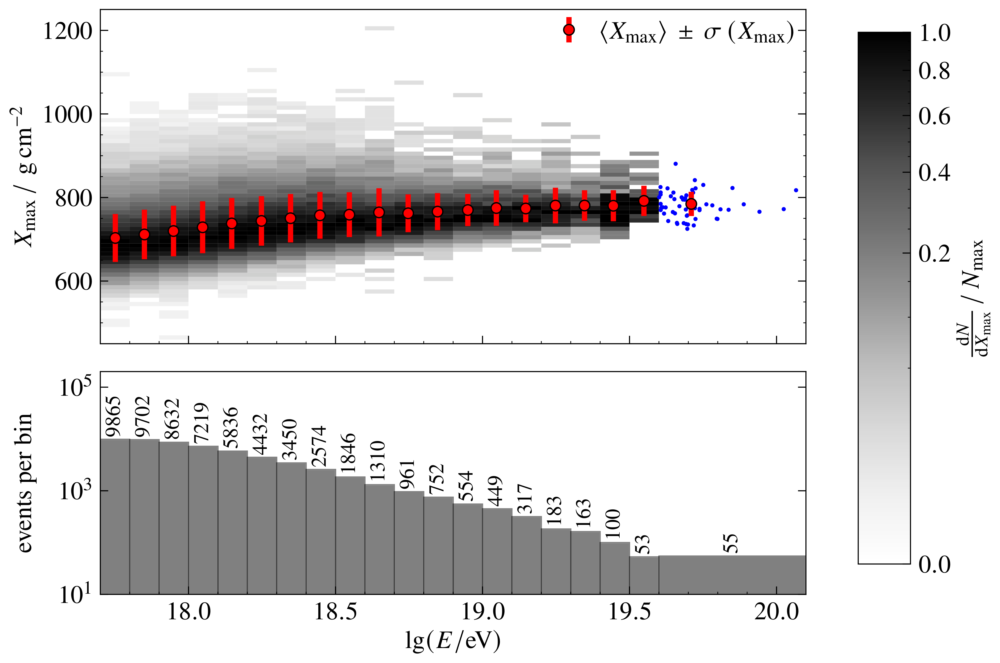
图注：Top panel: Measured $\Xmax^{}$ and energy of the events selected for this analysis. The event density is shown in gray scale, normalized to the entries of the maximum bin at each energy. Individual events above $10^{19.6}$\,eV are displayed as blue points. The large red points represent the mean of the $\Xmax^{}$ distribution in each energy bin, and the error bars indicate its standard deviation. Bottom panel: Number of selected events as a function of energy.
对应解读：对应“建议重点查看的图表”中的第2项和第3项，以及关键图表逐图导读中关于 \(\langle X_{\max}\rangle\) 与 \(\sigma(X_{\max})\) 随能量演化的核心讨论。
入选理由：该图直接把单事件 \(X_{\max}\)–能量分布、各能量 bin 的平均值和标准差、以及高能端事件统计量放在一起，是判断 elongation rate、宽度随能量减小、高能统计是否驱动结论的最核心候选图。虽然它不是最终模型比较图，但在现有候选中最能支撑日报关于折点、平均变重和涨落变小的解读。
来源与置信度：\(arxiv_source\)；high；\(arxiv_source\) / main.tex:figure[3]
Fig04
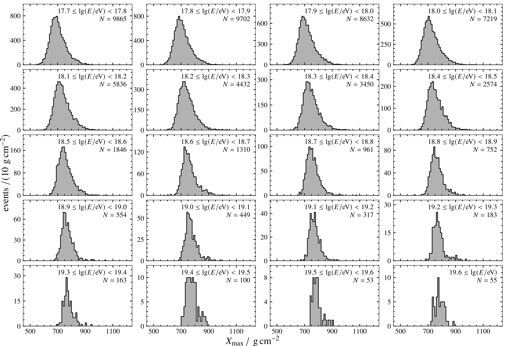
图注：$\Xmax^{}$ distributions in different energy bins.
对应解读：对应“Xmax 分布示例图”和关键图表逐图导读中的图1：查看不同能量 bin 的 \(X_{\max}\) 分布形状、峰位、宽度和深尾。
入选理由：日报特别强调不能只看均值，还要看完整 \(X_{\max}\) 分布的偏斜、尾部和宽度。Fig04 是候选中唯一明确给出多个能量 bin 的 \(X_{\max}\) 分布图，最适合支撑关于深尾缩短、分布变窄和成分由轻变重的直观解释。
来源与置信度：\(arxiv_source\)；high；\(arxiv_source\) / main.tex:figure[4]
Fig07
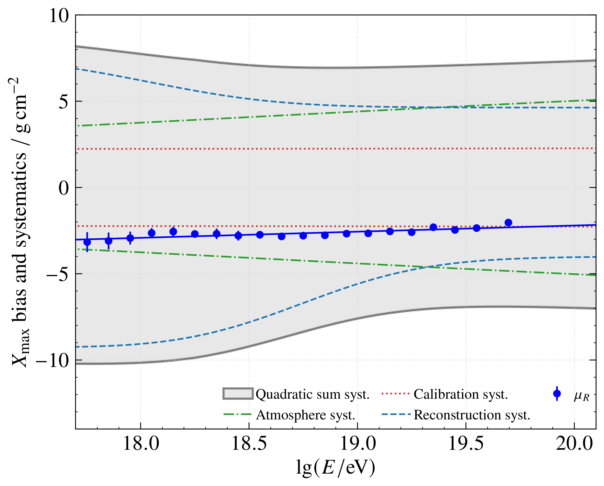
图注：Reconstruction bias (points) and systematic uncertainties in the \(\Xmax\) scale from the detector calibration, reconstruction, and atmosphere (lines) as a function of energy.
对应解读：对应“\(\langle X_{\max}\rangle\) 对 \(\log_{10}E\) 图”中关于系统误差带、Xmax 标定误差和大气/重建系统误差的说明，也对应模型拟合段落中的系统误差讨论。
入选理由：平均 \(X_{\max}\) 的绝对位置直接影响质量组成解释。Fig07 给出重建偏差和来自探测器标定、重建、大气的 \(X_{\max}\) 尺度系统误差随能量的变化，是判断折点和质量趋势是否可能由系统偏移造成的关键辅助图。
来源与置信度：\(arxiv_source\)；high；\(arxiv_source\) / main.tex:figure[7]
Fig02
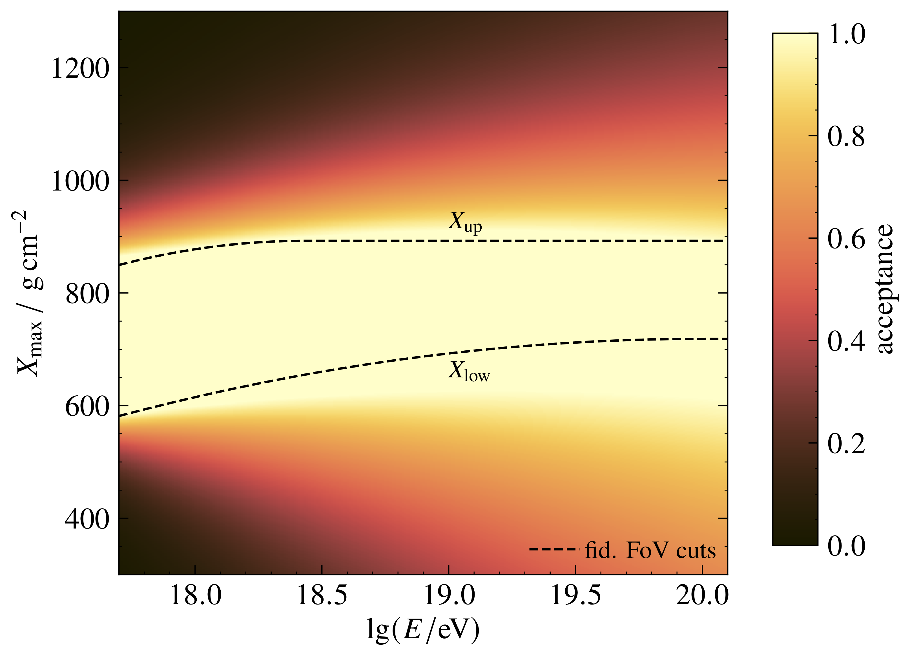
图注：Fiducial field-of-view boundaries from \(\cref{eq:fidfov}\) (black dashed lines) and $\Xmax$ acceptance (color scale) as a function of energy.
对应解读：对应模型拟合段落中关于 FD 视场选择偏差、fiducial field-of-view cut 和 \(X_{\max}\) 接受度校正的讨论。
入选理由：日报强调该类分析必须控制 FD 视场导致的 \(X_{\max}\) 选择偏差。Fig02 同时展示 fiducial 视场边界和接受度随能量、\(X_{\max}\) 的变化，比单一能量 bin 的示例更能说明样本选择如何保证均值和宽度可解释。
来源与置信度：\(arxiv_source\)；high；\(arxiv_source\) / main.tex:figure[2]
Fig08
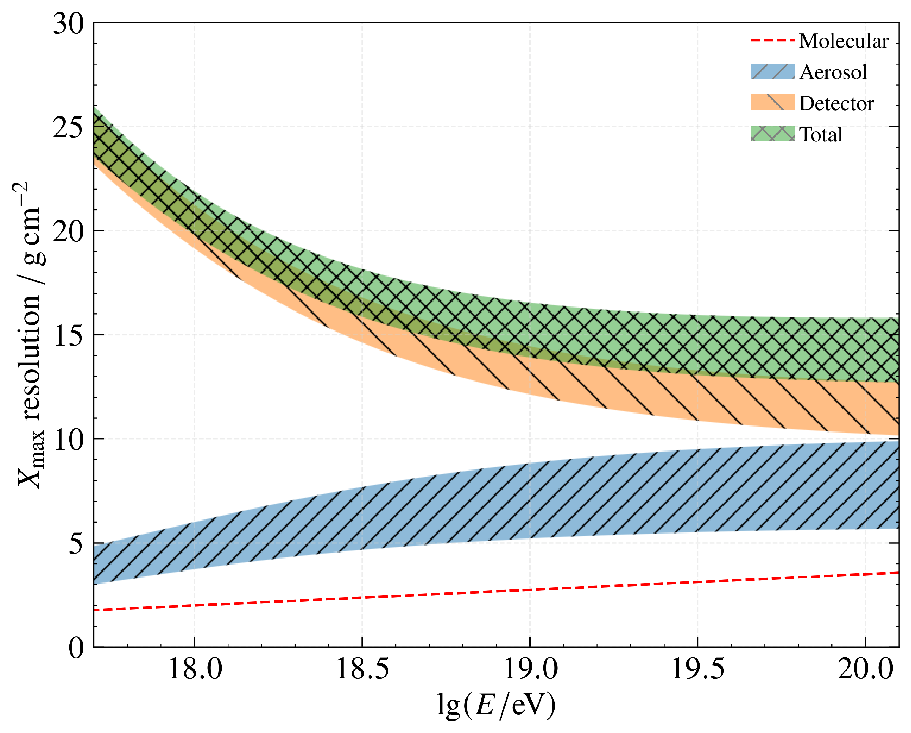
图注：The total \(\Xmax\) resolution and the individual contributions from detector, aerosols, and density profiles as a function of energy. Shaded bands indicate the systematic uncertainties.
对应解读：对应“\(\sigma(X_{\max})\) 对能量图”中关于分布宽度是否已校正探测器分辨率的提醒，以及模型拟合段落中关于分辨率误差的说明。
入选理由：\(X_{\max}\) 宽度随能量下降是本文成分变重、变窄的重要证据，而这一结论依赖对探测器、大气气溶胶和密度剖面分辨率的理解。Fig08 给出总分辨率及分项贡献，是解释 \(\sigma(X_{\max})\) 物理含义的关键系统学图。
来源与置信度：\(arxiv_source\)；high；\(arxiv_source\) / main.tex:figure[8]
Fig10
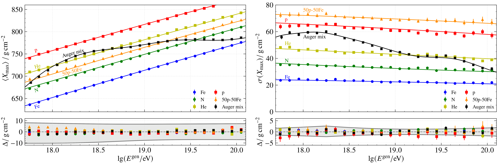
图注：$\meanXmax$ and $\sigmaXmax$ for simulated pure proton, helium, nitrogen, and iron primaries, a 50/50 proton-iron mixture, and the 4-component fractional composition derived in \(\cref{sec:fractions}\) (Auger mix). The line indicates the true moments of the generated data set, while points show the reconstructed values. The lower panel of each figure shows the difference $\Delta$ between reconstructed and generated values. Simulations use the hadronic model \(\Sibyll.\)
对应解读：对应模型拟合段落中关于用模拟检验 \(\meanXmax\)、\(\sigmaXmax\) 重建偏差、残差和不同组成模板响应的讨论。
入选理由：该图展示纯 p、He、N、Fe、混合组成和 Auger mix 在模拟中的真实矩与重建矩差异，含下方面板残差。它不能替代真实数据的成分结果，但能检验重建流程对不同质量组成的偏差，是支撑日报中‘残差/系统误差比名义丰度更重要’这一提醒的有用图。
来源与置信度：\(arxiv_source\)；high；\(arxiv_source\) / main.tex:figure[10]
强相关工作
这篇工作延续了 Auger 关于 Xmax 成分的长期系列结果。早期 Auger 已报告 ankle 以上 Xmax 涨落变小、平均组成变重；本文的新增价值在于曝光显著增加、重建更新，并把折点和高能趋势做得更稳健。可检索关键词包括 “Pierre Auger Xmax mass composition elongation rate 2014 2026”、“ultra-high-energy cosmic rays composition Auger fluorescence detector”。
它也与 Telescope Array 的北半球 Xmax 结果形成重要对照。TA 在统计和系统误差范围内常被解释为与较轻组成相容，而 Auger 指向高能变重；两者的差异可能来自天空覆盖、能标、分析方法、统计量或真实天区差异。可检索 “Telescope Array Xmax composition Auger TA comparison working group”。
理论上，它支持最大刚度受限的混合成分源模型：源能加速到的最大能量近似随电荷数 Z 增加，因此随着能量升高，轻核先到达截止，中重核相对占比上升。相反，纯质子 GZK 主导模型会更难同时解释 Xmax 均值变重和宽度变窄。检索关键词可用 “UHECR mixed composition rigidity dependent cutoff”、“UHECR propagation photodisintegration Auger composition”、“hadronic interaction model muon deficit Xmax”。
相似工作：
- https://arxiv.org/abs/2605.12598
- https://arxiv.org/abs/1409.5083
基础理论 / 方法工作：
- https://arxiv.org/abs/astro-ph/0208243
- https://arxiv.org/abs/1307.5059
相反观点 / 张力线索：
- https://arxiv.org/abs/1801.09784
- https://arxiv.org/abs/1503.07540
2. Jets from Scratch: A 3D Dynamo Origin of Long Gamma-Ray Burst Jets
- 来源：arXiv / astro-ph.HE
- 链接：https://arxiv.org/abs/2605.12931v1
- 作者：Ho-Sang Chan, Ore Gottlieb, Jonatan Jacquemin-Ide, Matteo Cantiello, Mathieu Renzo
- 评分：novelty 9/10，importance 8/10，relevance 9/10，final 9.65/10
- 推荐理由：First 3D GRMHD collapsar simulations showing in-situ toroidal-to-poloidal dynamo launching variable LGRB-like jets; directly relevant to gamma-ray burst central engines and high-energy transient physics.
中文题目：从零生成喷流：长伽马暴喷流的三维发电机起源
做了什么：这篇论文用三维广义相对论磁流体力学（GRMHD）塌缩星模拟检验一个关键问题：长伽马暴所需的大尺度极向磁场，是否必须由前身星“继承”，还是可以在黑洞—吸积盘系统中现场生成。作者从更接近塌缩前恒星模型的环向磁场初始条件出发，发现当盘内环向磁场变得动力学重要后，湍流/发电机过程能在约百个引力半径尺度产生相干极向磁环，并把磁通输运到黑洞附近，进而启动强烈变动、摆动且有时偏离黑洞自旋轴的相对论喷流。喷流功率可维持在 \(\gtrsim 10^{50}\,\mathrm{erg\,s^{-1}}\)，达到长伽马暴所需量级，并且随机发电机造成的磁通反转可能形成“条纹喷流”，为伽马暴光变中的快速结构提供物理来源。
为什么重要：长伽马暴中心引擎模型长期依赖黑洞 Blandford–Znajek 机制，但该机制需要穿过黑洞视界的大尺度极向磁通。问题是：塌缩前恒星内部通常由差分旋转更自然地产生强环向场，而不是干净的大尺度极向场。如果喷流必须依赖前身星预先携带合适极向磁场，那么长伽马暴的发生条件会非常苛刻；如果吸积盘能把环向场自洽转化为极向磁通，喷流形成就会更普遍、更鲁棒。这篇文章的重要性正在于它把“从现实恒星环向场起步也能点燃长伽马暴喷流”这个论点放进了三维 GRMHD 塌缩星环境中检验。
理论 / 观测 / 仪器方法价值：对理论而言，它为塌缩星喷流提供了一个不依赖理想化初始大尺度极向磁场的通道，连接了恒星演化模型、盘发电机、黑洞能量抽取和伽马暴光变。对数值方法而言，它强调必须用三维 GRMHD 才能捕捉非轴对称发电机、磁环随机生成、磁通反转和喷流摆动；二维或预设极向通量的模型容易高估喷流的轴对称性和稳定性。对观测解释而言，条纹喷流、秒量级启动延迟、喷流方向摆动和强烈时变功率都可能映射到长伽马暴 prompt emission 的时间结构、偏振和余辉几何效应。
为什么应该关注：如果你关心长伽马暴为什么只在少数大质量恒星死亡时出现，这篇文章直接触及中心引擎最薄弱的环节：磁通从哪里来。它提出的答案不是“假设已有一根大磁场线”，而是“吸积盘能从更自然的环向场中自己做出来”。这会影响我们如何把恒星演化、金属丰度、自转、磁场放大、超新星爆发失败和伽马暴发生率联系起来，也提醒观测者不要把喷流简单看作稳定、轴对称、始终沿黑洞自旋方向的能量束。
展开详细解读：文章讲解、背景、理论、重点章节、图表与相关工作
文章详细讲解
科学问题：长伽马暴的主流中心引擎图像是塌缩星形成黑洞和高吸积率盘，黑洞周围的大尺度极向磁通通过 Blandford–Znajek 过程抽取黑洞自旋能，产生相对论喷流。但这个图像有一个根本前提：黑洞视界上必须有足够强、足够相干的极向磁场。前身星塌缩时是否能把原有磁通有效压缩并带到黑洞附近并不确定；同时，恒星差分旋转更容易把磁场绕成环向场。本文要回答的是：如果初始条件主要是环向磁场，类似塌缩前恒星模型给出的磁场结构，系统还能不能自发地产生极向磁通并发射长伽马暴级别喷流。
作者怎么做：作者进行了三维 GRMHD 塌缩星模拟，避免了二维轴对称中被反发电机定理和几何约束扭曲的磁场演化。他们把初始磁场设为更接近恒星模型的环向场分布，而不是传统上常用的预置大尺度极向磁环。随着塌缩物质在黑洞周围圆化并形成吸积盘，盘内差分旋转、磁湍流和非轴对称不稳定性共同作用，使环向磁场达到动力学重要水平并触发发电机过程。模拟显示，相干极向磁环在大约 \(\mathcal{O}(100)\) 个引力半径处出现，随后被吸积流拖曳到内盘和黑洞视界附近。
关键结果：这些由盘发电机生成的极向磁通最终穿过黑洞，使黑洞能够启动相对论喷流。喷流并非理想化的平稳轴对称锥体，而是高度可变、会摆动，并且常常与黑洞自旋轴存在夹角。尽管如此，喷流功率仍能达到并维持 \(\gtrsim 10^{50}\,\mathrm{erg\,s^{-1}}\)，与长伽马暴能量学要求相当。更有意思的是，随机发电机过程会导致黑洞附近磁通极性反转，从而形成磁场方向交替的“条纹喷流”。这种结构可能影响喷流内部耗散、辐射效率、偏振信号和 prompt 光变。
局限和下一步：从摘要看，本文重点是证明机制可行，而不是穷尽所有恒星前身星、微物理和辐射过程。真实塌缩星还涉及中微子冷却、核物质状态方程、磁场和角动量的恒星演化不确定性、喷流穿越星壳的辐射转化，以及数值分辨率对湍流发电机效率的影响。下一步需要系统扫描前身星质量、自转、初始磁化、圆化半径、黑洞自旋，以及加入更完整的辐射/中微子物理，才能把“能产生喷流”进一步变成“能解释长伽马暴发生率、持续时间、光变和余辉几何”的定量模型。
背景知识
长伽马暴通常与大质量恒星核心塌缩有关，持续时间从数秒到数百秒不等，常伴随 Ic 型宽线超新星。中心引擎需要在短时间内释放 \(10^{50}\)–\(10^{52}\,\mathrm{erg}\) 量级的准准直相对论能量。塌缩星模型的基本设想是：铁核塌缩后形成黑洞或先形成原中子星再坍缩为黑洞，外层快速旋转物质因角动量支撑形成吸积盘，盘—黑洞系统发射喷流并穿出恒星包层。
历史上，喷流能量来源主要有两类：一类是中微子湮灭，另一类是磁驱动，尤其是 Blandford–Znajek 机制。后者效率更高，也更容易达到长伽马暴所需功率，但它对大尺度极向磁通有硬需求。许多数值模拟为方便启动喷流，会在初始条件中放入一个相干极向磁环或大尺度极向场；这对于研究喷流传播和能量抽取很有用，却绕开了“这束磁通从哪里来”的问题。
为什么现在值得重新看，是因为三维 GRMHD 计算能力和恒星演化模型都进步了。我们能更认真地把塌缩前恒星中的磁场构型、角动量分布和吸积盘形成半径放入相对论模拟，而不必完全依赖理想化磁场。与此同时，长伽马暴光变、偏振、余辉喷流破裂角和多信使约束都显示中心引擎可能非常非平稳，三维时变磁场结构不是细节，而可能是观测信号的来源。
该领域一个常见误区是把“有强磁场”直接等同于“能发射 BZ 喷流”。实际上，磁场方向和拓扑同样重要：强环向场本身不一定能有效穿过黑洞视界并抽取自旋能，必须有净的或局域相干的极向磁通。另一个误区是把喷流默认画成沿自旋轴稳定喷出；在真实三维吸积流中，磁通输运、盘翘曲、湍流和磁通反转都可能让喷流方向和功率剧烈变化。
基础理论 / 方法脉络
核心物理图像是高吸积率黑洞盘中的磁发电机。差分旋转会把任意极向场迅速绕成环向场，即 \(\Omega\)-效应；三维湍流、浮力、磁旋转不稳定性和非轴对称环流则可能把环向场重新组织成极向磁环，即某种有效的 \(\alpha\)-效应。二维轴对称不能长期维持真正发电机，因此三维模拟对这个问题是必要条件，而不是技术奢侈。
关键量包括引力半径 \(r_g=GM_{\rm BH}/c^2\)、黑洞无量纲自旋 \(a_\ast\)、视界磁通 \(\Phi_{\rm BH}\)、盘内等离子体 \(\beta=p_{\rm gas}/p_B\)、吸积率 \(\dot M\)、圆化半径 \(r_{\rm circ}\) 和喷流功率 \(P_{\rm jet}\)。当磁压与气压或动力压可比时，磁场不再只是被动标量，而能改变角动量输运、盘厚度和喷流准直。本文强调极向磁环通常在 \(\sim100 r_g\) 尺度生成，再被吸积流带向黑洞。
观测上，我们不能直接看到黑洞视界磁通，只能通过伽马暴持续时间、光变、各向同性等效能量、余辉喷流开角、偏振和高能谱演化间接约束中心引擎。喷流功率的时间变化可映射到 prompt emission 的变动，但映射并不一一对应，因为还要经过喷流穿越恒星、内部耗散、辐射机制和相对论几何效应。条纹喷流尤其可能改变磁重联耗散位置和偏振角演化。
常见退化包括：更高黑洞自旋、更大磁通和更高吸积率都能提高喷流功率；喷流观测能量还与开角和辐射效率退化；启动延迟既可能来自磁通生成时间，也可能来自盘形成时间或喷流破星时间。数值上，发电机效率可能依赖分辨率、磁 Prandtl 数的有效数值值、初始扰动谱和边界条件，因此稳健性检验比单个漂亮喷流案例更重要。
公式与推导
塌缩星中心引擎的自然长度尺度是黑洞引力半径：
这里 \(G\) 是引力常数，\(M_{\rm BH}\) 是黑洞质量，\(c\) 是光速。摘要中提到极向磁环出现在 \(\mathcal{O}(100)r_g\)，意思是它们不是在视界上凭空出现，而是在内盘外侧的有限半径由盘湍流/发电机生成，再随吸积流向内输运。
盘中磁场是否动力学重要通常用等离子体 \(\beta\) 描述：
其中 \(p_{\rm gas}\) 是气体压力，\(p_B=B^2/8\pi\) 是磁压，\(B\) 是磁场强度。当 \(\beta\gg1\) 时磁场较弱，主要随流体运动；当 \(\beta\sim1\) 或更低时，磁场可显著影响盘结构、角动量输运和喷流发射。本文的关键阶段正是环向场在盘中达到动力学重要后触发发电机。
黑洞上的极向磁通可近似写成：
其中 \(r_H\) 是事件视界半径，\(B^r\) 是径向磁场分量，\(dA\) 是视界面积元，因子 \(1/2\) 常用于避免南北半球绝对值积分的重复计数。真正驱动 BZ 喷流的不是总磁场强度，而是穿过视界并与黑洞自转耦合的极向/径向磁通。
在量级上，Blandford–Znajek 功率可写为：
其中 \(\kappa\) 是与磁场几何有关的无量纲系数，\(\Omega_H\) 是黑洞视界角速度。对 Kerr 黑洞，
这里 \(a_\ast\) 是无量纲自旋。由此可见，喷流功率随视界磁通平方和黑洞自旋相关量平方增长；这就是为什么“能否从环向场生成极向磁通”会直接决定长伽马暴喷流能否启动。
若用吸积率归一化磁通，常定义：
其中 \(\dot M\) 是流入黑洞的质量吸积率。\(\phi_{\rm BH}\) 衡量磁通相对吸积流动压的强弱；在磁通积累很强时系统可能进入磁阻塞盘（MAD）状态。本文关心的是即便初始没有大尺度极向磁通，盘发电机能否把 \(\phi_{\rm BH}\) 提升到足以发射 \(\gtrsim10^{50}\,\mathrm{erg\,s^{-1}}\) 喷流的水平。
从环向场到极向场的最简平均场图像可写为：
其中角括号表示平均场，\(\alpha_{\rm dyn}\) 表示湍流螺旋性等导致的有效发电机项，\(\eta_{\rm t}\) 是湍流磁扩散率。该公式不是本文数值模拟的替代品，而是帮助理解：三维湍流项可把环向场重新组织出极向分量，同时扩散项会破坏相干结构，二者竞争决定磁环能否存活并被内吸积流带到黑洞。
模型拟合 / 应用方法
这类 GRMHD 论文通常不是传统意义上的“拟合观测数据”，而是通过参数化初始条件和诊断量来评估物理机制。核心可变参数包括初始环向磁场强度和空间分布、前身星角动量剖面、黑洞质量和自旋、物质圆化半径、网格分辨率、内外边界条件以及是否包含近似冷却/微物理。模型比较的目标不是最小化某个观测 \(\chi^2\)，而是判断喷流是否启动、何时启动、功率是否达到长伽马暴量级、磁通是否持续、喷流是否能穿出恒星。
参数估计可围绕一组时间序列诊断展开：\(\dot M(t)\)、\(\Phi_{\rm BH}(t)\)、\(\phi_{\rm BH}(t)\)、\(P_{\rm jet}(t)\)、喷流洛伦兹因子、磁化参数 \(\sigma\)、开角、方向角和磁通极性。若要与观测连接，通常需要把引擎输出输入喷流传播和辐射模型，再与 prompt 光变、持续时间 \(T_{90}\)、各向同性等效能量 \(E_{\rm iso}\)、余辉喷流破裂时间和偏振数据比较。这里的“残差”不只是数据点与模型线差异，还包括时间结构是否过平滑、功率是否过低、启动是否过晚、喷流是否过宽或过窄。
主要系统误差来自数值和物理两方面。数值上，湍流发电机对分辨率、网格几何、数值耗散和守恒误差敏感；磁通反转频率也可能受有效磁扩散率影响。物理上，真实塌缩星的磁场可能不纯环向，前身星自转和磁制动历史不确定，中微子冷却和核物质状态方程会改变盘厚度和湍流性质。退化关系包括：初始磁场更强和圆化半径更小都可能缩短喷流启动时间；更大自旋和更大磁通都能增加喷流功率；更高吸积率既增强可用能量，也可能加重重子污染。
实际应用场景是为长伽马暴人口合成提供更物理的喷流启动判据。过去常把“前身星有足够角动量和磁通”作为条件；这篇工作提示，可以把“盘是否能在给定圆化半径和磁化条件下快速产生极向磁通”作为新判据。对观测建模者而言，若引擎天然产生摆动和磁通反转，就不应过度用稳定轴对称喷流模板解释所有光变特征。
重点章节 / 结果段落怎么读
数据/初始条件部分应重点看作者如何从塌缩前恒星模型构造环向磁场剖面，以及这些剖面与常见理想化极向磁环初始条件有何不同。读者应检查初始磁场强度是否覆盖合理前身星范围，角动量分布是否足以形成盘，圆化半径如何定义，以及黑洞初始质量和自旋如何设定。
数值方法部分要看 GRMHD 方程、坐标和网格、边界条件、守恒方案、磁场散度控制和分辨率。由于本文核心是三维发电机，分辨率与数值耗散尤其关键。还应注意作者如何定义喷流区域，例如用 Bernoulli 参数、磁化参数、径向速度或能量通量阈值。
磁场演化/发电机结果部分是论文的核心。应寻找环向场何时达到动力学重要、极向磁环在哪里形成、磁环如何偏离盘中面向内输运，以及这些过程是否在不同初始磁场和圆化半径模型中重复出现。这里决定了“从零生成喷流”是不是单个偶然案例。
喷流性质部分应关注喷流启动时间、功率、方向、开角、洛伦兹因子潜力和时间变动。特别要看喷流是否持续达到 \(\gtrsim10^{50}\,\mathrm{erg\,s^{-1}}\)，以及喷流摆动是否会显著影响其穿出恒星的能力。
讨论和稳健性检验部分应看作者如何解释磁通反转和条纹喷流，如何与长伽马暴光变联系，以及承认了哪些缺失物理。附录若包含分辨率测试、不同初始磁场强度、不同圆化半径或诊断定义，应优先阅读，因为发电机问题最怕数值伪影。
建议重点查看的图表
-
初始前身星和磁场剖面图：看半径上的密度、角速度、比角动量和环向磁场强度，确认初始条件是否确实接近恒星模型，而不是人为调出的强磁盘。
-
三维磁场结构快照：看环向场如何在盘中演化成极向磁环，极向磁环出现的半径是否约为 \(\sim100r_g\)，以及磁环是否相干、是否只是局部数值噪声。
-
视界磁通和吸积率时间序列：重点检查 \(\Phi_{\rm BH}(t)\)、\(\phi_{\rm BH}(t)\)、\(\dot M(t)\) 的相位关系；喷流启动是否紧随极向磁通积累，而不是由边界或初始瞬变导致。
-
喷流功率时间序列：看 \(P_{\rm jet}\) 是否长期高于 \(10^{50}\,\mathrm{erg\,s^{-1}}\)，其变动时间尺度是否为秒量级，是否存在功率骤降与磁通反转对应。
-
喷流方向/摆动诊断图：看喷流轴相对于黑洞自旋轴的夹角随时间如何变化，摆动幅度是否足以影响观测开角和光变解释。
-
磁通极性或条纹结构图：看径向磁场符号、Poynting 通量和磁化参数的空间分布，确认所谓 striped jets 是否表现为沿喷流方向交替的磁极性区。
-
参数扫描或模型比较表：看不同初始磁场强度、圆化半径和前身星模型下喷流启动时间、平均功率、持续时间的变化，判断结论的鲁棒性。
-
分辨率/稳健性诊断：如果有，应检查磁能谱、MRI 质量因子、磁通增长率和喷流功率是否随分辨率收敛。
关键图表逐图导读
图 1：建议首先看初始条件图。横轴通常会是半径或质量坐标，纵轴可能包括密度、角速度、比角动量、磁场强度或等离子体 \(\beta\)。数据线应展示前身星塌缩前结构与模拟采用剖面的对应关系。主要结论应是初始磁场以环向为主并接近恒星模型预期。读图陷阱是不要只看最大磁场强度，还要看磁场所在半径和与圆化半径的关系，因为这决定磁通何时能进入盘。
图 2：三维或二维切片的磁场形态图应是核心图之一。坐标轴可能是以 \(r_g\) 归一化的空间坐标，颜色表示密度、磁压或磁化参数，线条表示磁场线。应关注在 \(\sim100r_g\) 附近是否出现闭合或半闭合的极向磁环，以及这些磁环如何向内移动。陷阱是投影图容易把复杂三维结构画得过于连贯，最好结合不同切面或时间序列判断相干性。
图 3：视界磁通、吸积率和喷流功率的时间序列通常最能证明因果链。横轴应为爆发后时间或 \(GM/c^3\) 单位时间，纵轴分别为 \(\Phi_{\rm BH}\)、\(\phi_{\rm BH}\)、\(\dot M\)、\(P_{\rm jet}\)。应看喷流功率上升是否对应视界极向磁通增长，而不是单纯吸积率峰值。若有阴影置信区间或多模型线，要比较启动时间和平均功率差异。
图 4：喷流功率和方向的角分布图可能以极角为横轴、能量通量或 Lorentz 因子为纵轴，或以时间为横轴展示喷流轴偏角。主要结论应是喷流高度可变且会 wobble，不总是沿黑洞自旋轴稳定喷出。读图时要注意喷流方向的定义：按最大能流、动量通量还是磁轴定义，可能得到不同摆动幅度。
图 5：磁通反转/条纹喷流图应显示 \(B^r\) 或极向磁场符号随时间和半径的变化。若横轴是时间、纵轴是半径，颜色正负交替可对应磁极性翻转；若是空间切片，则应看喷流内沿传播方向的正负磁区。陷阱是数值重联和分辨率会影响条纹厚度，不能把条纹间距直接等同于观测光变周期，除非经过传播和辐射模型。
图 6：模型比较表或参数扫描图应把不同初始磁场、圆化半径或前身星模型的启动时间、平均功率、最大 \(\phi_{\rm BH}\) 和喷流持续性放在一起。读者应关注是否所有模型都成功，还是只有特定强磁/小圆化半径模型成功。若失败案例也被展示，它们对理解机制边界比成功案例同样重要。
论文原图 / 可嵌入图片
Fig02

图注：Timeseries of all models showing: horizon-penetrating magnetic flux (a), jet power (b), upper-hemisphere magnetic-field coherency (c), lower-hemisphere magnetic-field coherency (d), mass accretion rate (e), and the dimensionless horizon-penetrating magnetic flux, i.e., the MAD parameter (f).
对应解读：对应“建议重点查看的图表”第3、4项，以及“关键图表逐图导读”图3：视界磁通、吸积率、喷流功率和MAD参数时间序列。
入选理由：这是最直接支撑论文因果链的核心诊断图，同时给出horizon-penetrating magnetic flux、jet power、磁场相干性、吸积率和无量纲磁通/MAD参数，可检验喷流启动是否跟随黑洞极向磁通积累、喷流功率是否达到长伽马暴量级，以及不同模型之间启动时间和强度的差异。
来源与置信度：\(arxiv_source\)；high；\(arxiv_source\) / sample701.tex:figure[2]
Fig05

图注：The spacetime diagram of the magnetic-flux function $\Phi$ evaluated on the midplane. For model \(\texttt{rc\_36\_B\_s},\) we include the timescale for the advection, ejection, and generation of poloidal loops. For model \(\texttt{rc\_36\_B\_w},\) we highlight the time interval during which magnetic‑flux inversion occurs without any clear signature of inward magnetic‑flux advection. We show in Appendix~\(\ref{sec:supp}\) that during this interval the magnetic loops are instead dragged inward along directions away from the midplane.
对应解读：对应“建议重点查看的图表”第2、6项，以及“关键图表逐图导读”图2和图5：极向磁环生成、内移与磁通反转/条纹喷流机制。
入选理由：该图是磁通函数的时空图，直接展示盘中极向磁环的产生、平流、抛出以及磁通反转过程，尤其标注了模型中磁环内移和磁通反演的时间区间，比单张形态快照更能证明发电机从环向场生成极向磁通的动态过程。
来源与置信度：\(arxiv_source\)；high；\(arxiv_source\) / sample701.tex:figure[5]
Fig03

图注：Density maps (with magnetic field lines overlaid) in the $x-z$ plane for all models (except \(\texttt{rc\_36\_B\_vw})\) at the epoch when the instantaneous MAD parameter reaches its maximum.
对应解读：对应“建议重点查看的图表”第2项，以及“关键图表逐图导读”图2：密度切片叠加磁场线，查看极向场结构和喷流通道。
入选理由：该图在各模型MAD参数达到最大时给出x-z平面密度图和磁场线，可直观看到黑洞附近磁场结构、盘-喷流几何以及不同模型中磁场是否形成相干的大尺度结构，是理解时间序列诊断背后空间形态的重要补充。
来源与置信度：\(arxiv_source\)；high；\(arxiv_source\) / sample701.tex:figure[3]
Fig04
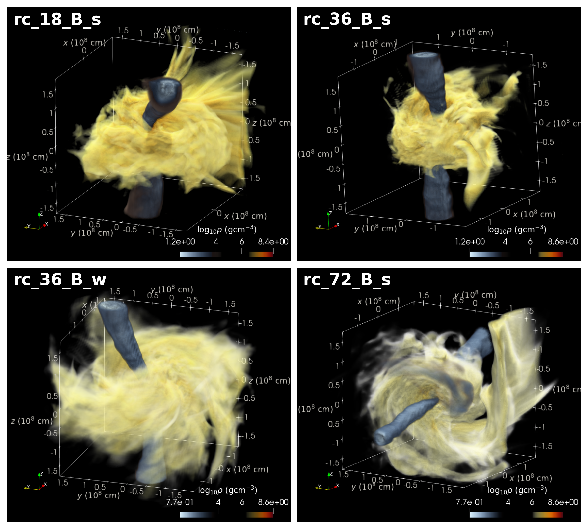
图注：Same as Figure~\(\ref{fig:density_jet},\) but showing the 3D volume rendering of the rest-mass density on a log$_{10}$ scale, illustrating wobbling jet morphologies in all models. The lower‑left arrows indicate the orientation. The range of densities not shown is indicated as transparent along the colorbar.
对应解读：对应“建议重点查看的图表”第5项，以及“关键图表逐图导读”图4：三维喷流形态和wobbling jet。
入选理由：该图用三维密度体渲染展示所有模型中的摆动喷流形态，直接支撑论文关于喷流高度可变、偏离黑洞自旋轴和非轴对称传播的结论；虽然定量性不如时间序列图，但对解释喷流方向变化和观测几何影响很关键。
来源与置信度：\(arxiv_source\)；high；\(arxiv_source\) / sample701.tex:figure[4]
强相关工作
这篇工作直接连接到两条文献线索。第一条是长伽马暴塌缩星模型和 Blandford–Znajek 喷流：早期理论给出了黑洞自旋能通过磁场抽取的机制，随后大量 GRMHD 模拟研究了预置极向磁通下的喷流启动、MAD 状态和喷流穿越恒星。本文与这些工作不同之处在于，它不把大尺度极向磁通作为初始假设，而是尝试从更自然的环向磁场中自洽生成。
第二条是吸积盘发电机和磁通输运问题。黑洞吸积盘中，湍流是否能产生相干大尺度极向磁场、磁通能否克服扩散被输运到黑洞，一直是从 X 射线双星、AGN 到伽马暴中心引擎的共同问题。本文的塌缩星环境具有高吸积率、厚盘、强时变外供给和相对论引力，因此不能简单套用薄盘磁通扩散结论。
也存在潜在张力和相反观点：一些研究认为长伽马暴前身星需要在塌缩前保留强大尺度磁通，或者认为磁通不足会导致喷流无法及时穿出恒星；另一些工作强调磁星中心引擎而非黑洞 BZ 引擎。检索时可用关键词：collapsar GRMHD toroidal magnetic field dynamo, long gamma-ray burst Blandford Znajek jet, accretion disk dynamo poloidal flux, magnetically arrested disk collapsar, striped jets gamma-ray bursts, jet wobbling collapsar。
相似工作：
- https://arxiv.org/abs/2605.12931
- https://arxiv.org/pdf/2605.12931
基础理论 / 方法工作：
- https://ui.adsabs.harvard.edu/abs/1977MNRAS.179..433B/abstract
- https://ui.adsabs.harvard.edu/abs/1993ApJ...405..273W/abstract
- https://ui.adsabs.harvard.edu/abs/1999ApJ...524..262M/abstract
相反观点 / 张力线索：
- https://ui.adsabs.harvard.edu/abs/2006ApJ...637L..73B/abstract
- https://ui.adsabs.harvard.edu/abs/2011MNRAS.410.2302T/abstract
3. The Very Late Time Afterglow of GW170817 Favors a Wobbling Jet
- 来源：arXiv / astro-ph.HE
- 链接：https://arxiv.org/abs/2605.13719v1
- 作者：Hao Wang, Ore Gottlieb, Aman Katira, Muskan Yadav, Lei Lei, Yi-Zhong Fan, Da-Ming Wei
- 评分：novelty 8/10，importance 8/10，relevance 9/10，final 9.35/10
- 推荐理由：Addresses GW170817 late afterglow and GRB jet structure with a quantitatively favored wobbling/ring-shaped jet model; high relevance to GRB and multimessenger high-energy astrophysics.
中文题目：GW170817 极晚期余辉更支持“摆动喷流”而非普通准直喷流
做了什么：这篇文章重新解释双中子星并合事件 GW170817 在并合后多年尺度上的余辉衰减。标准的准直结构化喷流模型预期喷流破裂后光变会较快下降，但最新的极晚期观测显示衰减偏浅。作者受广义相对论磁流体模拟启发，提出喷流轴并非固定，而是在传播中发生较大角度摆动，在天球上扫出一个环状发射结构；观测者在喷流破裂后会逐渐看到更长的发射弧段，因此衰减自然变浅。通过对多信使数据做贝叶斯比较，作者声称环状/摆动喷流相对于传统准直喷流有约 4.8σ 的统计偏好，并推得摆动角约 27°。
为什么重要：GW170817 是目前唯一一个同时有引力波、短伽马暴、千新星和长期非热余辉完整跟踪的双中子星并合事件，因此它几乎是检验短暴喷流几何、能量分布和并合后吸积盘动力学的基准样本。极晚期余辉的斜率不是一个细节参数：它直接决定我们是否需要在余辉中加入额外成分，还是需要修改对喷流三维结构的理解。如果摆动喷流解释成立，短 GRB 的喷流可能普遍不是固定轴对称结构，而是由倾斜盘、磁场和喷流-环境耦合共同塑造的非轴对称外流。
理论 / 观测 / 仪器方法价值：对理论而言，这项工作把 GRMHD 模拟中出现的喷流摆动、盘倾斜和非轴对称结构带入可观测余辉建模，提供了从并合中心引擎到多年尺度同步辐射光变的连接。对观测而言，它给出了一个不额外引入第二个发射成分即可解释浅衰减的几何方案，并强调极晚期射电/X 射线监测对判别喷流结构的价值。对方法而言，文章展示了如何用多信使数据的贝叶斯模型比较去区分准直结构化喷流与环状摆动喷流，而不仅仅拟合单条光变曲线。
为什么应该关注：如果你关心短伽马暴的真实能量、事件率校正、喷流开角分布或引力波事件的电磁对应体可探测性，这篇文章都值得看。传统上我们常把离轴 GRB 余辉理解为一个轴对称结构化喷流被不同视角观察到的结果；这篇文章提醒我们，极晚期数据已经足以检验这种简化。未来 LIGO/Virgo/KAGRA、Einstein Telescope、Cosmic Explorer 与 SKA/ngVLA 时代会发现更多双中子星并合余辉，是否需要把喷流摆动作为标准模型的一部分，将影响参数反演和群体统计。
展开详细解读：文章讲解、背景、理论、重点章节、图表与相关工作
文章详细讲解
科学问题：GW170817 的余辉在射电、光学和 X 射线波段曾表现出先缓慢上升、在约百天量级达到峰值、随后衰减的典型离轴喷流特征。早期和中期数据支持一个窄核加宽翼的结构化相对论喷流，并且 VLBI 超光速视运动也强烈支持成功突破的准直喷流。然而，在并合后很晚的时间，观测到的余辉衰减似乎比标准准直喷流破裂后的预期更浅。问题在于：这是否意味着存在额外能量注入、千新星余辉、非相对论并合抛射物激波等额外成分，还是说明喷流本身的几何结构需要修正？
作者怎么做：文章提出“摆动喷流”图像。喷流并非沿一个固定轴传播，而是由于中心吸积盘倾斜、盘-回落物质相互作用或角动量非对称抛射而发生进动/摆动，在天球上拖出一个环状或弧状发射区域。对离轴观测者而言，喷流破裂后可见区域随洛伦兹因子下降而增大；如果发射区是环形而非单个准直斑块，观测者会随着时间看到越来越长的发射弧段。这会抵消一部分常规喷流破裂带来的快速衰减，使晚期光变更浅。作者据此建立环状喷流余辉模型，并与传统准直结构化喷流模型一起，对 GW170817 的多信使数据进行贝叶斯拟合和模型比较。
关键结果：根据摘要，环状摆动喷流模型能够在不引入额外发射成分的情况下同时解释多信使约束和极晚期浅衰减。贝叶斯分析显示，该模型相对于传统准直喷流被偏好，显著性约 4.8σ。拟合得到的摆动角约为 27°，这是一个相当大的角度，暗示中心吸积盘可能存在显著倾斜，或者并合后物质回落、磁场结构与喷流之间发生了强烈非轴对称相互作用。作者还指出，其他一些 GRB 余辉中也出现过类似浅衰减，因而摆动喷流可能不是 GW170817 的特例。
局限和下一步：这类结论高度依赖极晚期低信噪比数据的系统误差、跨波段定标、宿主星背景扣除以及模型先验。所谓 4.8σ 的偏好需要检查其来自贝叶斯证据、信息准则还是似然差异，以及是否充分惩罚了额外几何自由度。摆动喷流与其他解释之间也可能存在退化，例如千新星余辉、慢速抛射物与星际介质相互作用、持续能量注入、微物理参数演化等。下一步最关键的是继续获得更晚期射电和 X 射线点，检查光谱是否仍是同一同步辐射谱段，并通过更高精度的位置/尺寸测量验证环状发射结构的几何预言。
背景知识
GW170817/GRB 170817A 是双中子星并合多信使天文学的标志性事件。引力波给出了并合距离、轨道倾角和源参数的约束；短伽马暴给出一个弱而延迟的高能信号；千新星 AT2017gfo 揭示了 r 过程核合成抛射物；之后从射电到 X 射线的非热余辉则追踪相对论外流与周围介质的相互作用。由于目前只有这一例双中子星并合具有如此完整的数据，它在短 GRB 喷流研究中承担了远超单个事件的权重。
GW170817 余辉的早期争论集中在“成功喷流”与“窒息喷流/茧激波”之间。若喷流成功穿出并合抛射物，应形成窄核结构化喷流，离轴观测者会先看到缓慢增亮，随后当喷流减速、辐射锥变宽时达到峰值并衰减。VLBI 观测到的超光速视运动和紧致射电源支持成功喷流图像，使结构化喷流成为主流解释。但这并不意味着喷流一定是轴对称、固定方向的理想锥体；中心引擎附近的吸积盘、磁场和回落物质可以引入三维非轴对称性。
现在重新审视这个问题，是因为极晚期余辉把模型推到了喷流破裂之后的动力学阶段。在这个阶段，不同喷流几何的光变斜率差异会被放大：轴对称准直喷流通常预期更陡的衰减，而更宽、更非轴对称或有额外能量供给的结构会给出更浅衰减。换言之，晚期数据不只是补充几点光变，而是在检验喷流的几何维度。
该领域一个常见误区是把“结构化喷流”默认等同于“轴对称结构化喷流”。实际数值模拟中，喷流可能被并合抛射物、倾斜盘、磁场扭曲和回落物质扰动，形成随方位角变化的能量分布。另一个误区是把浅衰减立即归因于新成分；这篇文章的立场是，几何效应本身也可能产生类似信号。反过来，也不能因为一个几何模型拟合更好就排除所有物理新成分，必须结合光谱、成像和群体样本来判断。
基础理论 / 方法脉络
余辉的基本物理是相对论外流扫过外部介质，驱动前向激波，加速电子并放大磁场，产生同步辐射。可观测光变取决于外流能量、洛伦兹因子、外部介质密度、电子能谱指数以及微物理参数。对离轴观测者，早期辐射被相对论束射限制在角尺度约 1/Γ 的锥内；当 Γ 下降、束射锥变宽时，原本偏离视线的高能喷流核逐渐进入视野，光变上升并达到峰值。
准直喷流的“喷流破裂”来自几何效应和动力学效应。当 Γ 降到约 1/θ_j，其中 θ_j 是喷流有效开角时，观测者开始感知喷流边界；若喷流还发生横向扩张，光变会进一步变陡。对于轴对称结构化喷流，喷流破裂后的衰减斜率通常由电子谱指数和几何边界共同决定。因此，晚期衰减指数是判断喷流是否有边界、是否轴对称、是否存在额外角向结构的重要诊断量。
摆动喷流改变的是角向发射面积随时间进入视野的方式。若喷流轴在中心引擎活动期间扫过一个锥面，则在天球投影上形成环状或弧状高能结构。晚期 Γ 下降后，可见区域不只是覆盖单个喷流核附近，而是沿环逐渐扩展。这样，单个局部发射区的同步辐射仍在衰减，但可见弧长增加带来的发射面积增长会让总通量下降得更慢。
观测方法上，关键不是只看某个波段的单点偏离，而是检查射电、光学、X 射线是否保持同一谱形和同一时间演化。如果浅衰减来自同一前向激波几何效应，跨波段光变应在同一谱段关系下协同变化；如果来自额外成分，则可能出现谱指数改变、光变色散、位置偏移或源尺寸演化异常。主要系统误差包括宿主星背景、低通量 X 射线计数统计、射电定标、闪烁、外部介质密度假设以及微物理参数是否随时间变化。
公式与推导
余辉建模从激波能量守恒出发。对均匀外部介质中的绝热相对论 blast wave，可写成近似关系：
其中 \(E_{\rm iso}\) 是各向同性等效能量，\(R\) 是激波半径，\(n\) 是外部介质数密度，\(m_p\) 是质子质量，\(c\) 是光速，\(\Gamma\) 是激波洛伦兹因子。这个式子表达扫掠外部物质后，能量主要储存在相对论激波内能中。
观测时间与半径和洛伦兹因子近似满足：
其中 \(z\) 为红移。联立上式得到 Blandford-McKee 阶段的标度 \(\Gamma\propto t_{\rm obs}^{-3/8}\)。这意味着随时间推移，相对论束射角 \(\sim 1/\Gamma\) 逐渐变宽，离轴观测者能看到越来越大的角向区域。
同步辐射谱通常由特征频率和峰值通量描述。在慢冷却、\(\nu_m<\nu<\nu_c\) 区间，通量可写成标度形式：
其中 \(p\) 是非热电子能谱指数，\(\epsilon_e\) 和 \(\epsilon_B\) 分别是激波内能进入电子和磁场的比例，\(\nu\) 是观测频率。这个公式说明光变斜率和谱指数共同约束 \(p\) 以及动力学演化。
对传统准直喷流，喷流破裂大致发生在：
其中 \(t_j\) 是喷流破裂时间，\(\theta_j\) 是喷流核心或有效开角。破裂后，由于可见区域触及喷流边缘且缺少新的角向发射面积，光变衰减会比球对称情形更陡，常见近似为 \(F_\nu\propto t^{-p}\) 或接近这一量级，具体取决于横向扩张和结构化能量分布。
摆动喷流可把角向能量分布写成沿环集中的形式，例如概念上表示为：
其中 \(\theta_w\) 是摆动角或环半径，\(\sigma_\theta\) 是环的角宽度，\(g(\phi)\) 描述沿方位角的亮度分布。若环较完整，\(g(\phi)\) 近似常数；若只有部分弧段明亮，则 \(g(\phi)\) 非均匀。
总观测通量可抽象写为对可见角区积分：
其中 \(\delta_D=[\Gamma(1-\beta\cos\alpha)]^{-1}\) 是多普勒因子，\(j'_{\nu'}\) 是共动系辐射率，\(\alpha\) 是局部速度方向与视线夹角，\(\Omega_{\rm vis}\) 是满足束射条件的可见区域。摆动喷流的核心效果是 \(\Omega_{\rm vis}\) 与环的交集随时间增长，令可见弧长增加，从而使总通量的下降斜率小于单个准直斑块的衰减斜率。
模型拟合 / 应用方法
这篇文章的拟合核心应是比较两类角向结构模型：传统准直结构化喷流与摆动/环状喷流。共同参数通常包括总能量或核心能量、核心角、外部介质密度、观测角、电子谱指数 \(p\)、\(\epsilon_e\)、\(\epsilon_B\)、爆发时间和距离等；环状模型还会引入摆动角、环宽、环上亮度分布或等效弧长参数。多信使约束可能包括引力波给出的距离-倾角后验、GRB 触发时间和能量、VLBI 视运动、以及多波段余辉光变。
贝叶斯分析通常写作 \(P(\Theta|D,M)\propto \mathcal{L}(D|\Theta,M)\pi(\Theta|M)\)，其中 \(D\) 是数据，\(M\) 是模型，\(\Theta\) 是参数。模型比较要看证据 \(Z=\int \mathcal{L}\pi d\Theta\)，而不仅是最佳拟合 \(\chi^2\)。如果文章声称 4.8σ 偏好，读者应检查这是由 Bayes factor 转换而来，还是由似然比近似转换而来；还要看先验体积是否公平，尤其是环状模型多出的几何自由度是否被充分惩罚。
实际看残差时，应重点比较峰值后到极晚期的系统性偏离。若准直喷流模型在所有晚期波段都系统性预测过低或衰减过快，而环状模型能同时保持正确谱指数和归一化，这支持几何解释。若只有某个波段偏离，则可能是背景扣除或额外成分。还要看早期上升段、峰值时间、VLBI 位置漂移是否被牺牲；一个只改善极晚期光变但破坏早期成像约束的模型并不可靠。
主要退化关系包括：能量与密度的退化、观测角与喷流核心角的退化、摆动角与环宽/亮度分布的退化、\(p\) 与晚期衰减斜率的退化、\(\epsilon_B\) 与密度的退化。系统误差方面，GW170817 极晚期信号很弱，X 射线计数、射电宿主背景、闪烁和仪器交叉定标都可能影响斜率。应用场景上，该类模型可用于未来双中子星并合余辉的参数反演，也可用于解释部分长/短 GRB 在喷流破裂后衰减过浅的现象。
重点章节 / 结果段落怎么读
-
引言和问题提出：读者应先确认作者如何定义“极晚期浅衰减”，以及他们认为标准准直结构化喷流在哪些数据点上失败。这里要区分统计显著的浅衰减与单个低信噪比点造成的印象。
-
摆动喷流模型：重点看环状结构的几何定义、摆动角如何进入能量角分布、是否假设完整环还是局部弧段、是否包含横向扩张和真实动力学演化。还要看作者如何把 GRMHD 模拟动机转化为解析或半解析余辉模型。
-
数据和多信使约束：应检查使用了哪些射电、光学、X 射线数据点，是否包含 VLBI 视运动/源尺寸约束，是否使用引力波的距离和倾角先验。极晚期数据的处理方式尤其关键，包括上限、非探测和背景扣除。
-
贝叶斯拟合与模型比较：重点读似然函数、先验范围、采样方法、证据计算和显著性换算。若有表格列出参数后验，应检查摆动角、观测角、外部密度和微物理参数是否合理，是否与已有 GW170817 分析一致。
-
结果和讨论：看作者是否说明浅衰减的物理来源，即可见发射弧长随时间增加，而不是简单调参。也要看他们如何排除或比较其他解释，如千新星余辉、能量注入、非相对论抛射物余辉。
-
稳健性检验和附录：如果论文有附录，应优先查看不同先验、不同数据组合、去掉某些晚期点、改变外部介质模型后，环状喷流偏好是否仍存在。
建议重点查看的图表
-
多波段余辉光变图：检查射电、光学、X 射线数据是否可由同一谱段同步辐射描述；重点看峰值后尤其是多年尺度数据相对于准直喷流模型的残差。
-
准直喷流与环状喷流模型对比图：看两条模型线在喷流破裂后的斜率差异，而不仅看最佳拟合是否穿过数据点。阴影区或置信带宽度能显示模型不确定性。
-
几何示意图或天球投影图：检查摆动角、观测角、环宽和可见区域如何定义。读者应确认“环状”是物理喷流路径、能量沉积分布，还是等效辐射几何。
-
后验分布 corner plot：重点看摆动角约 27° 的后验是否紧致，是否与观测角、环宽、能量和密度强相关。若后验受先验边界限制，需要谨慎。
-
贝叶斯证据或模型比较表：检查 Bayes factor、\(\Delta\ln Z\)、AIC/BIC 或显著性换算。要看是否比较了足够多的备选模型，而不是只比较两个特定模型。
-
VLBI 位置/视运动约束图：如果包含，应看环状喷流是否仍能解释超光速视运动和紧致源尺寸；这是 GW170817 成功喷流解释的关键证据。
-
残差图：检查残差是否随机分布，还是某个时期或某个波段仍有系统偏差。特别关注极晚期点的误差条是否足以支撑浅衰减结论。
关键图表逐图导读
图 1：通常应是 GW170817 多波段余辉光变。横轴为并合后时间，常用对数天数或年；纵轴为通量密度或按谱指数缩放到同一频率的通量。数据点代表射电、光学、X 射线观测，模型线代表准直喷流和摆动喷流。主要看峰值后晚期斜率：若准直喷流线明显下降更快，而摆动喷流线贴合多年尺度数据，这就是论文主张的核心证据。读图陷阱是不同波段可能被缩放过，不能把缩放后的重合误认为原始通量完全相同。
图 2：可能是喷流几何示意或天球投影。坐标轴一般是相对于并合轴或视线的角坐标，颜色表示能量面密度或亮度。准直模型会显示一个中心亮核和较暗翼，摆动模型则显示环状或弧状增强区。应关注观测者视线相对于环的位置，以及随时间增大的可见束射区域如何切过环。陷阱是示意图未必按真实角尺度绘制，不能直接从视觉面积估计通量贡献。
图 3：可能是后验 corner plot。横纵轴为模型参数，如观测角、摆动角、环宽、能量、密度、\(p\)、\(\epsilon_e\)、\(\epsilon_B\)。一维直方图给出边缘后验，二维等高线给出参数相关性。重点看摆动角约 27° 是否有清晰峰值，以及它是否和观测角或环宽存在强退化。陷阱是若先验范围较窄或边界截断，后验峰值可能部分由先验驱动。
图 4：可能是模型比较或残差图。横轴为时间，纵轴为 \((F_{\rm obs}-F_{\rm model})/\sigma\) 或通量比。若准直喷流在极晚期连续出现同符号残差，而摆动喷流残差接近零，说明改进不是单点偶然。读者也应看早期和峰值附近残差，确认环状模型没有通过牺牲其他阶段来改善晚期。
图 5：如果有 VLBI 或质心运动图，横轴为时间，纵轴为角位置偏移或表观速度。GW170817 的超光速运动曾强烈支持窄喷流核。摆动喷流若能保持类似质心漂移并同时解释浅衰减，会更有说服力。陷阱是光变拟合和成像拟合权重可能不同，必须看联合似然而非单独视觉匹配。
图 6：若有稳健性检验图，可能展示不同数据组合、不同先验或不同外部介质假设下的 Bayes factor。应看环状喷流偏好是否由少数极晚期点主导。若去掉某个争议点后显著性大幅下降，则结论应表述为有希望而非定论。
论文原图 / 可嵌入图片
Fig02
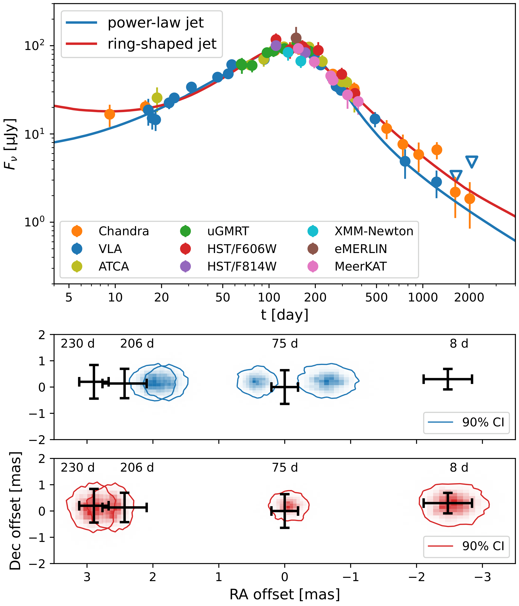
图注：Top: the best-fitting light curves for the GW170817 afterglow, where all data are shifted to 3 GHz. Bottom: the 90\% confidence interval for the centroid offset at respective dates.
对应解读：对应“建议重点查看的图表”中的多波段余辉光变图、准直喷流与环状喷流模型对比、VLBI 位置/视运动约束图；也对应“关键图表逐图导读”中图 1 的晚期光变斜率比较和图 5 的质心运动约束。
入选理由：这是候选图中最能支撑论文核心结论的一张：上半部分给出 GW170817 余辉最佳拟合光变，并将多波段数据统一移到 3 GHz，直接检验极晚期浅衰减是否更符合摆动/环状喷流而非传统准直喷流；下半部分给出不同日期质心偏移的 90% 置信区间，可同时检查模型是否仍满足 GW170817 成功喷流解释中的 VLBI 位置约束。因此它同时覆盖光变拟合和多信使几何约束，科学价值最高。
来源与置信度：\(arxiv_source\)；high；\(arxiv_source\) / GW170817.tex:figure[2]
Fig01
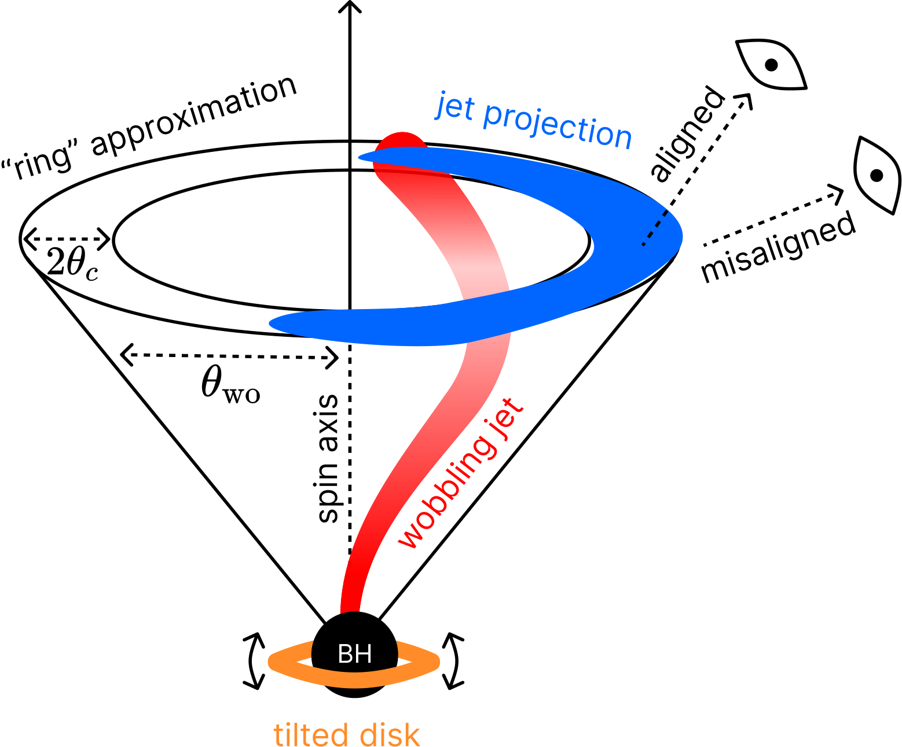
图注：The cartoon illustrates our wobbling jet model and its ring-shape approximation.
对应解读：对应“建议重点查看的图表”中的几何示意图或天球投影图；也对应“关键图表逐图导读”中图 2 关于摆动角、观测角、环状近似和可见发射区域定义的解读。
入选理由：这张图展示摆动喷流模型及其环状近似，是理解论文物理图像的关键辅助图。它能帮助读者区分传统准直喷流与摆动喷流的几何差异，理解为什么喷流破裂后可见发射弧段增长会导致更浅的晚期衰减。虽然它是示意图而非直接数据拟合结果，但对解释摆动角和环状发射结构的定义非常重要。
来源与置信度：\(arxiv_source\)；high；\(arxiv_source\) / GW170817.tex:figure[1]
强相关工作
这篇工作直接处在 GW170817 余辉解释的延长线上。早期代表性研究包括结构化喷流、茧模型、成功喷流与 VLBI 视运动分析等。建议检索关键词：“GW170817 structured jet afterglow”, “GRB 170817A VLBI superluminal motion”, “GW170817 late-time afterglow shallow decay”。这些工作建立了标准图像：离轴观察一个成功突破的窄核结构化喷流。本文不是推翻成功喷流，而是在成功喷流基础上加入非轴对称摆动几何。
与之竞争或存在张力的解释包括千新星余辉、并合动力学抛射物与星际介质相互作用、持续能量注入、微物理参数演化，以及多成分外流模型。建议检索：“kilonova afterglow GW170817”, “late time X-ray excess GW170817”, “cocoon afterglow neutron star merger”, “energy injection GRB afterglow shallow decay”。这些解释的共同点是试图解释晚期衰减变浅，但物理来源不同：有的来自新发射成分，有的来自动力学能量分布，有的来自辐射参数变化。本文的独特之处是强调单一前向激波加三维几何即可完成解释。
从基础理论上，相关工作还包括 Blandford-McKee 相对论激波、自相似余辉理论、Sari-Piran-Narayan 同步辐射谱、Rhoads 喷流破裂，以及结构化喷流和离轴 GRB 的参数反演。对摆动喷流本身，还应检索 GRMHD 模拟中的 tilted disk jet、precessing jet、wobbling jet、BNS merger accretion disk tilt 等关键词，以确认 27° 摆动角在中心引擎模拟中是否自然。
相似工作：
- https://arxiv.org/abs/2605.13719
- https://arxiv.org/abs/1806.09693
- https://arxiv.org/abs/1808.00469
- https://arxiv.org/abs/1810.12917
基础理论 / 方法工作：
- https://ui.adsabs.harvard.edu/abs/1976PhFl...19.1130B/abstract
- https://ui.adsabs.harvard.edu/abs/1998ApJ...497L..17S/abstract
- https://ui.adsabs.harvard.edu/abs/1999ApJ...525..737R/abstract
- https://ui.adsabs.harvard.edu/abs/1999ApJ...519L..17S/abstract
相反观点 / 张力线索：
- https://arxiv.org/abs/1710.05446
- https://arxiv.org/abs/1710.05838
- https://arxiv.org/abs/1801.06189
- https://arxiv.org/abs/2005.01764
4. On the Apparent Correlation between X-ray and Neutrino Luminosities of Active Galactic Nuclei
- 来源：arXiv / astro-ph.HE
- 链接：https://arxiv.org/abs/2605.13588v1
- 作者：Jian-Jun Luo, Ming-Xuan Lu, Yun-Feng Liang
- 评分：novelty 8/10，importance 8/10，relevance 9/10，final 9.35/10
- 推荐理由：Directly relevant IceCube/AGN multimessenger analysis showing an apparent X-ray--neutrino luminosity correlation can arise from selection effects; important methodological caution for high-energy neutrino source studies.
中文题目：活动星系核 X 射线光度与中微子光度的表观相关性：可能只是选择效应
做了什么：这篇文章重新检查了近期文献中声称的 AGN 硬 X 射线光度与高能中微子光度近似线性相关。作者用 10 年 IceCube 公开数据分析 Swift/BAT 目录中的 Seyfert 星系和 blazar，发现如果只挑选具有温和但不显著中微子证据的源，确实能复现类似的 \(L_\nu-L_X\) 关系；但同样的关系也会出现在随机天空位置。核心原因是基于 TS 的筛选把中微子通量限制在一个很窄范围内，而样本光度距离跨越约 4 个数量级，于是光度 \(L=4\pi D_L^2F\) 主要由距离项驱动，两个光度共享同一个 \(D_L^2\) 因子后自然会出现伪相关。论文的结论很明确：单独的光度—光度相关不能证明 AGN 的 X 射线与中微子发射有物理联系；更有诊断力的是高显著性源的通量—通量相关。
为什么重要：AGN 是否是 IceCube 高能中微子的主要来源，是多信使天体物理中的核心问题之一。若 X 射线和中微子光度真的线性相关，意味着热冕、喷流或吸积盘环境中的 hadronic 过程可被 X 射线直接追踪，会强烈约束宇宙线加速和中微子产生模型。本文的重要性在于提醒：这类“相关性”可能完全由距离共同因子和样本选择造成，尤其在低显著性、多源堆叠和事后筛选情形下，光度空间的漂亮直线并不等于物理因果。
理论 / 观测 / 仪器方法价值：方法价值在于把问题从“相关系数是否高”转移到“相关性是否能在无源随机位置中复现”。作者用 Monte Carlo 随机天空位置和 TS 阈值筛选展示了选择函数如何塑造伪 \(L_\nu-L_X\) 关系，对以后用 IceCube、KM3NeT、Baikal-GVD 数据做源关联分析有直接警示意义。观测价值在于强调应优先检验 \(F_\nu-F_X\) 通量相关、显著性完整样本、距离分布匹配样本和严格的 trial correction，而不是只报告光度—光度拟合斜率。
为什么应该关注：如果你关心 AGN 中微子、宇宙线起源或多信使统计，这篇文章值得看，因为它针对的是一个很常见、也很容易被忽视的陷阱：把共同距离因子诱导的相关性解释成辐射机制。它不会否定 AGN 产生中微子的可能性，但会提高证据门槛：真正有说服力的结果应来自高显著性事件、物理上预注册的样本、通量层面的关联，以及对选择效应的显式建模。
展开详细解读：文章讲解、背景、理论、重点章节、图表与相关工作
文章详细讲解
科学问题：近期一些研究报告了 AGN 硬 X 射线光度 \(L_X\) 与高能中微子光度 \(L_\nu\) 之间近似线性相关，并把它解释为两种信使共享同一能量库或辐射区的证据。例如，如果 AGN 热冕或喷流中有高能质子，与辐射场或气体相互作用产生 \(\pi^\pm\)，最终衰变为中微子，那么 X 射线辐射场既可能是靶光子，也可能是吸积功率的代理量。问题在于，天文学中光度本身不是直接观测量，而是由通量乘以 \(4\pi D_L^2\) 得到；一旦两个光度共享相同距离项，样本距离范围又很宽，就可能制造出看似物理的相关。
作者怎么做：论文选取 Swift/BAT 硬 X 射线 AGN 目录中的 Seyfert 星系和 blazar，并使用 10 年 IceCube 公开数据进行源方向中微子搜索。对每个源位置，作者估计中微子通量或上限，并用 test statistic, TS 表征该方向相对于背景的中微子证据强弱。然后他们按照类似既有工作的方式，挑选具有温和 TS excess、但并未达到稳健发现显著性的源，构造 \(L_\nu-L_X\) 图并拟合相关关系。关键对照实验是 Monte Carlo：把源位置替换为随机天空位置，或在没有真实 AGN—中微子关联的条件下重复同样的 TS 选择和光度计算流程。
关键结果：作者发现，在“温和但不显著”的中微子候选子样本中，确实可以复现文献所说的近似线性 \(L_\nu-L_X\) 关系；但随机天空位置经过同样 TS 筛选后也会出现类似关系。机制并不复杂：TS-based selection 会把入选方向的中微子通量 \(F_\nu\) 限制在一个窄范围，通常只相差数倍；而 AGN 样本的光度距离 \(D_L\) 跨越约 4 个数量级。因此 \(L_\nu=4\pi D_L^2F_\nu\) 的动态范围主要由 \(D_L^2\) 决定。硬 X 射线光度 \(L_X=4\pi D_L^2F_X\) 也含有同一个距离项；如果 X 射线通量范围没有完全抵消距离项，两个光度自然会因共同的 \(D_L^2\) 出现相关。
局限和下一步：这篇文章的结论并不是“AGN 不产生中微子”，而是“目前这种低显著性样本中的光度—光度相关不是充分证据”。真正的下一步应包括：在高显著性中微子源上检验 \(F_\nu-F_X\) 通量相关；构造距离受控或体积完备样本；把 IceCube 有效面积、能量响应、declination 依赖背景、Swift/BAT flux limit 和 AGN 选择函数纳入统一层级模型；以及在独立数据集如 KM3NeT 或未来 IceCube-Gen2 中预注册检验同一关系。
背景知识
研究对象是活动星系核，尤其是硬 X 射线明亮的 Seyfert 星系和 blazar。Seyfert 通常被理解为相对近邻、吸积盘和热冕主导的非喷流或弱喷流 AGN；blazar 则是喷流几乎指向视线方向的射电响亮 AGN。二者都可能有足够强的电磁辐射场、磁场和非热粒子加速环境，因此长期被视为高能中微子候选源。Swift/BAT 的硬 X 射线巡天优势在于穿透吸收能力较强，能较好追踪局域 AGN 的高能辐射输出。
历史问题是 IceCube 发现天体物理高能中微子背景后，其源族组成仍未完全确定。TXS 0506+056 与 IceCube-170922A 的空间和时间关联强化了 blazar 能产生中微子的印象，但总体 blazar 对弥散中微子背景的贡献仍受限。另一方面，AGN corona 模型认为非喷流 Seyfert 的热冕可加速 hadrons，并在强 X 射线场中通过 \(p\gamma\) 过程产生中微子。于是，寻找 X 射线指标与中微子信号之间的统计联系成为热门方向。
为什么现在值得重新看：IceCube 公开数据、AGN 多波段目录和统计工具都已相当成熟，足以让不同小组复现或挑战先前相关性声明。与此同时，多信使天文学中存在强烈的“低显著性累积诱惑”：单个源不显著，但挑选一批有轻微 excess 的源后，看起来能构造出有物理意味的关系。本文正是针对这一点，强调任何在源选择之后才出现的关系都必须经过随机化和选择函数检验。
常见误区包括：第一，把光度相关等同于通量相关，忽略共同距离项；第二，把 TS 大于零或温和 excess 当作近似探测，而没有区分上限、波动和真实源；第三，在 flux-limited 目录中直接做 luminosity-luminosity 回归，忽略 Malmquist bias 和 Eddington bias；第四，只报告 Pearson 或 Spearman 相关系数，而不检验在打乱距离、随机天空位置或匹配红移分布后相关是否仍存在。
基础理论 / 方法脉络
核心物理图像有两层。真实物理关联情形下，AGN 的 X 射线辐射可能追踪吸积功率、热冕能量密度或喷流耗散功率；高能质子在这些区域中与光子或气体相互作用产生介子，带电介子衰变给出中微子。如果同一物理量同时控制 X 射线和中微子发射，那么应在源的内禀 luminosity 或更直接的 flux/time variability 层面看到一致关系，并且这种关系应在合理控制距离和选择效应后仍存在。
观测上，IceCube 并不直接测量“某个 AGN 的中微子光度”，而是对给定天空方向进行点源似然分析。输入通常包括事件重建方向、角误差、能量 proxy、观测时间、有效面积和背景分布。输出是该方向上相对于纯背景模型的最佳源归一化、谱指数或固定谱假设下的通量估计，以及 TS。低 TS 的通量估计容易受到背景向上波动影响；若再按 TS 筛选源，入选样本的通量分布就不再代表母体分布。
X 射线方面，Swift/BAT 给出的是硬 X 射线通量或计数率转换后的能带通量。把它转换成光度需要红移或 luminosity distance，并可能需要 K-correction、谱形假设和吸收校正。对于局域 Seyfert，这些修正有时相对小；对 blazar 或较远源，beaming、变源性和谱能量分布差异会明显增加 scatter。若样本跨越很大红移范围，\(D_L^2\) 会支配光度动态范围。
关键 degeneracy 是“共同距离因子退化”：两个不相关通量 \(F_a\) 和 \(F_b\) 只要乘以同一个 \(D_L^2\)，就可能在 \(L_a-L_b\) 平面出现相关。另一类退化来自阈值选择：flux-limited X 射线目录会让远距离源只保留高 \(L_X\) 对象；TS-limited 中微子选择会让 \(F_\nu\) 被压到探测阈值附近。二者叠加后，即便没有内禀物理关系，也可能产生斜率接近 1 的光度相关。
公式与推导
从最基本的各向同性等效光度定义出发，对某一信使 \(i\) 有
其中 \(L_i\) 是能带或能量积分光度，\(F_i\) 是观测通量，\(D_L\) 是光度距离，\(K_i\) 是 K-correction 或谱形修正；若红移较低或能带定义固定，常可近似取 \(K_i\sim1\)。本文讨论的关键点是，X 射线和中微子光度都共享 \(D_L^2\)。
对 X 射线和中微子分别取对数，得到
如果 \(\log F_X\) 与 \(\log F_\nu\) 本身没有物理相关，但 \(2\log D_L\) 的方差远大于通量项方差，那么两者仍会呈现强相关。
可以用协方差写出伪相关的来源。令 \(x=\log L_X\)、\(y=\log L_\nu\)、\(d=2\log D_L\)、\(f_X=\log F_X\)、\(f_\nu=\log F_\nu\)，忽略常数项，则
若真实通量无关，\(\mathrm{Cov}(f_X,f_\nu)\approx0\)，但只要 \(\mathrm{Var}(d)\) 很大，\(x\) 与 \(y\) 仍会相关。flux limit 还会使 \(d\) 与 \(f_X\) 不独立，进一步改变斜率。
TS 筛选可粗略理解为对中微子通量施加近似阈值。点源分析中常用
其中 \(\mathcal{L}\) 是包含信号和背景的非绑定或半绑定似然，\(n_s\) 是最佳拟合信号事件数，\(\gamma\) 是谱指数或谱参数。选择 \(\mathrm{TS}>\mathrm{TS}_{\min}\) 等价于偏向保留背景正涨落或真实弱信号，使估计的 \(F_\nu\) 集中在阈值附近。
若入选样本的 \(F_\nu\) 只在窄范围变化，可写作
于是
当 \(D_L\) 跨越约 4 个数量级时，\(D_L^2\) 跨越约 8 个数量级，远大于 \(\epsilon\) 的变化；因此 \(L_\nu\) 几乎就是距离的函数。若 \(L_X\) 也主要随距离或目录 flux limit 增长，就会得到表观 \(L_\nu\propto L_X^\alpha\)，且 \(\alpha\) 可能接近 1。
真正更有物理诊断力的是通量层面关系，例如
其中 \(a,b\) 描述源方向的可观测通量比例或非线性响应，\(\eta\) 是内禀散布和测量误差。这个式子不含共同的 \(D_L^2\) 乘法因子，因此若在高显著性、选择函数受控样本中仍成立，才更支持 X 射线与中微子发射存在物理联系。
模型拟合 / 应用方法
这类工作的拟合通常有两个层次。第一层是 IceCube 点源似然：对每个候选 AGN 方向，用事件角距离、能量 proxy 和赤纬相关背景构造混合似然，估计信号事件数 \(n_s\)、谱指数 \(\gamma\) 或固定谱下的通量归一化，并计算 TS。需要特别注意的是，在低 TS 源上，最佳拟合通量并不是无偏的真实通量估计；它常常是背景波动、边界条件 \(n_s\ge0\) 和选择阈值共同作用的结果。
第二层是相关性或回归拟合：把 \(F_X,F_\nu,D_L\) 转换为 \(L_X,L_\nu\)，在对数空间做线性回归，估计斜率、截距、散布和相关系数。若忽略上限、非探测、距离共同项和样本截断，回归结果容易过度显著。更稳健的做法包括 partial correlation 控制红移/距离、survival analysis 处理上限、层级贝叶斯模型显式写入选择函数，或在通量空间优先检验关系。
似然/后验层面，合理模型应包含：AGN 母体光度函数，Swift/BAT flux limit，IceCube 有效面积随能量和赤纬变化，背景事件率，源谱假设，红移不确定性，X 射线变源性，以及中微子非探测的上限信息。若只对“TS 大于某阈值”的子样本做普通最小二乘，实际上是在拟合一个被截断后的后验预测样本，无法直接解释为母体物理关系。
残差怎么看也很关键。若 \(L_\nu-L_X\) 残差主要随距离、红移或 TS 阈值变化，而不是随 AGN 类型、X 射线谱形或物理参数变化，那么相关性很可能是观测选择造成的。若在随机天空位置、打乱 AGN 距离、或保持距离分布但重排通量后仍得到相似斜率和散布，则物理解释应被大幅削弱。本文正是用随机位置模拟证明了这种诊断的重要性。实际应用中，建议把 luminosity-luminosity 图作为展示图，而不是发现性证据；决定性检验应放在 flux-flux、stacking likelihood 和前瞻性样本验证上。
重点章节 / 结果段落怎么读
-
数据/样本部分：重点看作者如何从 Swift/BAT 目录选取 Seyfert 和 blazar，是否给出红移、硬 X 射线通量、AGN 分类和天空分布。读者应检查样本是否 flux-limited、距离跨度多大、不同 AGN 类型是否混合拟合，以及是否有 Galactic plane 或 IceCube 视场相关选择。
-
IceCube 分析方法部分：重点看 10 年公开数据的点源似然、能量范围、谱指数假设、TS 定义和通量估计方式。尤其要注意作者是否固定中微子谱，如何处理非探测源，上限是否进入后续回归，以及 TS 阈值或“mild evidence”样本如何定义。
-
复现 \(L_\nu-L_X\) 相关部分：这里应读作“现象复现”，而不是直接读作“物理发现”。检查对数光度图中的斜率、散布、相关系数和入选源数量；同时看是否存在少数高距离源主导拟合，或 Seyfert/blazar 混合导致的序列。
-
Monte Carlo 随机位置检验部分：这是全文最关键的方法段。读者应看随机天空位置是否保留了 IceCube 赤纬依赖、背景分布和 TS 筛选流程；若随机位置也得到类似相关，说明相关性不是 AGN 方向的独特性质。
-
讨论部分：重点看作者如何解释 TS 筛选压窄 \(F_\nu\) 范围、距离项放大光度动态范围，以及为什么 \(F_\nu-F_X\) 比 \(L_\nu-L_X\) 更有物理意义。也要留意作者是否明确区分“否定某种证据”与“否定 AGN 中微子产生”。
-
稳健性/附录：如果论文提供不同 TS 阈值、不同源类别、不同谱指数、不同随机化方案或不同回归方法的结果，应优先检查这些图表。真正稳健的选择效应结论应不依赖某个特定阈值或单一拟合算法。
建议重点查看的图表
-
样本的距离或红移分布：检查 \(D_L\) 是否跨越约 4 个数量级，以及 Seyfert 与 blazar 是否占据不同距离区间。这决定共同距离因子是否足以主导光度动态范围。
-
中微子 TS 分布：看真实 AGN 位置与随机天空位置的 TS 分布是否显著不同。如果二者差别很小，则低 TS excess 不能支持源关联。
-
入选源的 \(F_\nu\) 分布：重点看 TS 筛选后中微子通量是否被压到窄范围。如果 \(F_\nu\) 只相差几倍，而 \(D_L^2\) 相差许多数量级，伪相关机制就很强。
-
\(L_\nu-L_X\) 光度相关图：检查坐标轴是否都是对数光度，拟合线斜率和置信带如何；更重要的是看颜色或符号是否按距离编码，因为若颜色沿拟合线单调变化，距离驱动迹象明显。
-
随机天空位置的 \(L_\nu-L_X\) 对照图：这是判断物理相关与选择效应的核心。若随机样本斜率、散布、相关系数与真实样本相似，就不能把真实样本相关解释为物理联系。
-
\(F_\nu-F_X\) 通量图：检查通量空间是否仍存在相关。如果光度空间强相关而通量空间无相关，说明共同距离项是主要嫌疑。
-
斜率/相关系数随 TS 阈值变化的诊断图：若改变 TS cut 后相关强度大幅变化，说明结论依赖选择规则。稳健物理关系不应只在某个事后阈值附近出现。
-
残差对距离或红移的图：看 \(L_\nu-L_X\) 拟合残差是否仍与 \(D_L\)、redshift、AGN 类型或 declination 相关。残差中的系统趋势通常比主图的拟合线更能暴露偏差。
关键图表逐图导读
图 1：建议首先看样本分布图，可能是天空分布、红移/距离直方图或 \(L_X\) 与 \(D_L\) 的关系。横轴若是 \(D_L\) 或红移，纵轴若是源数或 X 射线光度，应重点判断样本是否由近邻 Seyfert 和远距离 blazar 共同构成。读图陷阱是把高光度远源理解为内禀更强，而忽略 flux-limited 目录天然只允许远距离高光度源进入。
图 2：IceCube TS 或中微子通量估计的分布图应被作为方法诊断图阅读。横轴可能是 TS、最佳拟合 \(n_s\) 或 \(F_\nu\)，纵轴是源数；真实 AGN 样本和随机位置样本可能用不同颜色表示。关键是看真实样本是否有超出随机背景的尾部，而不只是存在若干 TS 大于零的方向。陷阱是把边界条件导致的正 TS 或背景涨落当成弱探测。
图 3：\(L_\nu-L_X\) 主相关图通常最吸引人。横轴为硬 X 射线光度，纵轴为中微子光度，数据点可能按 AGN 类型、TS 或距离着色，模型线为对数线性回归及置信区间。应检查拟合是否被共同距离项驱动：如果远距离源集中在右上角、近距离源在左下角，且通量本身无明显关系，那么斜率不能被直接解释为辐射机制。陷阱是只看相关系数和斜率接近 1，而不看距离编码。
图 4：随机天空位置的 \(L_\nu-L_X\) 图是全文最关键的反证图。横轴仍使用 AGN 的 \(L_X\) 或对应距离构造的量，纵轴是随机方向得到的中微子光度。若随机点云与真实 AGN 点云呈现近似相同的线性趋势，说明该趋势来自分析流程而不是源物理。读图时要比较斜率、散布、置信带重叠程度，而不是只问随机样本有没有某几个离群点。
图 5：\(F_\nu-F_X\) 通量空间图应作为物理诊断图。横轴为观测硬 X 射线通量，纵轴为中微子通量或上限；如果数据点没有显著趋势，而 \(L_\nu-L_X\) 有趋势，说明光度相关主要由 \(D_L^2\) 放大。陷阱是通量图的动态范围可能较小、误差较大，因此“无显著相关”不是“无物理关系”的证明，但足以削弱光度相关作为证据的力度。
图 6：若有 Monte Carlo 统计汇总图，例如相关系数、回归斜率或 p 值的随机分布，应重点看真实样本值在随机分布中的位置。横轴可能是斜率或 Spearman \(\rho\)，纵轴是模拟次数；真实值若落在随机分布主体内，就不能声称显著异常。陷阱是未计入多重尝试、不同 TS cut 和不同子样本选择带来的 look-elsewhere effect。
论文原图 / 可嵌入图片
Fig04
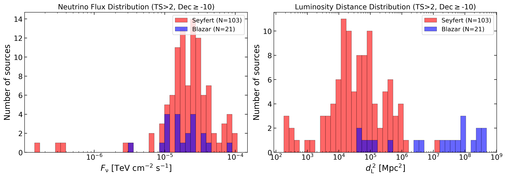
图注：Left: Distribution of neutrino fluxes for sources with TS$>2$. The fluxes are confined to a narrow range spanning only a factor of $\sim$5. Right: Distribution of the square of luminosity distances for the AGN sample, spanning $\sim$7 orders of magnitude. Because luminosity scales as $L \propto D_L^2 F$, the large $D_L^2$ range causes the luminosity to be dominated by distance rather than intrinsic flux.
对应解读：对应“建议重点查看的图表”第1、3项，以及关键结果中关于 TS 筛选后 (F_\
u) 窄范围、\(D_L^2\) 主导光度动态范围的核心机制说明。
入选理由：这是解释伪相关机制最直接的诊断图：左图显示入选源中微子通量只跨越约5倍，右图显示 luminosity distance squared 跨越约7个数量级，正好支撑日报强调的共同距离因子主导 (L_\
\(u=4\\pi\) \(D_L^2F_\\)
u) 的论点。相比单纯相关图，它更能说明为什么相关会出现。
来源与置信度：\(arxiv_source\)；high；\(arxiv_source\) / manuscript.tex:figure[4]
Fig03
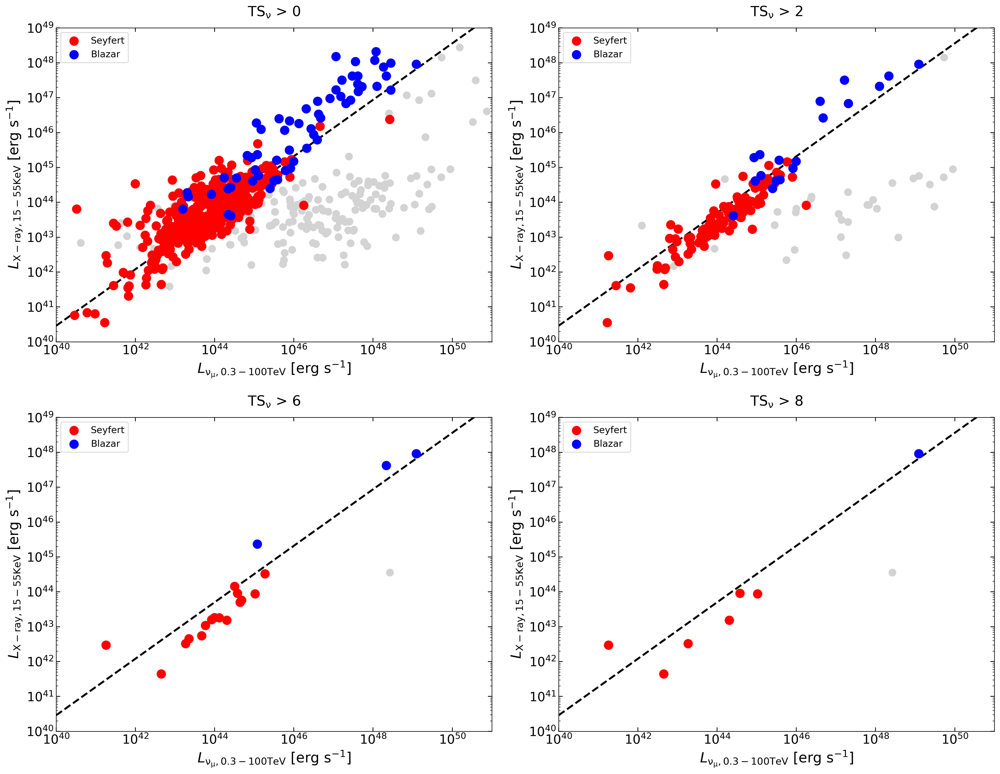
图注：One example of $L_\nu$--$L_X$ relation from simulated sample. Four panels correspond to different TS cuts. Despite the absence of real sources at the random sky positions, the simulated data reproduces the same apparent linear correlation as the real data.
对应解读：对应“建议重点查看的图表”第5项和“关键图表逐图导读”图4：随机天空位置的 (L_\
u-\(L_X\)) 对照图。
入选理由：这是全文最关键的反证图之一：随机天空位置没有真实 AGN—中微子物理关联，却在相同 TS cuts 下复现 (L_\
u-\(L_X\)) 线性趋势。它直接检验日报所说的选择效应与共同距离项是否足以制造光度相关。
来源与置信度：\(arxiv_source\)；high；\(arxiv_source\) / manuscript.tex:figure[3]
Fig02
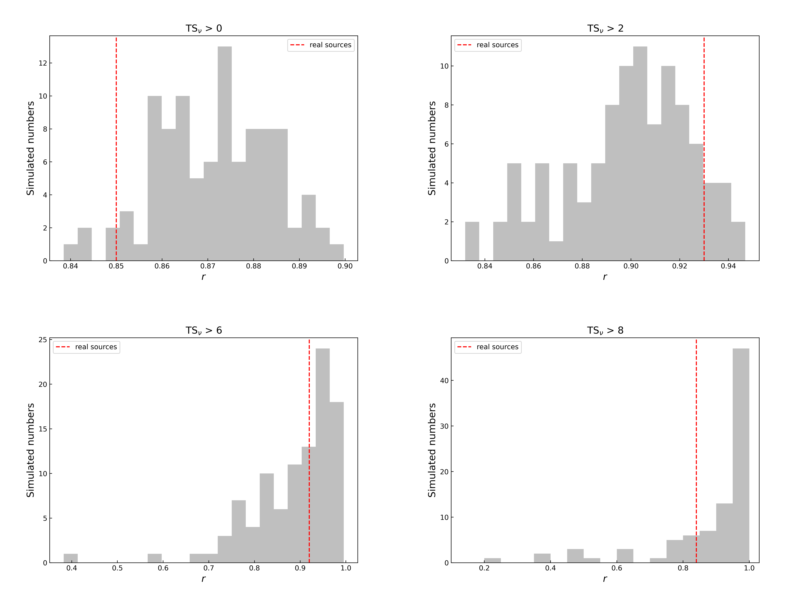
图注：Distribution of the Pearson correlation coefficient $r$ derived from 100 simulated samples, each containing random sky positions with no physical association to the X-ray catalog. In each simulation, the right ascensions are uniformly randomized and constrained to match the original distribution via KS tests, while the declinations and X-ray properties are preserved from the real sample. Four panels correspond to different TS cuts. The dashed red line marks the $r$ value of the real sources. The obtained $r$ is usually high ($r\gtrsim0.8$), despite the absence of real sources at the random positions.
对应解读：对应“建议重点查看的图表”第5、7项，以及“关键图表逐图导读”图6：Monte Carlo 统计汇总图，比较真实样本相关系数与随机样本分布。
入选理由：该图用100个随机样本给出 Pearson \(r\) 的分布，并用红色虚线标出真实源的 \(r\)。如果真实值落在随机分布主体内，就说明观测到的高相关系数并不异常，比单个随机样本示例更具统计说服力。
来源与置信度：\(arxiv_source\)；high；\(arxiv_source\) / manuscript.tex:figure[2]
Fig01
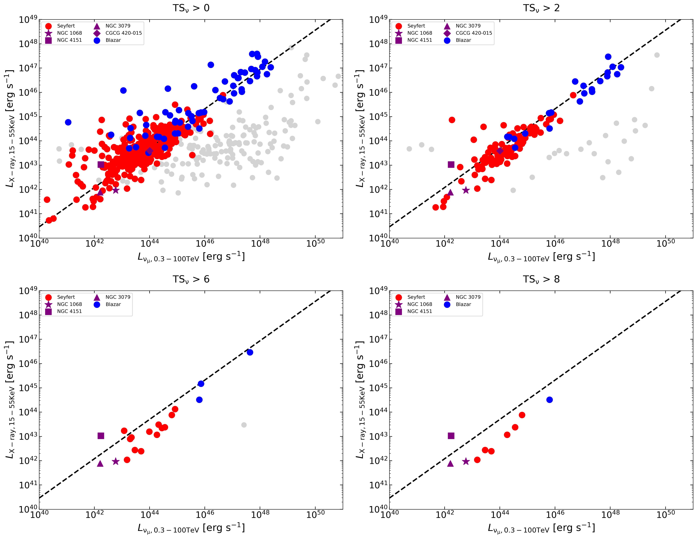
图注：Observed apparent correlation between neutrino luminosity and hard X-ray luminosity ($L_\nu$--$L_X$) for the AGN sample under different TS cuts. {Panels (left to right, top to bottom):} TS $> 0$, TS $> 2$, TS $> 6$, and TS $> 8$. The neutrino luminosity $L_\nu$ is derived from the likelihood analysis of the IceCube 10-yr public muon-track data. The X-ray luminosity is derived using the X-ray flux reported in the Swift AGN catalog. Red and blue markers denote Seyfert galaxies and blazars, respectively; gray points indicate Southern sky sources ($b<-10^\circ$), which are excluded due to the reduced sensitivity of IceCube's track-like data in the Southern hemisphere. As the TS threshold increases, the number of sources decreases but all panels show a pronounced correlation.
对应解读：对应“建议重点查看的图表”第4、7项和“关键图表逐图导读”图3：真实 AGN 样本的 (L_\
u-\(L_X\)) 主相关图及不同 TS cut 下的表现。
入选理由：这是论文复现表观 (L_\
u-\(L_X\)) 相关的主图，四个面板展示 TS>0、2、6、8 时相关仍明显，并区分 Seyfert、blazar 与南天源。它是理解后续随机对照和选择效应诊断的基准图。
来源与置信度：\(arxiv_source\)；high；\(arxiv_source\) / manuscript.tex:figure[1]
Fig05
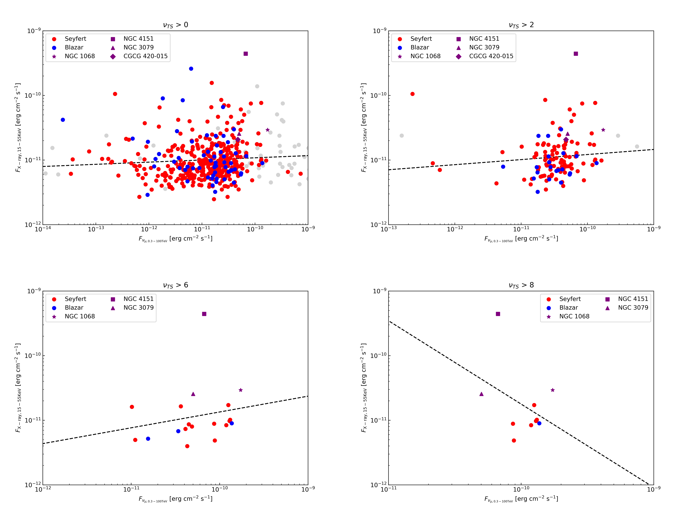
图注：The same as Fig.~\(\ref{fig:obs_correlation},\) but for the $F_\nu-F_X$ correlation.
对应解读：对应“建议重点查看的图表”第6项和“关键图表逐图导读”图5：(F_\
u-\(F_X\)) 通量空间检验。
入选理由：日报强调若光度空间相关而通量空间不稳健，则共同 \(D_L^2\) 项是主要嫌疑。该图正是 Fig01 的通量版本，可用于判断真实物理量 (F_\
u) 与 \(F_X\) 是否仍存在显著相关。
来源与置信度：\(arxiv_source\)；high；\(arxiv_source\) / manuscript.tex:figure[5]
Fig06

图注：The same as Fig.~\(\ref{fig:sim_r_P_L},\) but for the $r_F$ distribution. The distribution width broadens with the TS threshold, primarily due to the reduced sample size. Stricter cuts retain fewer sources, leading to larger statistical fluctuations in the correlation coefficient.
对应解读：对应“建议重点查看的图表”第6、7项，以及模型拟合段落中关于通量相关系数和 TS 阈值依赖性的诊断。
入选理由：该图给出随机样本中 \(r_F\) 的分布，并展示 TS threshold 提高后样本量减少导致分布变宽。它补充 Fig05，说明通量相关检验的统计波动和 TS cut 依赖性，但相较 Fig02/Fig03 对核心光度伪相关的反证作用稍弱。
来源与置信度：\(arxiv_source\)；high；\(arxiv_source\) / manuscript.tex:figure[6]
强相关工作
这篇工作直接对应一类近期声称 AGN X 射线光度与中微子光度相关的研究，特别是使用 Swift/BAT AGN 样本与 IceCube 公开数据进行点源或 stacking 分析的论文。它与这些工作的关系不是简单重复，而是把焦点放在 selection effect 和 luminosity-distance coupling 上。建议检索关键词："AGN neutrino X-ray luminosity correlation", "Swift BAT IceCube Seyfert neutrino", "AGN corona neutrino IceCube", "luminosity luminosity correlation distance bias"。
基础理论方面，应把它放在 AGN 中微子产生模型的大背景下读，包括 blazar 喷流中的 \(p\gamma\) 或 \(pp\) 过程、Seyfert 热冕中的 hadronic 加速、以及 AGN 对 IceCube 弥散中微子背景贡献的限制。相关检索关键词包括："TXS 0506+056 IceCube", "AGN corona high-energy neutrinos", "Murase AGN corona neutrinos", "IceCube point source likelihood"。
相反观点或张力主要来自两边：一边是多信使个例或 stacking hints 支持某些 AGN 子族可能产生中微子；另一边是 population limits 和非探测结果限制 blazar 或特定 AGN 类别的总贡献。本文提醒读者，即便存在真实个例，也不能把低显著性统计样本中的光度相关作为强证据。未来如果 KM3NeT/IceCube-Gen2 发现高显著性 AGN 中微子源，并在通量空间或时间相关上与 X 射线活动同步，那将是比当前 luminosity-luminosity 关系更强的证据。
相似工作：
- https://arxiv.org/abs/2605.13588
- https://arxiv.org/search/astro-ph?query=AGN+neutrino+X-ray+luminosity+correlation&searchtype=all
基础理论 / 方法工作：
- https://arxiv.org/abs/1807.08794
- https://arxiv.org/abs/1807.08816
- https://arxiv.org/abs/1411.4385
- https://arxiv.org/abs/1905.03792
相反观点 / 张力线索：
- https://arxiv.org/abs/1611.03874
- https://arxiv.org/abs/1901.10806
- https://arxiv.org/search/astro-ph?query=IceCube+AGN+corona+neutrino+constraints&searchtype=all
5. Guitar Nebula: extreme accelerator in extreme environment
- 来源：arXiv / astro-ph.HE
- 链接：https://arxiv.org/abs/2605.13697v1
- 作者：Igor Nikolaevich Nikonorov, Maxim Vladimirovich Barkov, Maxim Lyutikov
- 评分：novelty 7/10，importance 8/10，relevance 8/10，final 8.70/10
- 推荐理由：PWN bow-shock study arguing the Guitar Nebula is an extreme particle accelerator requiring near-maximal pulsar potential and unusual ISM/magnetic conditions; relevant to compact objects and cosmic-ray acceleration.
中文题目：吉他星云：极端环境中的极端粒子加速器
做了什么：这篇文章重新审视弓形激波脉冲星风星云 Guitar Nebula 和中心脉冲星 PSR J2225+6535，重点解释两个异常：一是沿脉冲星运动轨迹附近延伸的 X 射线“kinetic jet”要求电子/正电子被加速到接近中子星可提供的最大电势能；二是其异常明亮的 Hα 弓形激波和 X 射线辐射同时要求脉冲星正穿过一个致密、低电离度且磁场很强的星际介质区域。作者估算认为，加速效率需达到 η_acc ≳ 3/4，局部磁场约为 100 μG，远高于普通弥散星际介质。论文提出一个物理图像：Guitar Nebula 可能正在穿过一个古老超新星遗迹处于 pressure-driven snowplow 阶段时形成的狭窄致密壳层。
为什么重要：Guitar Nebula 重要不只是因为形态漂亮，而是它把三个通常分开研究的问题压在同一个系统里：相对论脉冲星风中的极限粒子加速、逃逸粒子在外部磁场中的输运，以及中子星高速穿越不均匀星际介质时的辐射诊断。如果论文的解释成立，Guitar Nebula 就是少数能直接逼近脉冲星开放磁层最大电势的天体加速器之一，同时也是用脉冲星弓形激波探测古老超新星遗迹壳层结构的案例。
理论 / 观测 / 仪器方法价值：对理论而言，这篇工作把 X 射线喷流的同步辐射冷却、粒子最大能量和脉冲星电势预算联系起来，给出一个很硬的能量约束。对观测而言，它说明 Hα 亮度、弓形激波尺度和 X 射线谱不能孤立解释，必须同时反推中性氢密度、电离度、外部磁场和脉冲星风逃逸效率。对方法而言，它展示了弓形激波 PWN 可作为星际介质小尺度高密度结构的探针，尤其适合寻找传统射电/光学巡天中不易识别的老年 SNR 壳层。
为什么应该关注：如果你关心宇宙线起源、脉冲星风磁化、TeV–PeV 电子加速或星际介质多相结构，这篇文章值得看。它的核心结论很挑衅：Guitar Nebula 不是普通弓形激波 PWN 的放大版，而可能是一个同时处在极端加速和极端环境中的系统。即使最终壳层假说需要更多观测验证，文中给出的能量预算和环境约束也为后续 Chandra、Hα 光谱、偏振和低频射电观测提供了清晰的检验目标。
展开详细解读：文章讲解、背景、理论、重点章节、图表与相关工作
文章详细讲解
科学问题：Guitar Nebula 是高速脉冲星 PSR J2225+6535 驱动的弓形激波脉冲星风星云。它有两个长期难点：Hα 弓形激波非常亮，说明中性氢参与的激发/电荷交换过程很强；同时还有一条与经典流体尾迹不同的 X 射线长结构，常被称为 kinetic jet，通常解释为从 PWN 逃逸的高能粒子沿外部磁场传播并发出同步辐射。问题在于，普通星际介质密度、磁场和脉冲星加速能力能否同时解释这些现象？
作者怎么做：论文采用数量级估算和物理一致性约束，而不是大规模数值模拟。作者从脉冲星自转能损率、开放场线电势、弓形激波停滞半径、Hα 表面亮度、X 射线同步辐射特征频率与冷却时间出发，反推出粒子能量、加速效率、局部中性气体密度、电离度以及外部磁场强度。特别关键的是，若 X 射线由逃逸电子/正电子同步辐射产生，其能量必须接近中子星可提供的最大电势能，对加速效率给出 η_acc ≳ 3/4 的强约束。
关键结果：第一，Guitar Nebula 被归入“极端加速器”一类：逃逸粒子的能量接近脉冲星电势极限，不只是普通 PWN 中较温和的 GeV–TeV 加速。第二，异常明亮的 Hα 需要中心脉冲星穿过一个致密且低电离度的区域，而不是典型温暖电离介质。第三，若要维持明亮 X 射线 kinetic jet，同时避免粒子冷却过快或辐射过弱，局部磁场需要达到约 100 μG。这比普通银河系弥散 ISM 的几 μG 高很多，但在压缩壳层、老年超新星遗迹或局部磁场增强结构中并非不可想象。
局限和下一步：论文的解释依赖若干环境参数，例如距离、空间速度、三维几何、粒子注入谱、磁场方向、局部电离度和密度结构。这些量并非都可由现有数据直接锁定，存在退化。壳层假说也需要独立证据，例如大尺度 Hα/HI/CO 结构、低频射电壳层、法拉第旋转增强、X 射线背景结构或吸收变化。下一步最有价值的是高分辨率 Hα 光谱测量、深 Chandra 谱图、宽频射电偏振和周围 HI/尘埃三维结构重建。
背景知识
研究对象是 Guitar Nebula，一类典型的弓形激波脉冲星风星云。高速中子星以超声速穿过星际介质时，其相对论脉冲星风被外部来流压缩，在前方形成弓形终止激波和接触间断面。若周围介质含有足够中性氢，激波区会产生明亮 Hα 辐射，因此 Hα 形态可直接追踪脉冲星运动、外部密度和中性组分。
Guitar Nebula 的历史吸引力在于其形态和多波段矛盾。光学 Hα 结构呈现类似“吉他”的连续泡状形态，说明脉冲星过去穿过了非均匀介质；X 射线中则存在一条很长、相对狭窄、方向不完全等同于流体尾迹的结构。这类结构在若干高速脉冲星中也出现过，常被解释为高能粒子从弓形激波头部泄漏后，沿星际磁场运动形成的 kinetic jet，而非传统意义上由准直喷流发动机发射的 MHD jet。
为什么现在值得重新看：高能天体物理正在重新关注“极限加速器”的能量预算，即粒子是否能接近中央引擎的最大电势或 Hillas 类限制。对脉冲星而言，开放磁层电势是非常自然的上限；若某个 PWN 的 X 射线同步辐射要求粒子接近这个上限，就会直接挑战风区耗散、磁重联、终止激波加速和逃逸机制模型。同时，Gaia、HI 巡天、Hα 巡天、Chandra 长时间基线和三维尘埃图也让人们更有能力把局部 ISM 结构纳入解释。
该领域常见误区包括：把所有长条 X 射线结构都称为“喷流”并默认其由脉冲星自转轴准直；只用典型 ISM 磁场几 μG 估算同步辐射而忽略局部压缩；把 Hα 亮度简单等同于总气体密度而忽略中性分数和前激波电离；以及把弓形激波尺度解释为单一密度变化而忽略速度、距离和三维投影的不确定性。
基础理论 / 方法脉络
核心物理图像从压力平衡开始。高速脉冲星的风压在迎风方向被 ISM 动压平衡，形成停滞点。停滞半径取决于脉冲星自转能损率、空间速度和外部密度。这个尺度通常可从 Hα 弓形激波头部形态估计，是把光学图像转化为环境密度的重要入口。
X 射线 kinetic jet 的基本解释是：一部分高能电子/正电子从 PWN 逃逸进入外部介质，沿局部星际磁场回旋并发出同步辐射。同步辐射的特征频率随粒子洛伦兹因子平方和磁场强度增加而升高；冷却时间则随粒子能量和磁场平方增加而缩短。因此，给定 X 射线能段、喷流长度和脉冲星速度/粒子输运速度，可以同时限制粒子能量与磁场。
这类工作最重要的退化是 B–γ 退化：同样的 X 射线频率可以由较低磁场中的更高能粒子或较高磁场中的较低能粒子产生。但冷却长度、亮度和脉冲星电势上限会打破一部分退化。若 B 太低，所需粒子能量可能超过脉冲星最大电势；若 B 太高，冷却过快，难以解释长尺度结构，除非粒子持续注入或输运速度足够快。
Hα 观测则涉及中性氢进入激波后被碰撞激发、电离或电荷交换。Hα 亮度不仅取决于总密度，还取决于中性分数、激波速度、前体电离、视线投影和消光。对 Guitar Nebula 这类高速脉冲星，Hα 强度异常高通常意味着局部介质既足够致密又没有被完全电离，这对解释其所处环境非常关键。
公式与推导
弓形激波头部的第一性约束来自压力平衡。若脉冲星自转能损率为 \(\dot E\)，风近似各向同性，外部介质质量密度为 \(\rho\)，脉冲星速度为 \(v_*\)，停滞半径为 \(R_0\)，则
左边是相对论风在距离 \(R_0\) 处的动量通量，右边是外部来流的动压。由此可得 \(\rho=\dot E/(4\pi c R_0^2 v_*^2)\)，再结合 \(\rho\simeq \mu m_p n\) 估算数密度 \(n\)。
脉冲星能给带电粒子的最大电势通常写成开放磁层电势的数量级：
其中 \(e\) 是元电荷，\(\Phi_{\rm open}\) 是开放场线区可用电势。若粒子最终能量为 \(E_e=\gamma m_e c^2\)，可定义加速效率
论文的核心结论之一是 X 射线 kinetic jet 所需 \(E_e\) 使得 \(\eta_{\rm acc}\gtrsim 3/4\)，即粒子能量已接近中子星电势预算上限。
同步辐射特征频率把粒子能量和磁场联系起来：
其中 \(B\) 是辐射区磁场，\(\gamma\) 是电子/正电子洛伦兹因子。观测到 keV X 射线意味着 \(h\nu_{\rm syn}\sim {\rm keV}\)，因此 \(\gamma\propto (\nu/B)^{1/2}\)。这就是 B–γ 退化的来源。
同步辐射冷却时间为
其中 \(\sigma_T\) 是 Thomson 截面。将上一式代入可得 \(t_{\rm syn}\propto B^{-3/2}\nu^{-1/2}\)。因此较强磁场虽能降低所需粒子能量，却会显著缩短 X 射线寿命，这会影响喷流可见长度。
若逃逸粒子以有效输运速度 \(v_{\rm tr}\) 沿磁场传播，X 射线结构长度可粗略写作
观测到的 \(L_X\)、X 射线能段 \(\nu\) 和亮度共同限制 \(B\)、\(\gamma\) 与 \(v_{\rm tr}\)。论文正是利用这些关系指出：普通几 μG 磁场难以同时满足能量上限和亮度要求，而 \(B\sim100\,\mu{\rm G}\) 的压缩环境更自然。
Hα 表面亮度可用数量级表达为
其中 \(n_{\rm H^0}\) 是中性氢密度，\(n_e\) 是电子密度，\(q_{{\rm H}\alpha}\) 是与温度和激波速度有关的激发/电荷交换有效系数，\(dl\) 是视线积分元。异常高的 \(I_{{\rm H}\alpha}\) 指向高密度且低电离度环境，而不是单纯提高总密度即可。
模型拟合 / 应用方法
这篇文章更像物理约束建模，而非全参数贝叶斯拟合论文。其隐含参数包括距离、脉冲星横向速度、弓形激波停滞半径、外部密度、中性分数、磁场强度、逃逸粒子能谱、粒子最高能量、X 射线辐射效率和输运速度。实际拟合时可把 Hα 图像约束 \(R_0\) 与亮度，把 X 射线谱约束 \(B\gamma^2\) 与谱指数，把 X 射线长度约束 \(v_{\rm tr}t_{\rm syn}\)，再用脉冲星 \(\dot E\) 给出最大电势上限。
若做严格参数估计，似然函数应至少包含三部分：Hα 形态/表面亮度似然、X 射线计数谱和空间分布似然、以及外部环境先验。Hα 部分需要处理消光、滤光片通带、背景减除和非均匀介质；X 射线部分需要用 Poisson/C-stat 而不是简单高斯近似，尤其在低计数长结构中；环境先验可来自 HI、尘埃、Hα 巡天、射电连续谱和法拉第旋转测量。
主要退化关系包括：距离和速度共同影响物理尺度与动压估计；密度和中性分数共同影响 Hα 亮度；磁场和粒子能量共同影响 X 射线特征频率；输运速度和冷却时间共同影响喷流长度；粒子注入功率和磁场共同影响 X 射线总亮度。残差应重点看弓形激波头部是否系统偏离 Wilkin 型解析形状、X 射线光子指数是否沿喷流变软、以及 Hα 亮区是否与预期密度增强位置一致。
重点章节 / 结果段落怎么读
-
引言和对象概述：应先抓住 Guitar Nebula 的两个异常观测事实，即强 Hα 弓形激波和长 X 射线 kinetic jet。读者要注意作者并非单独解释某个波段，而是试图建立多波段一致的环境和加速图像。
-
粒子加速与 X 射线结构部分：这是论文的物理核心。重点看作者如何从 X 射线同步辐射频率、冷却时间和喷流长度反推粒子能量，并进一步与 PSR J2225+6535 的开放磁层电势比较。η_acc ≳ 3/4 的结论应在这里理解。
-
Hα 辐射和外部介质约束部分：这一部分说明为什么普通 ISM 不能自然解释 Hα 亮度。读者应关注密度、中性分数、电离状态和弓形激波尺度之间的关系，尤其是作者如何排除或弱化“只需普通密度波动”的解释。
-
高磁场和老年 SNR 壳层假说：这里是论文最具推测性但也最有启发的部分。作者把高密度、低电离度和 \(B\sim100\,\mu{\rm G}\) 联系到古老超新星遗迹 pressure-driven snowplow 阶段的狭窄致密壳层。读者应区分哪些是由观测强制要求的，哪些是为统一解释而提出的环境假说。
-
讨论和预测：应寻找可检验预言，例如周围是否存在大尺度壳层痕迹、磁场是否有偏振或法拉第旋转证据、X 射线谱是否沿结构出现同步冷却软化、Hα 速度结构是否显示被压缩壳层。
建议重点查看的图表
-
多波段形态图：检查 Hα 弓形结构、脉冲星位置、自行方向和 X 射线长结构的相对几何。关键是 X 射线结构是否更像沿外部磁场延伸，而不是简单拖尾。
-
弓形激波尺度测量图或示意图：重点看停滞半径 \(R_0\)、弓形头部开角和与解析弓形模型的偏离。这个量直接进入外部密度估算。
-
X 射线谱或光子指数图：检查谱指数、吸收柱密度、通量误差和是否存在沿喷流的谱软化。同步冷却解释需要谱和长度相互一致。
-
粒子最大能量/加速效率约束图：若论文给出参数空间图，应看 \(B\)、\(E_e\)、\(\eta_{\rm acc}\) 的允许区域，特别是 η_acc 接近 1 的区域是否依赖极端假设。
-
Hα 亮度与环境密度/中性分数约束图：检查普通 ISM 参数是否被排除，以及致密低电离区域的参数范围有多窄。
-
环境或壳层示意图：如果有 SNR snowplow 壳层模型图，应看脉冲星轨迹与壳层厚度、密度增强、磁场压缩方向是否几何一致。
关键图表逐图导读
图 1：建议首先看多波段总览图。横纵轴通常是天球坐标或相对角距离，Hα 用灰度/红色显示，X 射线用蓝色等高线或伪彩色显示，脉冲星位置和自行方向用箭头标出。主要结论是 Hα 弓形激波和 X 射线长结构不一定同轴，因此 X 射线结构更可能反映逃逸粒子沿外部磁场传播。读图陷阱是投影效应：二维夹角不等于三维磁场与速度夹角。
图 2：若有弓形激波头部拟合图，应关注坐标轴上的角尺度以及模型线相对 Hα 边界的位置。数据点或轮廓给出实际 Hα 前缘，模型线可能是解析 bow shock 形状。主要结论是停滞半径可用于估算外部动压。陷阱是 Hα 发射峰未必精确等于接触间断面或终止激波位置，需考虑发射区厚度。
图 3：X 射线谱图通常以能量为横轴、计数率或 unfolded flux 为纵轴，模型线为吸收幂律或同步辐射近似。应看低能端吸收、背景扣除、光子指数误差和残差。主要结论是 X 射线辐射可由非热同步辐射解释。陷阱是低计数条件下 unfolded spectrum 容易造成视觉误导，真正应看 C-stat 残差和置信区间。
图 4：参数空间图若以磁场 \(B\) 为横轴、电子能量或加速效率为纵轴，通常会有 X 射线频率、冷却长度和最大电势限制线。应看允许区域是否被 \(\eta_{\rm acc}<1\) 截断，以及 \(B\sim100\,\mu{\rm G}\) 是否同时满足亮度和寿命。陷阱是不同输运速度假设会移动冷却长度线。
图 5：Hα 环境约束图可能以密度为横轴、中性分数或电离度为纵轴，标出可产生观测亮度的区域。主要结论是需要致密、低电离介质。陷阱是消光修正、距离和激波几何都会影响亮度归一化。
图 6：若有 SNR 壳层或 pressure-driven snowplow 示意图，应把它当作物理解释框架而非直接观测证据。看壳层厚度、压缩比、磁场放大和脉冲星穿越路径是否能同时解释 Hα 和 X 射线。陷阱是不要把示意图中的壳层边界理解为已被观测成像确认。
论文原图 / 可嵌入图片
Fig06
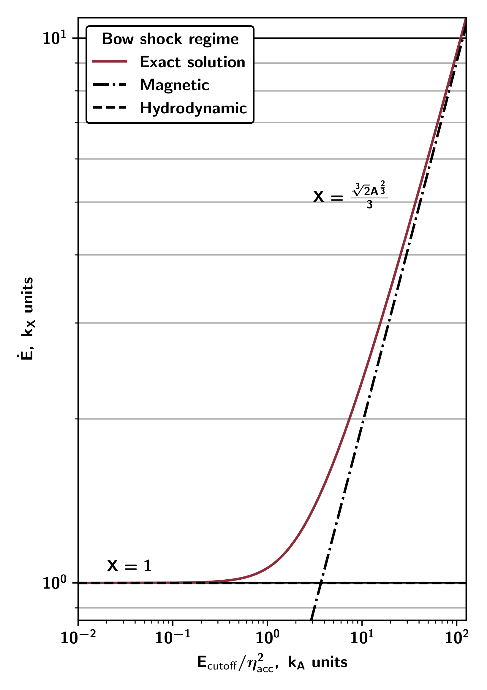
图注：Dependency between dimensionless cutoff energy of kinetic jet spectrum ($A$) and spin-down power ($X$) of the pulsar. The plot represents different regimes of bow shock and follows the solution of equation~(\(\ref{eq:Espindown_Emax_dimensionless})\)
对应解读：对应“建议重点查看的图表”第4项和“图4：粒子最大能量/加速效率约束图”，以及模型拟合段落中关于脉冲星最大电势、X射线 cutoff energy 与 η_acc 的约束。
入选理由：这张图直接展示 kinetic jet 光谱截断能量与脉冲星自转能损率之间的关系，并区分不同弓形激波物理区间，是支撑论文核心结论“η_acc 接近最大电势、Guitar 属于极端加速器”的最关键图。相比形态或示意图，它最直接检验极端加速是否由参数空间本身强迫得到。
来源与置信度：\(arxiv_source\)；high；\(arxiv_source\) / main.tex:figure[6]
Fig01
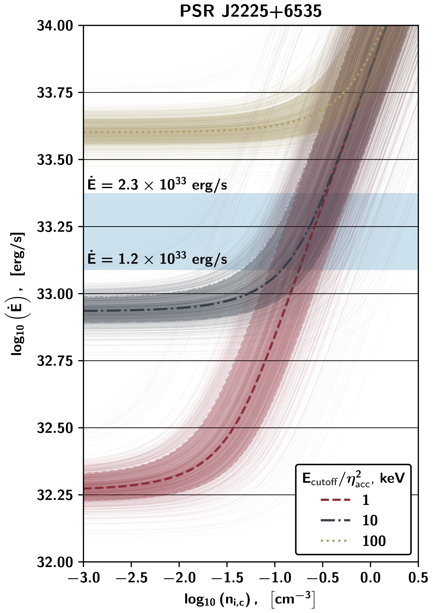
图注：Dependence between ion number density on the contact discontinuity ($n_{i,c}$) and spin-down power ($\dot{E}$) for Guitar PWN. We plot 16-th, 50-th and 84-th percentiles by dashed, dash-dotted and dotted lines for the values 1, 10 and 100~keV of the filament spectrum cutoff energy divided by acceleration efficiency squared. For each value we fill the area between 16-th and 84-th percentile with color and plot 1000 random samples from the distribution of the solutions. Here $\mu_\text{ISM} = 1.26$, affects only $n_{i,c}$ normalization. Horizontal lines around the shaded area are the minimal ($\dot{E}_\text{min}$) and the maximal ($\dot{E}_\text{max}$) estimates for the spin-down power of PSR J2225+6535 (see Section~\(\ref{subsec:spindown_estimate}).\)
对应解读：对应“建议重点查看的图表”第4项、第5项，以及模型拟合段落中外部密度、spin-down power、X射线 cutoff energy 与加速效率之间的联合约束。
入选理由：图中把接触间断面处离子数密度与自转能损率联系起来，并给出不同 cutoff energy/η_acc² 情况下的百分位范围和随机样本，能同时支撑“致密环境”和“高加速效率”两条主线。它比单纯参数角图更接近论文的物理结论。
来源与置信度：\(arxiv_source\)；high；\(arxiv_source\) / main.tex:figure[1]
Fig02
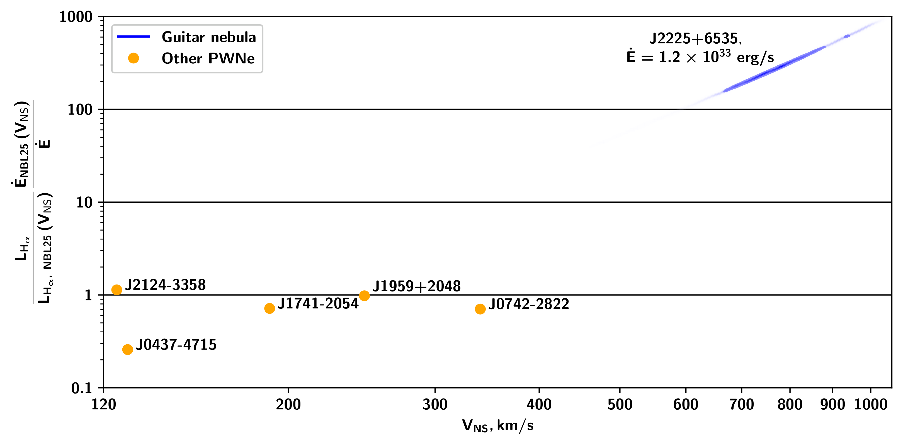
图注：\(\Ha{}\) luminosity of PWNe normalized to NBL25 model. For {\(\it\) Guitar} we show the density of samples from the distribution of parameters. The contour corresponds to 0.393 confidence level ($1 \sigma$ in case of 2D Gaussian). PWNe are referred to by the pulsar name
对应解读：对应“建议重点查看的图表”第5项和“图5：Hα 亮度与环境密度/中性分数约束图”。
入选理由：这张图比较不同 PWN 的 Hα 亮度并突出 Guitar 的参数样本分布，是验证其 Hα 异常明亮、普通 ISM 参数难以解释的核心证据之一。虽然不是密度—中性分数平面，但它直接服务于日报中关于致密低电离介质需求的解读。
来源与置信度：\(arxiv_source\)；high；\(arxiv_source\) / main.tex:figure[2]
Fig05
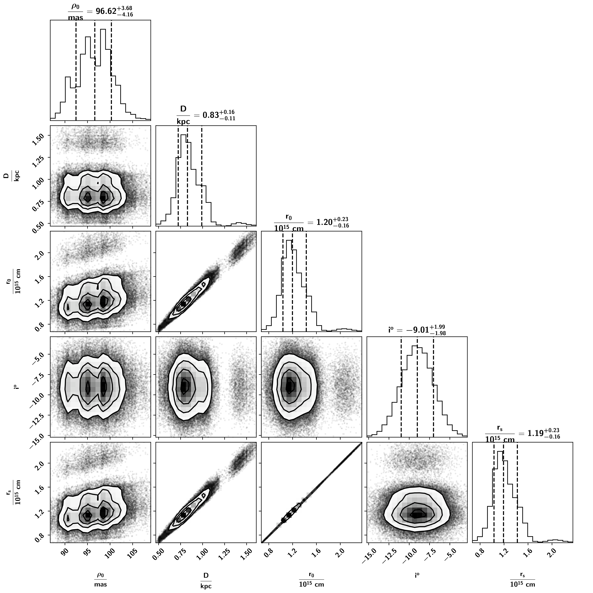
图注：Corner plot of Guitar bow shock standoff distance and the quantities used for the reconstruction of it. Namely, from left to right: angular projected stand-off distance ($\rho_0$), distance to the pulsar ($D$), projected stand-off distance ($r_0$), inclination of Guitar nebula ($i$) and the actual reconstructed stand-off distance ($r_s$)
对应解读：对应“建议重点查看的图表”第2项和“图2：弓形激波头部拟合图”，以及模型拟合段落中用停滞半径约束外部动压和密度的部分。
入选理由：图中给出 Guitar 弓形激波 stand-off distance 的重建角图，包括角停滞距离、距离、投影尺度、倾角和真实停滞半径。停滞半径是从形态观测进入外部密度估计的关键中间量，因此科学价值很高。
来源与置信度：\(arxiv_source\)；high；\(arxiv_source\) / main.tex:figure[5]
Fig03
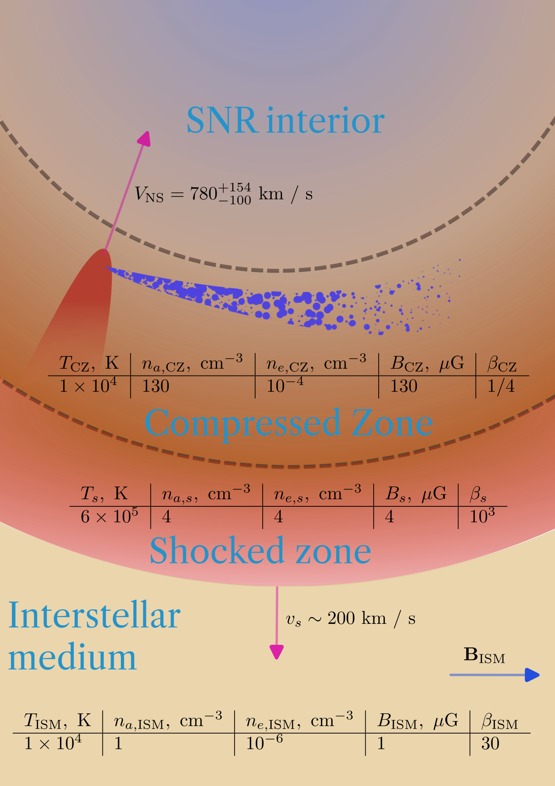
图注：Cartoon of the proposed scenario: a pulsar moves through an old SNR shell. The parameters are temperature ($T$), number density of nuclei ($n_a$), number density of electrons ($n_e$), magnetic field strength ($B$), plasma beta parameter ($\beta$)
对应解读：对应“建议重点查看的图表”第6项和“图6：SNR 壳层或 pressure-driven snowplow 示意图”。
入选理由：这张图是作者提出的老年 SNR 壳层穿越场景示意，标出温度、密度、电子数密度、磁场和等离子体 beta 等参数，能帮助读者理解为什么局部可同时具有高密度、低电离度和约 100 μG 磁场。不过它是解释框架而非直接观测证据，排序低于定量约束图。
来源与置信度：\(arxiv_source\)；high；\(arxiv_source\) / main.tex:figure[3]
Fig04

图注：Corner plot of pulsar velocity and the quantities used for the reconstruction of it. Namely, from left to right: distance to the pulsar ($D$), transversal velocity of the pulsar with respect to the Sun projected to tangent vectors of galactic coordinate system ($D \mu_l \cos{b}$ and $D \mu_b$) and its value ($V_{\textbf{NS}, \odot}^\textbf{transversal}$), velocity of pulsar's local ISM projected to tangent vectors of galactic coordinate system ($V_{\textbf{ISM}, \odot, l}$ and $V_{\textbf{ISM}, \odot, b}$), inclination of {\(\it\) Guitar} nebula ($i$) and the velocity of the pulsar with respect to its local ISM ($V_\text{NS, ISM}$)
对应解读：对应模型拟合段落中关于距离、横向速度、ISM 相对运动、倾角和脉冲星相对局部 ISM 速度的退化关系。
入选理由：该角图展示速度重建及其依赖量，是把弓形激波动压、物理尺度和外部密度联系起来所需的基础参数约束。它不直接对应日报中最优先的多波段形态或谱图，但对理解距离—速度—倾角退化很有帮助。
来源与置信度：\(arxiv_source\)；high；\(arxiv_source\) / main.tex:figure[4]
强相关工作
这篇工作与弓形激波 PWN 和所谓 misaligned X-ray outflows 的研究直接相关。相似对象包括 PSR B2224+65/Guitar、Lighthouse Nebula、Geminga 周围 X 射线尾迹以及若干高速脉冲星的非热长结构。检索关键词可用 “bow-shock pulsar wind nebula H alpha”, “Guitar Nebula kinetic jet”, “misaligned X-ray outflow pulsar”, “PSR B2224+65 X-ray jet”。这些研究共同的问题是：长 X 射线结构究竟是磁层喷流、PWN 尾迹不稳定性，还是逃逸粒子沿 ISM 磁场传播。
理论背景与脉冲星风最大电势、终止激波加速和磁重联有关。传统 PWN 理论强调自转能通过相对论风注入，然后在终止激波或下游湍流中加速粒子；但若 Guitar Nebula 中粒子能量接近开放场线电势上限，模型就必须解释为什么有如此高比例的电势可转化为少数逃逸粒子的能量。检索关键词包括 “pulsar open field line potential”, “pulsar wind nebula particle acceleration limit”, “synchrotron burnoff pulsar wind”。
相反或竞争解释主要集中在 X 射线结构性质和环境假说上。一类观点可能强调喷流由脉冲星自转轴或磁轴控制，而不是外部磁场；另一类可能用局部 ISM 云团、湍流磁场或前体电离解释 Hα，而不需要古老 SNR 壳层。对于壳层假说，应检索 “old supernova remnant pressure driven snowplow dense shell”, “interstellar magnetic field compression supernova remnant shell”, “HI shell around PSR B2224+65”。
相似工作：
- https://arxiv.org/abs/2605.13697
- https://ui.adsabs.harvard.edu/search/q=%22Guitar%20Nebula%22%20%22X-ray%22
- https://ui.adsabs.harvard.edu/search/q=%22bow-shock%20pulsar%20wind%20nebula%22%20%22H%20alpha%22
- https://ui.adsabs.harvard.edu/search/q=%22misaligned%20X-ray%20outflow%22%20pulsar
基础理论 / 方法工作：
- https://ui.adsabs.harvard.edu/search/q=%22pulsar%20wind%20nebula%22%20termination%20shock%20particle%20acceleration
- https://ui.adsabs.harvard.edu/search/q=%22open%20field%20line%20potential%22%20pulsar
- https://ui.adsabs.harvard.edu/search/q=%22pressure-driven%20snowplow%22%20supernova%20remnant
相反观点 / 张力线索：
- https://ui.adsabs.harvard.edu/search/q=%22Guitar%20Nebula%22%20%22jet%22%20%22magnetic%20field%22
- https://ui.adsabs.harvard.edu/search/q=%22pulsar%22%20%22X-ray%20jet%22%20%22proper%20motion%22
- https://ui.adsabs.harvard.edu/search/q=%22bow%20shock%22%20pulsar%20%22neutral%20fraction%22%20%22H%20alpha%22
6. Magnetar-powered long gamma-ray bursts and connection to superluminous supernovae and fast radio bursts
- 来源：arXiv / astro-ph.HE
- 链接：https://arxiv.org/abs/2605.13440v1
- 作者：Yu-Qi Zhou, Shuang-Xi Yi, Yu-Peng Yang, Yan-Kun Qu, Ning Gai, Yan-Ke Tang, Fa-Yin Wang
- 评分：novelty 7/10，importance 7/10，relevance 9/10，final 8.70/10
- 推荐理由：Large Swift long-GRB sample interpreted in a magnetar-central-engine framework, with inferred birth parameters and links to SLSNe/FRBs; directly relevant to GRB high-energy astrophysics.
中文题目：磁星驱动的长伽马暴及其与超亮超新星、快速射电暴的联系
做了什么：这篇文章用 Swift/XRT 的 X 射线余辉光变曲线，筛选出 169 个具有“磁星平台”特征的长伽马暴：早期 X 射线平台之后接近按 t^{-2} 衰减。作者用 MCMC 拟合平台亮度 L0 和断裂时间 tb，对没有实测红移的事件用 Amati 关系估计伪红移，再由磁偶极自旋下降模型反推出新生磁星的极向表面磁场 Bp 和初始自转周期 P0。得到的典型范围是 Bp≈0.39–23.08×10^15 G、P0≈0.95–13.79 ms。样本仍满足 Dainotti 关系，即 L0 与 tb 近似反相关，斜率接近 -1；同时发现 Bp 与 P0 存在显著正相关，约 Bp∝P0^{0.83±0.09}。与超亮超新星和快速射电暴常用的磁星参数相比，GRB 磁星的磁场系统性更强，提示这些瞬变源虽然都可用磁星引擎描述，但其前身星、塌缩环境或能量释放通道可能不同。
为什么重要：长伽马暴中心引擎到底是吸积黑洞还是新生毫秒磁星，一直是高能瞬变研究中的核心问题。X 射线平台加 t^{-2} 衰减是磁星自旋下降模型最直接的观测候选特征之一，但以往样本定义、红移缺失处理和参数反演常常不统一。这篇工作的重要性在于，它把“平台—陡降”这一经验特征转化为一个较大的、模型一致的磁星候选 GRB 样本，并把 GRB 磁星与 SLSN、FRB 磁星放在同一参数平面比较。若其统计关系稳健，就能约束新生中子星的出生自转、磁场放大机制和喷流形成条件。
理论 / 观测 / 仪器方法价值：对理论而言，文章给出了 Bp–P0 相关、Dainotti 关系和 GRB/SLSN/FRB 磁星参数差异，可用于检验磁偶极自旋下降、能量注入效率和塌缩后磁场放大模型。对观测而言，它提供了 169 个具有统一光变拟合和参数估计的候选样本，方便后续与 Swift、SVOM、Einstein Probe、THESEUS 等瞬变监测数据交叉验证。对方法而言，文章示范了如何把 X 射线平台的可观测量 L0、tb 映射到物理参数 Bp、P0，并显式处理缺失红移带来的伪红移问题。
为什么应该关注：如果你关心 GRB 中心引擎，这篇文章给的是一个可直接使用的统计样本和参数标尺：哪些 LGRB 更像磁星、磁场和初始周期大致落在哪里、与 SLSN/FRB 的“磁星家族”是否真的同源。如果你做多信使或快速暂现源，这类结果会影响对喷流能量预算、超新星伴随物、残余中子星命运和后续射电活动的判断。即使你对磁星模型持保留态度，文章中的样本选择、红移估计和 L0–tb 关系也提供了检验选择效应和模型退化的清晰入口。
展开详细解读：文章讲解、背景、理论、重点章节、图表与相关工作
文章详细讲解
科学问题：长伽马暴的中心引擎可能是黑洞吸积系统，也可能是新生、快速旋转、强磁场的中子星。后一种“毫秒磁星”模型的一个经典预言是，磁星在早期以近似恒定的自旋下降功率向外流或激波注入能量，从而在 X 射线余辉中形成平台；当特征自旋下降时间过去后，注入功率应近似按 t^{-2} 衰减。本文聚焦的不是所有 LGRB，而是具有这种平台后接 t^{-2} 衰减形态的事件，试图建立一个更接近物理模型定义的磁星候选样本。
作者怎么做：作者从 Swift/XRT X 射线余辉中构建了 169 个长暴样本，对每条光变曲线进行 MCMC 拟合，得到平台亮度 L0 和平台结束或断裂时间 tb。对于缺少光谱红移的 GRB，作者使用 Amati 关系估计伪红移，从而把观测流量转换为静止系光度和时间。随后在标准磁偶极自旋下降框架下，由 L0 和 tb 反推出磁星极向表面磁场 Bp 与初始自转周期 P0，并对已知红移子样本和全样本分别进行统计检验。
关键结果：磁星参数落在 Bp∈[0.39,23.08]×10^15 G 和 P0∈[0.95,13.79] ms。已知红移子样本与全样本都满足 Dainotti 关系，即平台光度与平台持续时间近似反相关，斜率接近 -1，这与平台阶段近似固定能量尺度或近似恒定能量注入图像相符。更有意思的是，作者报告了 Bp 与 P0 的正相关：全样本 Bp∝P0^{0.83±0.09}，已知红移子样本 Bp∝P0^{0.80±0.16}，两者在误差内一致。这说明相关性不完全由伪红移样本驱动，但仍需警惕共同变量和选择效应。
与其他瞬变源的比较是文章的第二个重点。作者把 GRB 磁星参数与用于解释超亮超新星和快速射电暴的磁星参数进行对比，发现 GRB 候选磁星的磁场强度系统性高约一个数量级。这并不简单等价于“GRB、SLSN、FRB 都来自同一种磁星”，反而提示不同瞬变源所需的磁星出生环境、包层质量、喷流穿透条件、磁场拓扑或能量耦合效率可能不同。
局限和下一步：这类工作最大的限制来自模型选择和样本选择。平台加 t^{-2} 衰减并不是磁星的唯一可能信号，也可能被外激波能量注入、观测角度效应、喷流结构或黑洞吸积过程部分模拟。伪红移依赖 Amati 关系，会把 GRB prompt emission 的经验散布传递到 L0、tb、Bp、P0。下一步需要用有实测红移、宽波段余辉、伴随超新星和 late-time radio/X-ray 上限的样本独立验证，并在层级贝叶斯框架中同时拟合选择函数、红移不确定性和模型内禀散布。
背景知识
研究对象是长伽马暴的 X 射线余辉平台。Swift 卫星之后，人们发现许多 GRB 的早期 X 射线余辉不是单纯的幂律衰减，而包含陡降、平台、正常衰减、喷流断裂、耀发等多个阶段。平台段尤其重要，因为它暗示中心引擎可能在 prompt emission 之后仍持续向外流注入能量，而不仅仅是一个瞬时爆炸后的外激波冷却过程。
历史上，LGRB 通常与大质量恒星塌缩相关，其中心引擎有两类主流图像：一类是黑洞加吸积盘，能量来自吸积和 Blandford–Znajek 机制；另一类是毫秒磁星，能量来自新生中子星的巨大转动能。毫秒磁星若初始周期接近 1 ms，可储存约 10^52 erg 的转动能，量级上足以解释许多 GRB 余辉平台，甚至部分超亮超新星。但若总能量显著超过磁星转动能上限，或需要长时间高度准直的相对论喷流，黑洞模型往往更有竞争力。
Dainotti 关系是 GRB X 射线平台研究中的重要经验关系，指平台结束时刻的光度与平台持续时间存在反相关。它有时被用于标准化 GRB 或约束宇宙学，也被解释为中心引擎能量注入的结果。但这个关系容易受探测阈值、红移不完备、光变分解方法和样本筛选影响。因此，一个只选取具有磁星预期衰减形态的样本，有助于减少物理混合，但也可能引入新的形态选择偏差。
为什么现在值得重新看：Swift 积累了足够多的 XRT 光变曲线，使得可以从个例解释转向统计样本；同时 FRB、SLSN 和引力波相关瞬变研究都在使用“磁星”作为中心引擎语言。把 GRB 磁星参数与 SLSN/FRB 参数放到一起比较，有助于判断磁星是否是统一引擎，还是一个在不同环境下表现非常不同的宽泛类别。
常见误区有两个。第一，看到 X 射线平台并不自动等于确认磁星；平台只是能量注入的现象学特征，黑洞吸积、外激波微物理演化或观测角度也可能产生类似形态。第二，把从 L0、tb 反演出的 Bp、P0 当作直接测量也不严谨；这些量依赖辐射效率、各向异性校正、红移、模型假设和平台成分分离，最好理解为在特定模型下的有效参数。
基础理论 / 方法脉络
核心物理图像是磁偶极自旋下降。新生中子星若具有强磁场 Bp 和角速度 Ω0，会通过电磁偶极辐射或磁化风损失转动能。早期 t≪τ 时，自旋下降光度近似恒定，能够在余辉中表现为平台；晚期 t≫τ 时，功率按约 t^{-2} 下降。这正是本文样本筛选所依据的“平台 + t^{-2} 衰减”形态。
关键量包括平台光度 L0、断裂时间 tb、极向磁场 Bp、初始周期 P0、中子星半径 R、转动惯量 I 和辐射效率 η。观测上，Swift/XRT 给出的是某个能段中的流量随时间变化，必须通过红移、K 校正和光谱模型转换为静止系光度；时间也要除以 1+z 转为源静止系。若红移未知，使用 Amati 关系估计伪红移会引入额外散布。
模型假设通常包括：平台主要由中心引擎注入控制；注入功率与磁偶极自旋下降功率成比例；磁星没有在平台结束前坍缩为黑洞，或者坍缩时间与平台结束时间可等效处理；喷流准直和辐射效率可以用统一或近似统一参数吸收。若这些假设不成立，反演出的 Bp 和 P0 就会偏移。例如较低辐射效率会要求更高真实注入功率，进而改变 P0；未知喷流开角会影响各向同性等效光度的物理解释。
常见退化包括 Bp–P0 退化、效率–能量退化、红移–光度退化和平台分解退化。因为 L0 和 tb 都由同一条光变曲线拟合而来，且又共同进入 Bp、P0 的反演公式，所以 Bp 与 P0 的相关性需要特别检查是否部分来自代数耦合或选择边界，而不完全是出生物理相关。
公式与推导
磁星模型从转动能开始。若中子星转动惯量为 I、角速度为 \(\Omega_0=2\pi/P_0\)，初始转动能为
这里 \(P_0\) 是初始自转周期，\(I\) 是转动惯量。周期越短，可用转动能越大；毫秒周期对应约 \(10^{52}\) erg 量级。
在真空磁偶极近似下，自旋下降光度可写为
其中 \(L_{\rm sd,0}\) 是初始自旋下降功率，\(\tau\) 是特征自旋下降时间。平台阶段 \(t\ll\tau\) 时 \(L_{\rm sd}\approx L_{\rm sd,0}\)，晚期 \(t\gg\tau\) 时自然给出 \(t^{-2}\) 衰减。
初始自旋下降功率与磁场和周期的标度为
其中 \(B_p\) 是极向表面磁场，\(R\) 是中子星半径，\(c\) 是光速。磁场越强、周期越短，自旋能释放越快、平台越亮。
特征自旋下降时间由能量除以功率给出：
这说明 \(\tau\) 随 \(P_0^2\) 增大、随 \(B_p^2\) 减小。强磁场会更快抽取转动能，因此平台持续时间更短。
观测中平台光度通常取为辐射效率 \(\eta\) 乘以自旋下降功率，平台断裂时间近似对应 \(\tau\)：
因此 \(L_0\) 与 \(t_b\) 的乘积近似追踪可见能量 \(\eta E_{\rm rot}\)。若样本的有效转动能分布较窄，就自然得到 \(L_0\propto t_b^{-1}\)，即 Dainotti 关系的斜率接近 -1。
由 \(L_0\) 和 \(t_b\) 反解物理参数时，标度关系可概括为
这里省略了数值归一化常数，重点是说明可观测量如何进入反演。\(L_0\)、\(t_b\)、\(\eta\)、\(I\)、\(R\) 的不确定性都会传递到 \(P_0\) 和 \(B_p\)，因此统计相关性必须结合误差传播和选择函数理解。
模型拟合 / 应用方法
本文的核心拟合对象是 Swift/XRT 的 X 射线余辉光变曲线。作者用 MCMC 拟合平台段及其后续衰减，提取平台光度 L0 和断裂时间 tb。实际操作中，通常会采用分段幂律、平滑折断幂律或磁星自旋下降函数来描述光变。MCMC 的价值在于可以给出参数后验分布，而不只是最优值；这对 L0、tb 强相关的情况尤其重要。
参数估计的关键链条是：观测流量和观测时间先转换成静止系光度和时间；再用平台模型得到 L0、tb；最后通过磁偶极公式反演 Bp、P0。若红移已知，主要不确定性来自光变采样、光谱指数、K 校正、平台边界和拟合模型；若红移未知，Amati 关系给出的伪红移会额外引入 prompt emission 能谱参数和经验关系内禀散布。
似然函数通常可以理解为在对数流量或对数光度空间比较模型曲线与观测点，残差由测光误差、光变内禀散布和可能的系统误差共同决定。读这类结果时不能只看最佳拟合曲线，还要看断裂时间附近是否有足够数据点约束、平台是否被 X-ray flares 污染、后段 t^{-2} 是否真的显著优于普通外激波衰减，以及不同模型选择是否改变 L0、tb。
主要退化关系包括 L0–tb 的协方差、红移–光度退化、辐射效率–初始周期退化，以及 Bp–P0 的代数耦合。因为 Bp 和 P0 都由 L0、tb 组合得到，样本中观测阈值会排除低亮短平台或高亮长平台等区域，从而可能制造或增强相关性。稳健做法是分别检查已知红移子样本、全样本、不同红移区间、不同光变质量等级和不同平台定义下的拟合斜率是否一致。
实际应用上，这套拟合可用于快速判断新 GRB 是否属于磁星候选、估计中心引擎能量预算、与伴随超新星亮度或后期射电观测比较，也可作为人口合成模型的输入。但参数应被视为“模型依赖的出生参数估计”，而不是直接测得的中子星磁场和周期。
重点章节 / 结果段落怎么读
-
样本与数据选择：应重点看作者如何定义“canonical magnetar plateau signature”，即平台后接近 t^{-2} 衰减的判据。这里决定了样本的物理纯度和选择偏差。读者要特别注意是否排除了强耀发、数据稀疏或断裂时间不明确的事件，以及长暴分类是否统一。
-
光变曲线拟合方法：这一部分应检查作者采用的光变函数、MCMC 先验、误差模型和收敛诊断。L0 和 tb 是后续所有物理结论的基础，因此断裂时间附近的数据覆盖、平台斜率是否接近零、后平台衰减是否接近 -2 都很关键。
-
红移处理与伪红移估计：对于无红移事件，作者用 Amati 关系估计伪红移。读者应关注已知红移子样本与全样本结果是否一致，因为这能判断伪红移是否主导统计结论。还应留意 Amati 关系的散布是否被传递到最终参数误差。
-
磁星参数反演：这里要看作者采用的中子星半径、转动惯量、辐射效率和各向同性假设。Bp、P0 的范围以及它们的后验误差不是纯观测量，而是依赖这些固定参数或先验选择。
-
统计相关与跨源类比较：重点是 Dainotti 关系的斜率、散布、显著性，以及 Bp–P0 相关在不同子样本中是否保持。与 SLSN、FRB 的比较应关注参数是否来自同一套模型和归一化，否则数量级差异可能部分来自建模习惯。
-
讨论与局限：应查看作者如何处理黑洞中心引擎替代解释、样本截断效应、红移不完备和辐射效率不确定性。若这些内容只作为定性讨论出现，后续工作就需要更严格的层级统计建模。
建议重点查看的图表
-
X 射线光变拟合示例图：检查平台段是否真的平坦、断裂后是否接近 t^{-2}、断裂时间附近是否有足够观测点。若只有少数点定义平台，参数可信度会明显下降。
-
L0–tb 或 Dainotti 关系图：看横轴是否为静止系 tb，纵轴是否为平台光度；重点检查拟合斜率是否接近 -1、置信带宽度、已知红移子样本与伪红移样本是否系统偏离。
-
Bp–P0 相关图：重点看数据点分布是否跨越足够动态范围，拟合斜率是否受少数极端点驱动，误差条是否沿相关方向拉长，以及已知红移事件是否覆盖全样本趋势。
-
Bp 与 P0 的边缘分布或直方图：检查参数是否堆在模型允许边界附近，例如 P0 是否接近中子星 break-up 周期，Bp 是否出现不合理高值尾部。
-
GRB、SLSN、FRB 磁星参数比较图：看不同源类的参数是否使用相同定义和效率假设。若 SLSN/FRB 参数来自不同文献模型，比较应理解为定性趋势而非精确统计检验。
-
红移或伪红移分布图：检查无红移样本是否集中在高红移或低亮区域。红移分布差异会直接影响 L0–tb 和 Bp–P0 相关。
-
拟合残差或后验角图：若论文提供，应检查 L0 与 tb 的协方差、MCMC 收敛和多峰后验。没有这些诊断时，需要对相关性显著性保持谨慎。
关键图表逐图导读
图 1：建议首先看样本光变曲线或若干代表性 XRT 光变拟合图。横轴通常是观测者系或静止系时间，纵轴是 X 射线流量/光度。数据点为 Swift/XRT 观测，模型线为平台加后续衰减。关键是看平台是否由连续数据支持，而不是由两个稀疏点连接；还要看后段斜率是否确实接近 -2。读图陷阱是 X-ray flares 可能抬高局部流量，导致平台亮度或断裂时间偏移。
图 2：L0–tb 关系图通常横轴为平台断裂时间 tb，纵轴为平台光度 L0，二者多用对数坐标。模型线或拟合线应显示负相关，本文报告斜率接近 -1。读者应比较已知红移子样本和全样本的点云是否重合；如果伪红移点系统偏高或偏低，Dainotti 斜率可能受红移估计影响。置信带的宽度比斜率的最佳值更能反映这条关系作为物理约束的强弱。
图 3：Bp–P0 图是本文最值得细看的结果之一。横轴通常为初始周期 P0，纵轴为极向磁场 Bp，均为对数坐标。拟合线给出 Bp∝P0^{约0.8} 的正相关。直觉上，强磁场会缩短自旋下降时间，而长周期降低转动能；二者的相关可能反映出生条件，也可能反映由 L0、tb 反演公式和样本截断共同造成的投影效应。读图时应看误差条方向、极端点权重以及已知红移子样本是否单独支持趋势。
图 4：参数分布图或直方图应展示 Bp 和 P0 的总体范围。P0 接近 1 ms 的事件需要特别关注，因为这接近新生中子星的质量脱落或 break-up 极限，模型对中子星状态方程会敏感。Bp 高于 10^16 G 的尾部也要谨慎，因为这可能意味着极端磁场、效率假设偏差或光变拟合误差。
图 5：GRB 与 SLSN、FRB 磁星参数比较图通常会把不同源类放在同一 Bp–P0 平面。本文结论是 GRB 磁星磁场比 SLSN/FRB 磁星强约一个数量级。读图陷阱是不同源类参数往往来自不同波段、不同辐射效率、不同喷流或包层模型；因此点云分离提示真实物理差异，但不能自动排除建模系统误差。
图 6：若有红移、Eiso 或 Ep 相关图，应检查 Amati 伪红移的影响。横轴可能是 E_{p,z}，纵轴是 Eiso，或展示伪红移与已知红移样本的分布。关键问题是无红移事件是否把样本动态范围显著拉大；如果是，所有全样本相关都应优先与已知红移子样本结果对照。
论文原图 / 可嵌入图片
Fig12
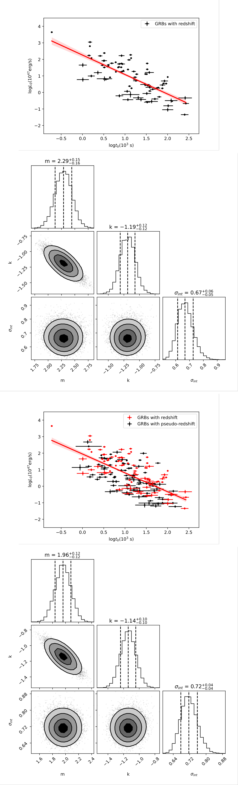
图注：The Dainotti correlation. The best-fit curve is represented by the red solid line, with its corresponding \(1\sigma\) confidence interval indicated by the shaded region. Top: Dainotti correlation (Left) and its corner plot (Right) for GRBs with redshifts. Bottom: Dainotti correlation (Left) and its corner plot (Right) for all GRBs.
对应解读：对应“建议重点查看的图表”第2项、关键图表逐图导读图2，以及模型拟合段落中关于 L0–tb 协方差和 Dainotti 关系的讨论。
入选理由：这是本文核心统计结论之一，直接展示平台光度 L0 与断裂时间 tb 的 Dainotti 相关，并区分有实测红移样本与全样本；图中还包含最佳拟合线、1σ置信带和 corner plot，可同时检查斜率是否接近 -1、置信区间宽度以及拟合参数退化，比单纯文字结果更能支撑日报对相关性稳健性的解读。
来源与置信度：\(arxiv_source\)；high；\(arxiv_source\) / main.tex:figure[12]
Fig11
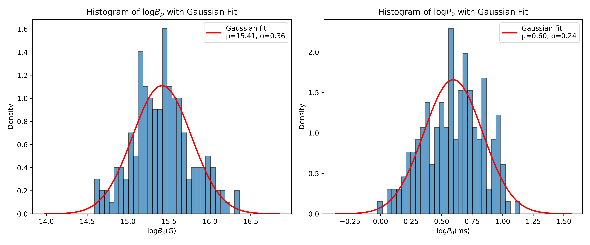
图注：Distribution histograms of the surface magnetic field ($\log B_p$) and the initial rotation period ($\log P_0$) for magnetars, with Gaussian fits, under the assumption of an X-ray conversion efficiency of 0.5.
对应解读：对应“建议重点查看的图表”第4项，以及关键图表逐图导读图4中关于 Bp 和 P0 边缘分布、break-up 周期附近事件和高磁场尾部的讨论。
入选理由：该图给出磁星表面磁场 log Bp 与初始周期 log P0 的分布直方图及高斯拟合，能直接检查参数是否集中在模型边界附近、P0 是否接近约 1 ms 极限、Bp 是否存在高于 10^16 G 的尾部，是理解本文磁星参数范围和模型依赖性的关键图。
来源与置信度：\(arxiv_source\)；high；\(arxiv_source\) / main.tex:figure[11]
Fig01

图注：The X-ray light curves of 139 GRBs, excluding the 30 from \(\cite{2022ApJ...924...97W}\) (GRB 090205 may be a SGRB \(\citep{2010A&A...522A..20D}).\) The first 51 are GRBs with redshifts. The remaining 88 are GRBs with pseudo-redshifts.
对应解读：对应“建议重点查看的图表”第1项、关键图表逐图导读图1，以及模型拟合段落中关于 Swift/XRT 光变曲线 MCMC 拟合、平台段和 t^{-2} 衰减判定的讨论。
入选理由：该图是 X 射线光变曲线集合的起始页，展示样本中 GRB 的 XRT 光变形态，是检验平台段是否由足够观测点支持、断裂后是否接近 t^{-2}、以及是否可能受 flare 污染的基础证据。虽然 Fig02–Fig10 是同一光变图的续页，但其候选说明仅为 continued，缺少可区分的额外诊断信息，因此优先嵌入 Fig01 作为该组光变拟合图的代表。
来源与置信度：\(arxiv_source\)；high；\(arxiv_source\) / main.tex:figure[1]
强相关工作
这篇工作与 Swift 时代的 GRB X 射线平台研究直接相连。Dainotti 关系、余辉能量注入和磁星中心引擎模型构成了它的基础背景。建议检索关键词包括 “GRB X-ray plateau Dainotti relation”, “magnetar central engine long gamma-ray bursts”, “Swift XRT canonical afterglow plateau”, “millisecond magnetar spin-down GRB”。这些文献会帮助判断 L0–tb 关系究竟是物理能量尺度、观测选择效应，还是两者叠加。
它也与超亮超新星和快速射电暴的磁星模型有关。SLSN 中的磁星通常通过把自旋能热化到超新星抛射物来解释宽而亮的光变；FRB 中的磁星则常被用作长期活动源或爆发触发源。这些模型反演出的 Bp、P0 与 GRB 的 Bp、P0 并非完全同质，因为观测通道、能量耦合效率和环境密度不同。建议检索 “magnetar powered superluminous supernovae”, “FRB magnetar engine”, “birth properties of magnetars transients”。
相反或有张力的方向包括黑洞吸积中心引擎、结构化喷流/离轴观测、外激波微物理演化，以及对 Amati 关系和 Dainotti 关系选择效应的批评。若要严肃使用本文样本，最好同时阅读关于 GRB 标准化关系 selection bias、Efron-Petrosian 方法、GRB plateau physical origin 的论文。检索关键词可用 “GRB plateau selection effects”, “black hole central engine X-ray plateau”, “Amati relation pseudo redshift bias”。
相似工作：
- https://arxiv.org/abs/2605.13440
基础理论 / 方法工作：
- https://ui.adsabs.harvard.edu/abs/1998Natur.395..672K/abstract
- https://ui.adsabs.harvard.edu/abs/2006Natur.442.1014Z/abstract
- https://ui.adsabs.harvard.edu/abs/2010ApJ...722L.215D/abstract
- https://ui.adsabs.harvard.edu/abs/2002A%26A...390...81A/abstract
相反观点 / 张力线索：
- https://ui.adsabs.harvard.edu/abs/2011MNRAS.413.2031R/abstract
- https://ui.adsabs.harvard.edu/abs/2013ApJ...776...95B/abstract
7. On the Numerical Stability of the Diffusion Coefficient in Microscopic Simulations
- 来源：arXiv / astro-ph.HE
- 链接：https://arxiv.org/abs/2605.12637v1
- 作者：Vladimir Yurovsky, Ilya Kudryashov
- 评分：novelty 7/10，importance 7/10，relevance 9/10，final 8.70/10
- 推荐理由：Addresses numerical stability limits in microscopic simulations of Galactic cosmic-ray diffusion coefficients; directly relevant to cosmic-ray transport methodology, though the abstract suggests a focused technical contribution.
中文题目：微观数值模拟中宇宙线扩散系数的数值稳定性
做了什么：这篇文章讨论一个看似技术、但会直接影响银河宇宙线传播结论的问题：用带电粒子在湍动磁场中的微观轨道积分来计算扩散系数时，数值误差本身会在多大程度上污染结果。作者考察了扩散系数数值计算的稳定性边界，指出现代常用的直接微观模拟并不总是处在“数值误差可忽略”的区间内；尤其是速度误差比位置误差对扩散系数的影响更强。它的重要性在于，许多宇宙线传播模型需要输入平行/垂直扩散系数，如果这些系数来自轨道模拟而未做足够的数值稳定性检验，理论解释和参数约束可能带有隐藏系统误差。
为什么重要：银河宇宙线扩散系数连接了微观粒子-磁湍流相互作用和宏观传播模型，是解释宇宙线能谱、各向异性、次级/初级丰度比以及伽马射线弥散辐射的关键量。过去很多工作默认只要步长足够小、粒子数足够多，轨道模拟得到的扩散系数就可靠；这篇文章提醒读者，误差并不只是统计噪声，轨道积分中的速度误差会以更直接的方式进入速度自相关函数或均方位移斜率，从而改变扩散系数估计。
理论 / 观测 / 仪器方法价值：这项工作的价值主要在方法论层面：它为用微观模拟计算宇宙线扩散系数提供了数值稳定性警示，强调需要分别检查位置和速度误差、时间步长、积分器阶数、长时间能量守恒、磁场插值误差以及扩散平台区间选择。对理论工作者，它有助于判断某些扩散系数标度是否是物理效应还是数值效应；对观测解释者，它提醒不要把模拟给出的扩散参数当作无系统误差的先验；对代码开发和仪器数据建模，它说明误差预算必须从轨道积分阶段开始。
为什么应该关注：如果你关心宇宙线在银河磁场中的传播、TeV–PeV 宇宙线各向异性、超新星遗迹附近的粒子逃逸，或用伽马射线/中微子数据反推扩散环境，那么扩散系数的可靠性就是基础。本文的核心信息是：微观模拟不是黑箱，速度变量的数值精度可能比位置变量更决定最终扩散系数。关注它可以避免把数值误差误读为新的湍流物理、非线性散射效应或异常扩散行为。
展开详细解读：文章讲解、背景、理论、重点章节、图表与相关工作
文章详细讲解
科学问题：银河宇宙线扩散系数通常可以从两条路线获得：一是用准线性理论、非线性导引中心理论等解析或半解析模型推导；二是直接在给定湍动磁场中积分大量带电粒子的洛伦兹运动，再从均方位移或速度自相关函数估计扩散系数。后者越来越常见，因为它可以处理复杂湍流谱、有限拉莫尔半径、非线性轨道效应和各向异性磁场。但问题在于，扩散系数是长时间统计量，微小的轨道误差可能在许多回旋周期和散射时间后累积，最终改变扩散平台或自相关函数尾部。
作者怎么做：根据摘要，本文专门研究这种微观数值模拟中扩散系数计算的数值极限，目标不是提出新的宇宙线传播模型，而是诊断现有直接计算方法的稳定性。作者区分了空间误差和速度误差对扩散系数结果的影响，考察在现代计算精度和常用积分设置下，误差是否已足够小。虽然仅凭摘要无法确认他们使用的具体磁场模型、积分器和误差注入方式，但论文的中心设计应是比较不同数值精度、不同误差源以及由这些误差导致的扩散系数偏移。
关键结果：文章最直接的结论是，现代计算已经会受到数值误差影响，而且速度误差对最终扩散系数的影响比空间误差更大。这个结论有明确物理含义：扩散系数既可由位移增长率估计，也可由速度自相关函数积分估计；速度误差会直接改变瞬时运动方向、俯仰角、回旋相位和散射率，因此更容易投射到扩散张量。相比之下，位置误差在某些情况下只是相位空间坐标中的积分后果，其影响可能更间接。
局限和下一步：由于摘要没有给出具体数值阈值、适用湍流模型和代码实现，读者需要在正文中重点核查这些结论是否依赖某类积分器、某种磁场插值、某个能量范围或特定随机场实现。下一步应包括：在 Boris、Runge–Kutta、辛积分器等不同算法间交叉检验；建立可复现实验基准；给出扩散系数误差随时间步长、粒子刚度、湍流幅度和采样数的标度；并把数值误差作为传播模型参数不确定性的一部分传递到观测拟合。
背景知识
研究对象是银河宇宙线在磁场湍流中的扩散。带电粒子在大尺度有序磁场和小尺度随机磁场中运动，轨道经历回旋、俯仰角散射、场线随机游走和跨场扩散。宏观上，很多传播模型不直接追踪单个粒子，而是使用扩散-对流-再加速方程，其中扩散系数 \(D\) 或扩散张量 \(D_{ij}\) 是关键输入。如何从微观磁湍流性质可靠地得到 \(D\)，一直是宇宙线理论中的核心问题。
历史上，准线性理论给出了粒子与磁湍流共振散射的基本图像，例如当 \(k_\parallel v\mu \sim \Omega\) 时粒子与对应尺度的 Alfvénic 扰动相互作用。但真实星际湍流是强各向异性、间歇性、非线性的，且粒子跨场扩散受到磁力线随机游走、非线性退相干和有限拉莫尔半径影响。因此，从解析公式直接得到可用于观测拟合的扩散系数并不容易。直接微观模拟由此成为常用工具：构造随机磁场，积分粒子轨道，统计扩散。
为什么现在值得重新看：现代算力让研究者可以模拟更多粒子、更长时间、更复杂湍流谱，也更容易把微观模拟结果用于解释具体观测，例如局部宇宙线各向异性、TeV halo、超新星遗迹附近扩散抑制等。但算力增加不自动等于数值可靠。长时间轨道积分中，时间步长、浮点精度、插值误差和随机场离散化都可能成为主导系统误差。本文正是在这个背景下提醒：需要重新审视扩散系数计算中的数值稳定性。
该领域常见误区包括：第一，把粒子数不足导致的统计误差与积分器导致的系统误差混为一谈；第二，只检查均方位移是否随时间线性增长，却不检查能量、磁矩、速度模长和速度自相关函数；第三，把不同随机种子之间的散布当作完整误差条，而忽略时间步长收敛性；第四，看到异常扩散或非标准刚度标度时，过早归因于新物理，而没有排除数值伪影。
基础理论 / 方法脉络
核心物理图像是带电粒子在磁场中的洛伦兹运动。若忽略电场和能量损失，粒子速度大小应保持不变，运动方程主要改变速度方向。均匀磁场中轨道是螺旋线，回旋频率为 \(\Omega=qB/\gamma mc\)，拉莫尔半径为 \(r_L=v_\perp/\Omega\)。加入湍动磁场后，粒子的俯仰角 \(\mu=v_\parallel/v\) 随时间随机变化，长时间极限下沿磁场和垂直磁场方向的位移可以表现为扩散。
扩散系数通常有两种等价估计方式。在均方位移方法中，若某方向 \(i\) 上达到正常扩散，\(\langle [\Delta x_i(t)]^2\rangle\) 应近似正比于 \(2D_i t\)。在 Green–Kubo 形式中，扩散系数等于速度自相关函数的时间积分。后者说明为什么速度误差特别危险：如果数值积分不能准确保持速度方向和速度模长，速度自相关函数的短时振荡、退相关时间和长时尾部都会被污染。
模型假设通常包括：磁场统计平稳、随机场满足给定功率谱、粒子之间无相互作用、背景场不随时间演化，且模拟时间足够长以进入扩散极限。实际数据分析中还要处理有限粒子数、有限盒子大小、周期边界、离散 Fourier 模式数量、湍流动态范围不足等问题。这些问题会与数值积分误差耦合：例如拉莫尔半径接近网格尺度或最小湍流尺度时，插值误差和物理散射很难区分。
观测方法上，微观模拟给出的 \(D(E)\)、\(D_\parallel(E)\)、\(D_\perp(E)\) 通常不会直接观测，而是输入 GALPROP、DRAGON、PICARD 或定制传播模型，再与 B/C、\(^{10}\mathrm{Be}/^9\mathrm{Be}\)、质子和电子谱、弥散伽马射线、局部各向异性等比较。因此，一项数值稳定性研究的意义不止是代码精度问题，而是会影响整个从磁湍流到观测解释的推理链。
公式与推导
带电粒子的基本运动方程可写为
这里 \(\mathbf{x}\) 是位置，\(\mathbf{v}\) 是速度，\(\mathbf{p}=\gamma m\mathbf{v}\) 是相对论动量，\(q\) 为电荷，\(\mathbf{B}\) 为总磁场。若无电场，真实连续系统中 \(d(v^2)/dt=0\)，因此速度模长守恒是轨道积分的重要诊断量。
在正常扩散极限下，某一方向的扩散系数由均方位移斜率给出：
其中 \(i\) 可以是平行于平均磁场的方向，也可以是垂直方向；尖括号表示对粒子集合、初始相位和磁场实现取平均。实际模拟中这个极限被有限时间斜率代替，因此是否已经出现稳定线性平台是关键。
等价地，Green–Kubo 公式给出
这里 \(\langle v_i(0)v_i(t)\rangle\) 是速度自相关函数。这个表达式直接解释了本文强调的速度误差：若数值误差使 \(v_i(t)\to v_i(t)+\delta v_i(t)\)，则相关函数中会出现 \(\langle v_i(0)\delta v_i(t)\rangle\) 和 \(\langle \delta v_i(0)\delta v_i(t)\rangle\) 项，积分后可形成系统偏差。
若用有限时间估计扩散系数，可写作
其中 \(N\) 是模拟粒子数，\(T\) 是积分时间。该估计量同时包含统计误差 \(\propto N^{-1/2}\)、有限时间偏差以及轨道积分误差。增加粒子数只能降低第一项，不能自动消除积分器带来的系统偏差。
误差传播的简化写法为
这里 \(\delta D_i\) 是扩散系数偏差，\(\delta v_i\) 是速度数值误差。若速度误差在相关时间内具有非随机结构，例如由时间步长、磁场插值或非守恒积分器导致，它不会简单平均为零，因此可能比位置误差更显著。
对时间步长收敛性，常见经验模型为
其中 \(p\) 是积分器有效阶数，\(A\) 表示系统误差幅度，\(B N^{-1/2}\) 表示采样噪声，\(C(T)\) 表示尚未达到长时间扩散极限的偏差。稳定性检验的目标是证明 \(A(\Delta t)^p\) 和 \(C(T)\) 相对科学结论足够小，而不仅是误差条看起来很小。
模型拟合 / 应用方法
这篇文章属于数值方法诊断论文，核心“拟合”对象不是天文观测数据，而是扩散系数估计量随数值控制参数的变化。常见做法是对不同时间步长、积分器精度、浮点精度、粒子数、模拟时间和磁场实现得到的 \(\hat{D}\) 做收敛性分析。一个稳健的结果应显示：当 \(\Delta t\) 减小、粒子数增加、积分时间延长时，\(D\) 收敛到同一平台；若结果持续漂移，说明系统误差仍未受控。
参数估计上，可把 \(D^{\rm true}\)、时间步长误差幅度和统计方差一起拟合。例如使用 \(\hat{D}(\Delta t,N,T)=D_0+A(\Delta t)^p+B/N^{1/2}+C(T)\) 的经验模型，或在贝叶斯框架中给 \(D_0\)、\(A\)、\(p\) 设置先验。似然函数可基于不同随机种子的样本方差，但必须注意随机种子散布不等于总误差，因为同一积分器的系统偏差会共同移动所有样本。
系统误差包括速度模长漂移、回旋相位误差、磁场插值误差、随机场功率谱离散化误差、盒子尺寸导致的长波缺失、边界条件、有限动态范围和扩散平台识别错误。本文强调速度误差更重要，意味着拟合残差中应重点检查与速度相关的诊断量：能量守恒、\(v_\parallel/v\) 分布、速度自相关函数、短时回旋频率和长时退相关尾部。如果这些量不收敛，即使均方位移图看起来近似线性也不能完全信任。
退化关系方面，物理参数和数值参数可能混在一起。例如增加湍流幅度会增强散射、缩短相关时间；但较大的时间步长或速度误差也可能造成类似的快速退相关。有限盒子缺少长波模式可能降低大尺度场线随机游走，而数值误差可能人为增加跨场扩散。实际应用中，建议在把微观模拟 \(D(E)\) 输入银河传播模型之前，先给出独立的数值误差预算，并在观测拟合中把它作为理论协方差或超参数。
重点章节 / 结果段落怎么读
数据/样本或数值设置部分：读者应首先看作者使用了什么粒子方程、磁场模型、单位制、随机场实现、积分器、时间步长范围和误差度量。特别要确认速度误差和空间误差是如何定义的：是与高精度参考解比较，还是通过守恒量漂移、人工扰动或不同精度运行之间的差异来估计。
方法部分：重点看扩散系数如何计算。是用均方位移斜率，还是用速度自相关函数积分，或两者都用？平行和垂直扩散是否分开？扩散平台如何判定？如果只在有限时间窗口拟合线性斜率，窗口选择本身可能引入显著偏差。
数值稳定性结果部分：这是全文核心。读者应检查扩散系数随时间步长、误差幅度和积分时间的变化，尤其是速度误差与位置误差的对比。如果论文给出阈值或经验准则，应看它们是否以无量纲量表达，例如每个回旋周期的步数、相对能量误差、\(\delta v/v\) 或 \(\delta x/r_L\)。
讨论部分：应关注作者如何解释速度误差更重要这一结论，以及它是否适用于不同刚度、不同湍流强度和不同磁场几何。好的讨论应说明哪些既有微观模拟结果可能需要重新评估，哪些参数范围仍然可靠。
附录/稳健性检验：如果有附录，建议重点看积分器交叉验证、解析测试问题、随机种子变化、粒子数收敛、能量守恒和速度自相关函数诊断。这些内容往往比主文结论更能判断该方法能否推广到自己的研究问题。
建议重点查看的图表
-
扩散系数随时间的演化图：检查 \(D(t)\) 是否出现稳定平台，而不是在选定时间窗口内偶然近似平坦。注意平行和垂直方向是否同时收敛。
-
时间步长收敛图：横轴通常为 \(\Delta t\) 或每回旋周期步数，纵轴为估计的 \(D\) 或相对误差。关键是看是否有幂律收敛区，以及最小步长处是否仍在漂移。
-
速度误差与位置误差对比图：这是本文最重要的诊断。应看在相同相对误差幅度下，\(\delta v\) 引起的 \(D\) 偏差是否系统大于 \(\delta x\)，以及差异是否超过统计误差。
-
速度自相关函数图：检查短时回旋振荡、退相关时间和长时尾部。速度误差如果重要，往往会在相关函数衰减形态或积分面积中表现出来。
-
能量或速度模长守恒诊断：若无电场，\(|\mathbf{v}|\) 应守恒。应看相对漂移是否随时间累积，以及它与扩散系数偏移是否相关。
-
粒子数/随机种子收敛表：确认误差条是统计散布还是系统收敛误差。若不同种子误差小但不同步长结果差异大，说明主要问题不是采样噪声。
-
残差或相对偏差图：如果作者给出相对于高精度参考解的残差，应检查残差是否有单调趋势、刚度依赖或方向依赖，而不是只看平均偏差。
关键图表逐图导读
图 1：建议将其作为数值实验设置或基准结果图来读。若图中展示粒子轨道、磁场几何或扩散系数随时间变化，横轴很可能是时间或回旋周期数，纵轴可能是均方位移、瞬时扩散系数或归一化扩散系数。重点看系统是否从弹道阶段过渡到扩散阶段；读图陷阱是把早期的非线性增长或有限盒子效应误认为扩散平台。
图 2：若为时间步长收敛图，横轴应关注 \(\Delta t\)、每回旋周期步数或积分精度参数，纵轴关注 \(D\) 的相对误差。模型线若呈幂律下降，可说明积分器误差受控；若误差在小步长处不再下降，可能受浮点误差、磁场插值或随机场离散化限制。不要只看最小误差点，还要看是否存在可解释的收敛趋势。
图 3：这类论文最可能包含速度误差与空间误差的影响对比。横轴可能是人为加入或估计的相对误差幅度，纵轴是扩散系数偏差。应看两组曲线斜率是否不同、置信区间是否重叠、结果是否对平行/垂直扩散一致。读图陷阱是忽略纵轴归一化方式；\(D_\perp\) 往往远小于 \(D_\parallel\)，相同绝对误差会造成更大的相对误差。
图 4：若展示速度自相关函数，横轴是时间延迟，纵轴是 \(\langle v_i(0)v_i(t)\rangle\) 或归一化相关函数。模型线或不同颜色曲线可能对应不同数值精度。关键是看积分面积而不只是曲线峰值；小的长时尾部偏差也可能对 \(D\) 有显著贡献。读图时要警惕对数坐标下噪声尾部被视觉放大的问题。
图 5：若展示守恒量或误差累积，横轴通常为积分时间，纵轴为 \(\delta v/v\)、能量误差或位置误差。应看误差是随机游走式增长、线性漂移还是有界振荡。速度模长若系统漂移，在无电场洛伦兹运动中通常意味着积分器或步长设置有问题。
图 6：若论文有最终建议或参数空间图，可能展示在哪些步长、粒子刚度或湍流强度下扩散系数可信。读者应把该图转化为自己模拟中的无量纲要求，例如 \(\Delta t\Omega\ll 1\)、\(\delta v/v\) 上限、盒子尺度与 \(r_L\) 的比值。不要把某个具体数值阈值无条件外推到完全不同的磁场模型。
论文原图 / 可嵌入图片
（未提供 verified figure；为避免编造图片链接，本节只在能确认官方图片 URL 或成功提取论文原图时嵌入图片。）
强相关工作
这篇工作与大量通过测试粒子模拟计算宇宙线扩散的研究直接相关。相似研究通常关注在合成湍流磁场中测量 \(D_\parallel\) 和 \(D_\perp\)、比较准线性理论与非线性理论、研究不同湍流谱和各向异性对扩散的影响。可检索关键词包括 “cosmic ray diffusion test particle simulations numerical convergence”, “parallel perpendicular diffusion coefficient turbulent magnetic field”, “velocity autocorrelation Green Kubo cosmic rays”。
基础理论方面，它连接到准线性理论、非线性导引中心理论、磁力线随机游走和宇宙线输运方程。相关检索关键词包括 “Jokipii cosmic ray diffusion”, “quasilinear theory pitch angle scattering”, “nonlinear guiding center theory perpendicular diffusion”, “cosmic ray transport equation diffusion tensor”。这些工作提供物理预期，而本文关注的是数值实现能否可靠再现这些预期。
可能存在张力的方向是：一些已有模拟报告的扩散系数刚度标度、跨场扩散增强、异常扩散或局部扩散抑制，可能部分依赖数值设置。本文并不一定否定那些物理结论，但要求重新检查它们是否通过了速度误差、时间步长和自相关函数诊断。检索时可使用 “anomalous diffusion cosmic rays numerical artifacts”, “cosmic ray diffusion coefficient convergence test”, “Boris pusher cosmic ray test particles turbulence”。
相似工作：
- https://arxiv.org/abs/2605.12637
基础理论 / 方法工作：
- https://ui.adsabs.harvard.edu/abs/1966ApJ...146..480J/abstract
- https://ui.adsabs.harvard.edu/abs/2000ApJ...539..273G/abstract
- https://ui.adsabs.harvard.edu/abs/2003ApJ...590L..53M/abstract
相反观点 / 张力线索：
（未提供）
8. Tracking down the broadband polarimetric properties of PG 1553+113
- 来源：arXiv / astro-ph.HE
- 链接：https://arxiv.org/abs/2605.12602v1
- 作者：Riccardo Middei, Svetlana G. Jorstad, Alan P. Marscher, Ioannis Liodakis, Matteo Perri, Alessandro Maselli, Stefano Ciprini, Emanuele Nardini
- 评分：novelty 7/10，importance 7/10，relevance 9/10，final 8.70/10
- 推荐理由：IXPE and multiwavelength polarimetric monitoring of the TeV blazar PG 1553+113, including significant X-ray polarization and rapid optical EVPA rotation; relevant for blazar jet emission geometry and high-energy source modeling.
中文题目：追踪耀变体 PG 1553+113 的宽波段偏振性质
做了什么：这篇文章报告了对 BL Lac 型耀变体 PG 1553+113 的约 9 个月多波段监测，核心是 2025 年三次 IXPE X 射线偏振观测，并结合光学偏振、光学/紫外、X 射线和其他多波段数据。源在监测期间表现出强烈变化：X 射线流量最高变化约 5 倍，光学偏振出现复杂演化，包括一次超过 150°、速度很快的 EVPA 旋转，并伴随光学偏振度短暂降到接近零。IXPE 前两次只给出 X 射线偏振上限，第三次在 2–8 keV 探测到显著 X 射线偏振，偏振度为 18.4±5.8%，偏振角为 74°±9°。作者认为这些现象可由两个近正交磁场构型的辐射区叠加，或单一区域与激波相互作用导致磁场短暂重整来解释；共同指向一个结论：PG 1553+113 的光学和 X 射线辐射区域密切相关，但并非严格共空间，喷流内部磁场结构在快速演化。
为什么重要：PG 1553+113 是研究高同步峰耀变体喷流辐射区几何、磁场有序性和粒子加速位置的典型目标。传统光变和光谱能量分布只能给出辐射机制的间接约束，而偏振同时携带磁场方向、有序程度和多分量叠加的信息。IXPE 使 X 射线偏振成为可测量量，这篇工作把 X 射线偏振与极端光学 EVPA 旋转联系起来，直接触及喷流中光学同步辐射和 X 射线同步辐射是否来自同一电子群、同一磁场结构的问题。
理论 / 观测 / 仪器方法价值：对观测而言，论文展示了如何把稀疏但高价值的 IXPE 指向观测嵌入连续的地基光学偏振监测中，从而避免误读单一历元偏振测量。对理论而言，它给出了检验喷流多区模型、激波压缩磁场模型和湍流细胞模型的实际案例。对方法而言，光学偏振度接近零时 EVPA 快速翻转的解释非常关键：这提醒读者 EVPA 旋转不一定对应一个刚体式螺旋结构，也可能来自两个 Stokes 向量的抵消和相对强度变化。
为什么应该关注：如果你关心耀变体高能辐射区到底在哪里、喷流磁场是螺旋有序还是湍流主导、IXPE 的偏振探测能否真正区分模型，这篇文章值得看。它不是简单报告一次 X 射线偏振探测，而是把“强 X 射线偏振”“光学偏振消失”“EVPA 大幅旋转”放到同一时间序列中分析，说明未来多信使或多波段偏振观测必须关注时间配准和 Stokes 空间轨迹，而不能只比较偏振度数值。
展开详细解读：文章讲解、背景、理论、重点章节、图表与相关工作
文章详细讲解
科学问题：PG 1553+113 是一类喷流几乎指向观测者的 BL Lac/高同步峰耀变体，其 X 射线通常被认为位于同步辐射峰的高能端，因此对最高能电子和局部磁场结构非常敏感。问题在于，光学和 X 射线是否来自同一个辐射区？EVPA 的大幅旋转是几何效应、湍流随机游走、多个辐射分量叠加，还是激波穿过喷流后磁场被重新排序？这篇文章的目标就是用 IXPE 的 X 射线偏振和连续光学偏振监测共同约束这些可能性。
作者怎么做：论文围绕 2025 年三次 IXPE 指向观测展开，并用多波段设施提供同时或近同时的光学偏振、光学/紫外和 X 射线流量信息。IXPE 给出 2–8 keV 波段偏振度和偏振角，前两次观测未达到显著探测，只给出上限；第三次则得到显著 X 射线偏振。光学监测则提供时间分辨率更高的偏振度、EVPA 和总流量变化，尤其捕捉到第二次 IXPE 观测前后一次剧烈偏振事件：EVPA 快速转过超过 150°，同时偏振度降至几乎为零。
关键结果：第三次 IXPE 观测测得 X 射线偏振度 \(\Pi_{\rm X}=18.4\pm5.8\%\)，偏振角 \(\Psi_{\rm X}=74^\circ\pm9^\circ\)。这个偏振度不低，说明 X 射线辐射区的磁场并非完全湍流化，至少在可见区域内存在一定有序结构。另一方面，光学偏振事件显示 EVPA 可在偏振度极低时快速变化，这很自然地让人想到 Stokes 参数空间中两个分量相互抵消：当 \(Q\) 和 \(U\) 的合矢量接近原点时，一个很小的相对变化就能造成 EVPA 的大角度跳变或连续旋转。作者提出两种解释：一是两个辐射区具有近正交磁场构型，且相对贡献随时间变化；二是单一辐射区与激波相互作用，激波短暂压缩或重排磁场，使偏振度和偏振角同步发生剧烈演化。
局限和下一步：IXPE 的三次观测提供了关键锚点，但 X 射线偏振时间采样仍然稀疏，难以唯一判定 EVPA 旋转期间 X 射线偏振是否同步经历同样变化。红移、宿主星系贡献、光学多分量分解、X 射线谱形变化以及偏振测量的统计偏差都会影响物理解读。下一步需要更密集的 IXPE 或后续 X 射线偏振任务观测，尤其是在光学偏振异常被实时触发后快速响应；同时需要把 Stokes 参数时间序列纳入多区辐射转移模型，而不只是拟合总光谱能量分布。
背景知识
PG 1553+113 是一颗著名 BL Lac 型耀变体，通常被归入高同步峰或中高同步峰源。耀变体的喷流以小角度指向我们，导致相对论性多普勒增强，使非热同步辐射和逆康普顿辐射主导从射电到伽马射线的谱能量分布。PG 1553+113 过去因其高能辐射、可能的准周期活动以及红移不确定性而被反复研究，是检验喷流辐射区结构的常用目标。
历史上，耀变体偏振研究主要依赖射电和光学。光学偏振常显示几％到几十％的偏振度，以及从小时到月尺度的 EVPA 摆动。EVPA 大幅旋转有时被解释为辐射团沿螺旋磁场运动、喷流弯曲、激波穿过有序场，或湍流细胞随机叠加。问题是，仅凭光学偏振很难区分这些解释，因为总流量、偏振度和 EVPA 都可以由多个不同物理模型拟合出来。
IXPE 的出现改变了局面。对高同步峰 BL Lac 来说，X 射线常对应同步辐射峰高能端，来自能量更高、冷却更快的电子，因此比光学辐射更靠近粒子加速现场。如果 X 射线偏振高于、低于或与光学偏振角不一致，都能提供辐射区大小、磁场有序性和电子能量分层的信息。这篇论文正是利用 X 射线偏振对喷流内部结构进行诊断。
该领域一个常见误区是把 EVPA 旋转直接等同于喷流中某个实体结构的旋转。实际上偏振是矢量叠加问题，观测到的是 Stokes 参数合成后的结果。两个偏振分量若强度相近且偏振角近正交，合成偏振度会很低，而 EVPA 可出现看似剧烈的跃迁或旋转。因此，偏振度接近零时的 EVPA 行为尤其需要谨慎解释。
基础理论 / 方法脉络
同步辐射偏振的核心物理图像是：相对论电子在磁场中回旋辐射，单个均匀磁场区域会产生较高线偏振；若电子能谱为幂律，理论最大线偏振可达到几十％。实际耀变体偏振通常低于理论最大值，因为观测光束内包含湍流磁场、多个辐射细胞、不同速度层、宿主星系无偏振光稀释以及时间平均效应。
偏振观测通常不应直接在 \(\Pi\) 和 \(\Psi\) 上做线性直觉判断，而应看 Stokes 参数 \(I,Q,U\)。偏振度 \(\Pi\) 是线偏振矢量长度除以总强度，EVPA \(\Psi\) 是 \((Q,U)\) 平面中矢量方向的一半。由于 \(\Psi\) 有 180° 周期，且当 \(\Pi\) 接近零时方向几乎无定义，大幅 EVPA 旋转的统计和物理解释都必须结合 \(Q,U\) 轨迹。
对 IXPE 来说，X 射线偏振不是通过传统成像直接读出，而是利用光电效应中光电子发射方向相对入射电场方向的调制来估计。测量结果常以调制曲线、Stokes 参数或偏振度/偏振角给出。显著性取决于源计数、背景、仪器调制因子和曝光时间，因此“未探测”并不代表无偏振，而往往表示偏振低于该次观测的最小可探测偏振或统计上限。
物理解释上，若光学和 X 射线来自同一区域、同一电子能谱不同能段，二者偏振角通常应相近，除非存在能量依赖的空间分层、冷却长度差异或多区叠加。若 X 射线来自更紧凑、更接近加速区的电子群，它可能显示更高偏振度和不同 EVPA。本文第三次 IXPE 检出的约 18% X 射线偏振，结合光学复杂行为，支持“相关但不完全共空间”的图像。
公式与推导
同步辐射偏振可从幂律电子能谱出发。若电子分布为
其中 \(E\) 是电子能量，\(K\) 是归一化，\(p\) 是电子谱指数，则在均匀磁场、光学薄同步辐射条件下，谱指数 \(\alpha=(p-1)/2\)，最大线偏振度为
这给出一个基准：若观测到的 \(\Pi\) 远低于 \(\Pi_{\max}\)，通常不是同步辐射本身不能偏振，而是磁场无序、多区叠加或无偏振光稀释。
实际观测偏振应写成 Stokes 参数。对一个分量 \(i\)，有
其中 \(I_i\) 是强度，\(\Pi_i\) 是偏振度，\(\Psi_i\) 是 EVPA。多个辐射区叠加时，观测到的是
因此总偏振度和偏振角为
实际计算中需使用带象限信息的 \(\arctan2(U,Q)\)。这组公式直接解释了本文中光学偏振度接近零却 EVPA 快速变化的现象：当 \(Q\approx0\) 且 \(U\approx0\) 时，\(\Psi\) 对微小误差或微小分量变化极端敏感。
若两个分量强度相近、偏振度相似、EVPA 近正交，设 \(\Psi_2\approx\Psi_1+90^\circ\)，则因为 \(\cos 2(\Psi_1+90^\circ)=-\cos2\Psi_1\)、\(\sin 2(\Psi_1+90^\circ)=-\sin2\Psi_1\)，有
当 \(I_1\Pi_1\approx I_2\Pi_2\) 时，总偏振矢量近乎抵消，\(\Pi\) 下降到很低。这正是双分量近正交磁场模型的数学基础。
对于 IXPE 类观测，偏振信号常表现为光电子方位角分布的二倍角调制：
其中 \(\phi\) 是光电子发射方位角，\(A\) 与源计数有关，\(\mu\) 是仪器调制因子，\(\Pi\) 和 \(\Psi\) 是源偏振度与偏振角，\(B\) 表示背景或仪器非均匀项。源越亮、背景越低、\(\mu\) 越高，越容易把调制从统计噪声中分离出来。本文前两次 IXPE 只得上限、第三次得到显著探测，正反映了计数统计、源态和真实偏振变化共同作用。
模型拟合 / 应用方法
这类工作通常同时涉及时间序列拟合、偏振参数估计和物理模型解释。IXPE 偏振参数可通过事件级 Stokes 估计或调制曲线似然拟合得到，参数包括 \(\Pi\)、\(\Psi\)、源流量、谱形和背景项。由于偏振度是正定量，低信噪比下存在 Ricean 偏差，所以上限和置信区间的构造必须谨慎，不能把最佳拟合值简单当作探测。前两次 IXPE 观测的非探测应理解为受统计灵敏度限制下的上限，而不是物理上零偏振。
光学偏振拟合更适合在 \(Q,U\) 空间进行。若直接拟合 \(\Pi(t)\) 和 \(\Psi(t)\)，会遇到 EVPA 的 180° 展开歧义，以及 \(\Pi\to0\) 时 EVPA 无定义的问题。双分量模型的参数包括两个分量的强度时间变化、各自偏振度、EVPA 以及可能的无偏振稀释项；激波模型则涉及激波压缩比、磁场有序化程度、辐射区穿越时间和电子冷却时间。两类模型都可能重现 EVPA 旋转和偏振度低谷，因此需要借助多波段流量、谱指数和 X 射线偏振相位来打破退化。
系统误差方面，光学偏振要考虑仪器零点、星际偏振、宿主星系或伴随星系光稀释、不同望远镜滤光片差异和时间采样不均。X 射线偏振要考虑背景建模、能谱假设、探测器间交叉校准和能段选择。实际应用中，读者应关注偏振事件是否与总流量峰、谱硬化或 X 射线增强同步；如果偏振角变化与流量无明显相关，则随机湍流或分量抵消的解释会更有竞争力。
重点章节 / 结果段落怎么读
-
数据与观测安排：应先看三次 IXPE 指向观测的时间、曝光、能段和同时多波段覆盖。重点不是只有哪一次探测到偏振，而是每次 IXPE 相对于光学偏振事件处在什么相位，尤其第二次观测是否紧接 EVPA 大旋转和去偏振事件。
-
X 射线与多波段光变：阅读这一部分时要关注 X 射线流量约 5 倍变化是否伴随谱形变化，以及光学/紫外与 X 射线是否同步。若 X 射线变化更剧烈，通常说明高能电子冷却或加速区更紧凑。
-
光学偏振时间序列：这是全文关键。应查看偏振度、EVPA 和 Stokes \(Q,U\) 的时间演化，而不只是 EVPA 曲线。偏振度接近零的时间点决定了 EVPA 旋转的物理解释是否稳健。
-
IXPE 偏振结果：重点看第三次观测的探测显著性、置信区间、前两次上限以及 2–8 keV 全能段和可能子能段结果。若论文提供能量分段偏振，应检查是否存在能量依赖，但要警惕统计不足。
-
物理讨论与情景比较：作者提出双辐射区近正交磁场和单区激波重排两种解释。读者应比较两者对光学偏振低谷、EVPA 旋转速度、X 射线偏振角以及多波段流量变化的解释能力，而不是只看哪一种叙述更直观。
-
稳健性和附录：若有附录或补充材料，应检查偏振角解缠、不同时间 bin、不同仪器数据合并、背景处理和系统误差估计。这些技术细节往往决定 EVPA 旋转是否可被称为连续旋转。
建议重点查看的图表
-
多波段光变曲线：检查 X 射线、光学/紫外、可能的伽马射线或射电流量随时间变化；重点看 IXPE 三次观测窗口标在什么位置，以及 X 射线约 5 倍变化是否与其他波段同步。
-
光学偏振度与 EVPA 时间序列：重点看超过 150° 的 EVPA 旋转持续时间、采样密度、EVPA 展开方式，以及偏振度降至近零是否与旋转中心重合。
-
Stokes \(Q-U\) 轨迹图：这是判断双分量抵消或连续旋转的关键。应看轨迹是否穿过原点附近、是否呈环状/弧状、误差椭圆是否足以支持连续演化。
-
IXPE 偏振置信区间图：通常是 \(\Pi-\Psi\) 置信轮廓或 Stokes 平面置信区域。重点看第三次探测是否排除零偏振，前两次上限的置信水平是多少。
-
X 射线能谱或硬度比图：检查偏振探测发生时谱形是否更硬或更亮。若 X 射线偏振高而谱更硬，可能指向新近加速电子或更有序磁场区域。
-
宽波段 SED 或近同时谱图：若论文提供，需看 IXPE 能段位于同步峰哪一侧，以及光学和 X 射线是否能由同一同步辐射分量连接。
-
模型示意或双分量分解图：重点看两个分量的偏振角是否近正交、相对强度如何变化，以及模型是否同时拟合了偏振度低谷和 EVPA 旋转。
关键图表逐图导读
图 1：建议首先阅读多波段时间序列图。横轴通常是 MJD 或日历时间，纵轴分面给出不同波段流量、X 射线通量、光学偏振度和 EVPA。数据点代表各设施观测，竖条或阴影区标出三次 IXPE 指向。主要结论应是 PG 1553+113 在 2025 年处于强变化状态，X 射线通量变化达约 5 倍。读图陷阱是不同波段采样密度不同，不能把缺测区的非同时点当成真实滞后。
图 2：光学偏振事件图应重点看偏振度和 EVPA 的同步变化。横轴为时间，偏振度纵轴以百分比表示，EVPA 纵轴以角度表示并需进行 180° 解缠。若图中 EVPA 连续转过超过 150°，同时偏振度降到接近零，这支持 Stokes 矢量穿过原点附近。陷阱是当偏振度很低时 EVPA 误差会急剧增大，任何连续旋转声明都必须看误差棒和时间采样。
图 3：\(Q-U\) 平面轨迹图通常最能说明问题。横轴为归一化 \(q=Q/I\)，纵轴为 \(u=U/I\)，点按时间着色或连线。若轨迹靠近原点，说明去偏振可由分量抵消产生；若轨迹形成平滑弧线，可能支持有序几何或激波诱导演化。读图陷阱是 \(Q,U\) 的误差相关性和不同仪器零点可能让原点附近轨迹看起来更有结构。
图 4：IXPE 偏振结果图可能显示三次观测的 \(\Pi\) 与 \(\Psi\)，或在 Stokes 平面上的置信轮廓。第三次观测应显示 \(\Pi_{\rm X}=18.4\pm5.8\%\)、\(\Psi_{\rm X}=74^\circ\pm9^\circ\)，并且零偏振落在较低置信区之外。前两次应以置信上限呈现。陷阱是偏振度误差非高斯，低显著性时不能直接用对称误差解释。
图 5：若有 X 射线谱或硬度比图，横轴通常为时间或能量，纵轴为通量、光子指数或硬度。读者应看第三次 IXPE 探测是否对应特定谱态：高通量、高硬度或谱峰移动。若谱态与偏振态相关，模型需要同时解释粒子加速和磁场有序化。
图 6：若有物理情景示意或模型分解图，应看两个候选模型如何重现观测。双区模型的关键是近正交偏振向量和相对强度变化；激波模型的关键是磁场压缩后偏振度升高或 EVPA 转向。陷阱是示意图不能替代定量拟合，特别是在 IXPE 时间采样稀疏时，两种模型可能都不是唯一解。
论文原图 / 可嵌入图片
Fig05
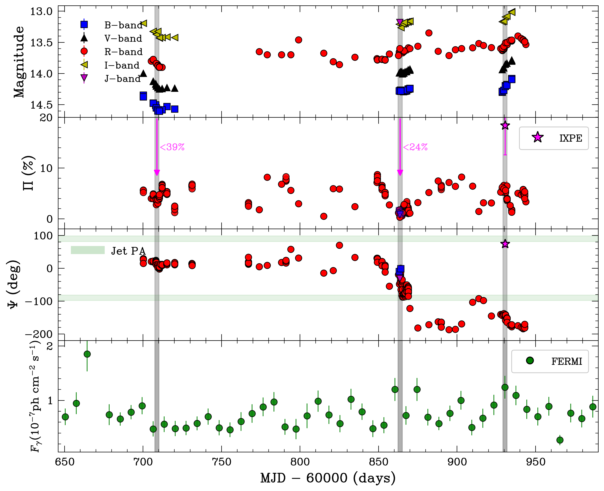
图注：Temporal evolution of the flux (optical and $\gamma$-ray) and the optical polarization properties of PG\,1553+113. From top to bottom, the panels show the source brightness expressed in magnitudes; the optical polarization degree; the polarization angle; and the $\gamma$-ray light curve in the 0.1--100~GeV energy range, with the weekly photon flux measured by the \(\textit{Fermi}-LAT\) during the \(\textit{IXPE}\) monitoring campaign. The time intervals corresponding to the \(\textit{IXPE}\) observations are highlighted by gray shaded regions. Error bars indicate $1\sigma$ uncertainties. {\(\it\) IXPE} upper limits (arrows) and measurements (stars) are shown in magenta. Finally, the horizontal green bars shows the direction of the jet.
对应解读：对应“建议重点查看的图表”第1、2项，以及“关键图表逐图导读”图1和图2：多波段光变、光学偏振度与EVPA时间序列、IXPE观测窗口。
入选理由：这张图直接把光学亮度、光学偏振度、EVPA、Fermi-LAT伽马射线光变和IXPE观测区间放在同一时间轴上，是判断超过150° EVPA旋转、偏振度近零低谷、以及这些事件与三次IXPE指向相对时序的核心图。相比其他候选图，它最直接支撑日报中关于光学偏振事件和多波段同步性的详细解读。
来源与置信度：\(arxiv_source\)；high；\(arxiv_source\) / accepted.tex:figure[5]
Fig04
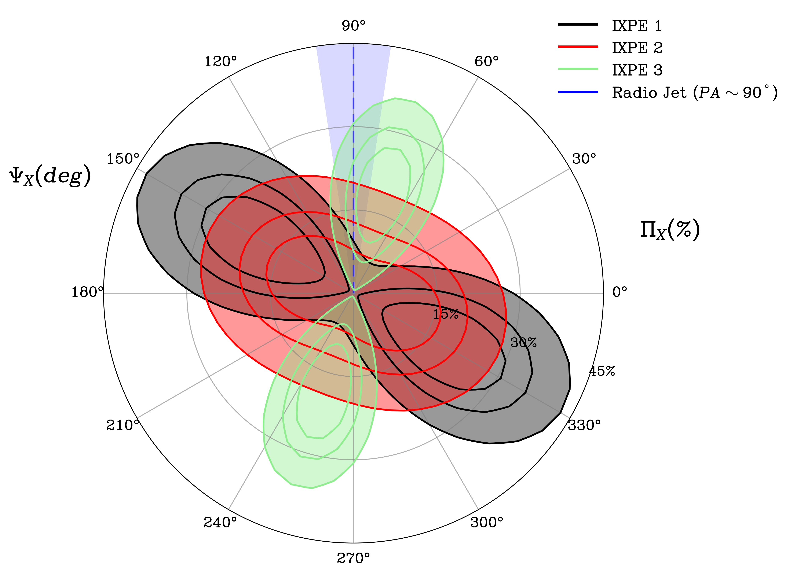
图注：Confidence regions for the polarization properties of PG\,1553+113 at 68\%, 90\% and 99\% confidence level. Only Obs. 3 enables us to determine both the X-ray polarization degree and angle. The jet projection is taken from \(\citet\)[][]{Capecchiacci2025}.
对应解读：对应“建议重点查看的图表”第4项，以及“关键图表逐图导读”图4：IXPE偏振置信区间、第三次观测的X射线偏振探测和前两次上限。
入选理由：这张图给出PG 1553+113的X射线偏振置信区域，明确显示只有Obs. 3能同时约束偏振度和偏振角，是验证Π_X=18.4±5.8%、Ψ_X=74°±9°以及零偏振是否被排除的关键证据。它也最适合说明低信噪偏振测量不能简单用对称误差解释。
来源与置信度：\(arxiv_source\)；high；\(arxiv_source\) / accepted.tex:figure[4]
Fig06
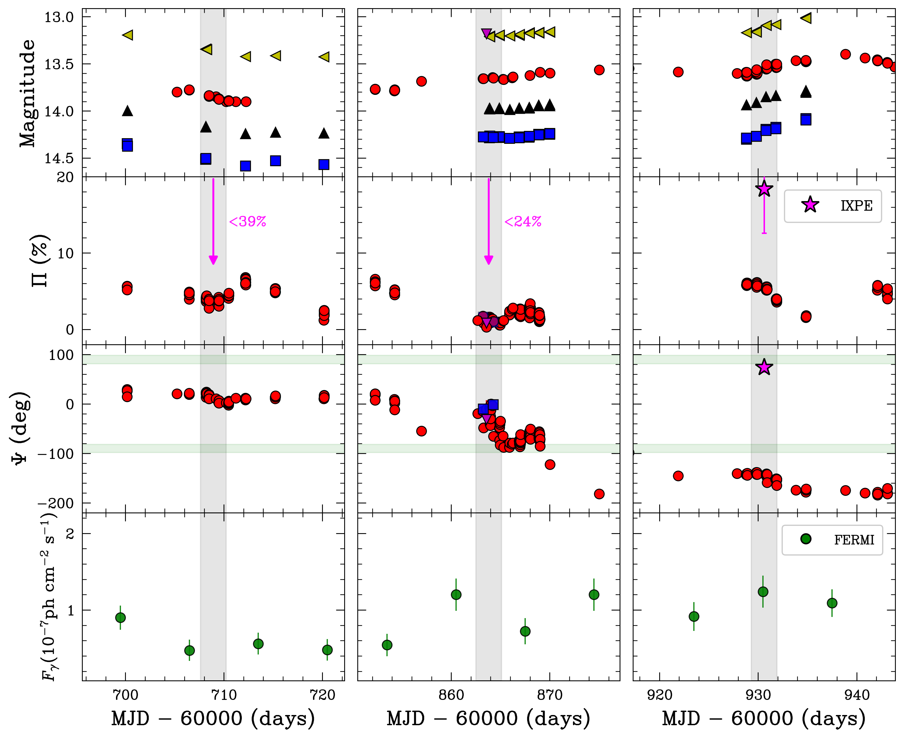
图注：Zooms extracted from Fig.~\(\ref{mwl}.\) The different panels focus on the multi-wavelength behavior of PG\,1553+113 before and after the {\(\it\) IXPE} pointings. The quantities in the different sub-plots are the same as for Fig.~\(\ref{mwl}.\)
对应解读：对应“建议重点查看的图表”第2项，以及“关键图表逐图导读”图2：IXPE观测前后光学偏振事件的局部放大。
入选理由：Fig06是从多波段时间序列中提取的局部放大图，重点展示IXPE指向前后源的光学和偏振行为。对于检查EVPA快速旋转的持续时间、采样密度、偏振度低谷是否与旋转中心重合，它比全局视图更清楚，因此非常适合嵌入日报的逐图导读。
来源与置信度：\(arxiv_source\)；high；\(arxiv_source\) / accepted.tex:figure[6]
Fig01
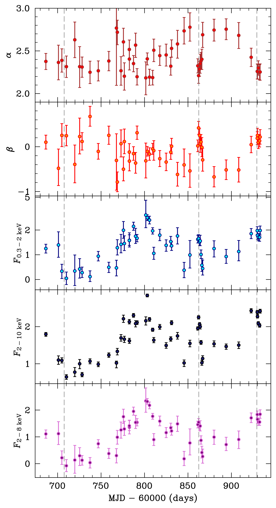
图注：Temporal evolution of the spectral properties ($\alpha$ and $\beta$ panels) and the flux in multiple bands of PG\,1553+113. Vertical dashed lines identify the epochs of the \(\textit{IXPE}\) exposures. Fluxes are in units of 10$^{-11}$ erg cm$^{-2}$ s$^{-1}$.
对应解读：对应“建议重点查看的图表”第1和第5项，以及“关键图表逐图导读”图1、图5：多波段流量、谱参数α和β、IXPE曝光时刻、X射线约5倍变化和谱态演化。
入选理由：这张图展示PG 1553+113在多个波段的流量和谱形参数随时间演化，并用竖虚线标出IXPE曝光时刻。它是检验X射线通量大幅变化是否与谱形变化或其他波段活动同步的主要图，也能支撑日报中关于第三次偏振探测是否处于特殊X射线谱态的讨论。
来源与置信度：\(arxiv_source\)；high；\(arxiv_source\) / accepted.tex:figure[1]
Fig02
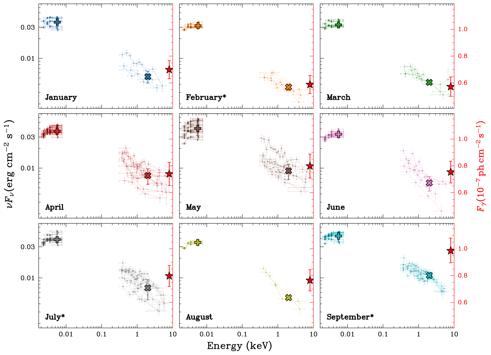
图注：Monthly SEDs of PG\,1553+113 during January--September 2025, covering the optical/UV and X-ray bands. Each panel shows the collected {\(\it\) Swift} UVOT and XRT data. Both the ultraviolet and X-ray emissions exhibit significant variability in amplitude and spectral shape. The black asterisks near the name of months in the bottom of panels mark the months during which {\(\it\) IXPE} observed the source. The corresponding monthly {\(\it\) Fermi}-LAT flux level \(\citep\)[][]{Abdollahi2023} is shown as a red star in each sub-panel. The right y-axis provides the scale for the $\gamma$-ray flux.
对应解读：对应“建议重点查看的图表”第6项，以及“关键图表逐图导读”图6：月尺度光学/紫外到X射线SED和近同时谱形。
入选理由：Fig02给出2025年1月至9月的月度SED，覆盖Swift/UVOT和XRT数据，并标出IXPE观测月份及Fermi-LAT通量水平。它有助于判断IXPE能段相对于同步辐射分量的位置，以及光学/紫外与X射线是否可能由同一同步辐射成分连接。
来源与置信度：\(arxiv_source\)；high；\(arxiv_source\) / accepted.tex:figure[2]
Fig03
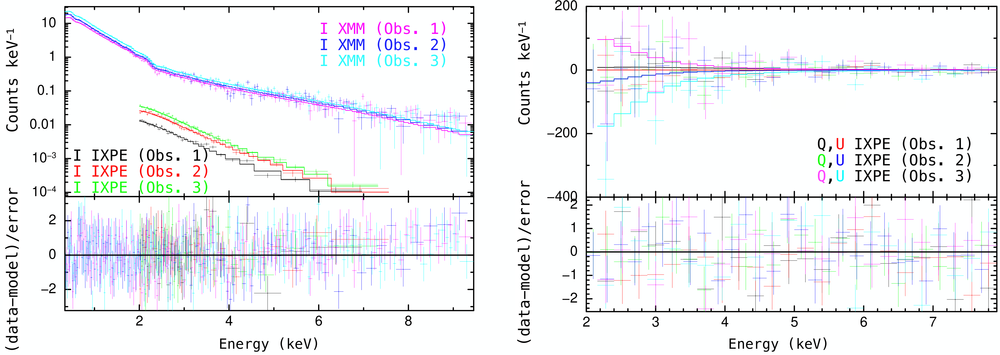
图注：{\(\it\) Left panel}: Best fit to the $I$ Stokes (i.e., total flux density) spectra derived for the \(\textit{IXPE}\) and {\(\it\) XMM-Newton} observations reported in Table~\(\ref{obslog}.\) {\(\it\) Right panel}: The corresponding best-fit to the $Q$ and $U$ Stokes spectra.
对应解读：对应“模型拟合”和“建议重点查看的图表”第4、5项：IXPE/XMM-Newton的I、Q、U Stokes谱拟合与X射线偏振参数估计。
入选理由：这张图展示IXPE和XMM-Newton观测的总强度I谱以及Q、U Stokes谱最佳拟合，直接关联事件级Stokes估计和X射线偏振拟合方法。虽然它不是日报中特别期待的Q-U平面轨迹图，但能支持关于X射线偏振统计建模、能谱假设和Stokes参数拟合可靠性的讨论。
来源与置信度：\(arxiv_source\)；high；\(arxiv_source\) / accepted.tex:figure[3]
强相关工作
这篇工作与 IXPE 对其他 BL Lac 和高同步峰耀变体的观测形成直接联系。近年 IXPE 已显示，一些耀变体的 X 射线偏振度显著高于光学/射电，暗示 X 射线来自更紧凑、更有序的高能电子区域；另一些源则表现出波段间 EVPA 不一致，提示能量分层或多区叠加。检索时可用关键词“IXPE blazar polarization”, “X-ray polarization BL Lac”, “high-synchrotron-peaked blazar IXPE”。
在理论上，本文与喷流激波模型、湍流多细胞模型、螺旋磁场模型和磁重联模型都有交集。EVPA 大旋转长期存在争议：有些研究把它视为辐射团沿弯曲或螺旋轨迹运动的证据，有些则证明随机湍流也可产生类似旋转。本文的近零偏振度事件特别支持从 Stokes 矢量叠加角度重新审视 EVPA 旋转，而不是把旋转角度本身过度解释。检索关键词包括“EVPA rotation blazar”, “Stokes parameters depolarization blazar”, “shock-in-jet polarization”, “turbulent extreme multi-zone blazar”。
与可能的相反观点相比，单一区域同源模型若要求光学和 X 射线严格共空间，就需要解释为何光学偏振在某些时刻几乎抵消而 X 射线偏振在另一历元可达到较高水平。完全随机湍流模型可以产生复杂 EVPA，但要同时解释大幅快速旋转、去偏振和第三次 IXPE 显著偏振，需要对湍流细胞数、寿命和能量分层作额外约束。因此这篇文章的价值不在于排除所有竞争模型，而在于把模型比较推进到时间依赖、宽波段偏振的层面。
相似工作：
- https://arxiv.org/abs/2605.12602
- https://ui.adsabs.harvard.edu/search/q=IXPE%20blazar%20polarization
- https://ui.adsabs.harvard.edu/search/q=PG%201553%2B113%20polarization
基础理论 / 方法工作：
- https://arxiv.org/abs/astro-ph/0411694
- https://ui.adsabs.harvard.edu/search/q=synchrotron%20radiation%20polarization%20Rybicki%20Lightman
- https://ui.adsabs.harvard.edu/search/q=shock%20in%20jet%20model%20blazar%20polarization
相反观点 / 张力线索：
- https://ui.adsabs.harvard.edu/search/q=EVPA%20rotation%20blazar%20random%20walk
- https://ui.adsabs.harvard.edu/search/q=turbulent%20extreme%20multi-zone%20blazar%20polarization
- https://ui.adsabs.harvard.edu/search/q=helical%20magnetic%20field%20EVPA%20rotation%20blazar
说明
评分由 LLM 给出初评，再由本地阈值策略过滤；IACT、TeV 伽马射线和高能中微子天文学按重点方向处理。